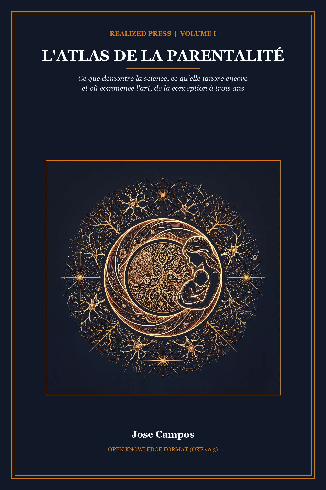

Realized Press · Reader Edition — Working Slice (2026-11-13)

Le Guide d'urgence de 2 h du matin
La science du développement s'articule autour de trois registres fondamentaux qu'il ne faut jamais confondre : la Science (ce que les essais contrôlés mesurent), l'Interprétation (la manière dont les systèmes biologiques et sociaux interagissent) et l'Art (ce que le jugement parental posé exige au quotidien). La plupart des débats éducatifs tournent à la dispute anxiogène parce que ces trois plans sont mélangés sans nuance. Une étude clinique montrant qu'une vitamine prévient une anomalie rare se transforme en injonction angoissante d'optimiser le moindre choix. Une corrélation nulle dans une école maternelle sert d'alibi pour ignorer la précarité des familles.
Cet atlas propose une cartographie causale et rigoureuse des mille premiers jours, depuis environ un an avant la conception jusqu'à l'âge de trois ans. La prose narrative utilise un français clair, concret et imagé. Les détails cliniques, les noms d'enzymes, les tailles d'effet statistique et les degrés de certitude sont réservés aux notes de fin de chapitre.
Si vous lisez ces lignes à deux heures du matin avec un nourrisson agité dans les bras, vous n'avez pas besoin d'un cours magistral de vingt pages. Utilisez ce guide d'urgence pour trouver votre question, rejoignez directement la section concernée et lisez l'essentiel en une phrase.
Q : Une semaine de stress intense au travail a-t-elle nui à mon bébé ?
Chapitre 1 (Mouvement IV) — Les preuves à haut niveau de certitude démontrent que le placenta forme un bouclier chimique qui neutralise la majorité du cortisol actif avant qu'il n'atteigne le sang fœtal. Le stress ordinaire du quotidien n'est pas un poison.
Q : Pourquoi prendre de l'acide folique avant même de savoir que l'on est enceinte ?
Chapitre 1 (Mouvement III) — Le tube neural se referme au vingt-huitième jour après la conception, souvent avant le premier retard de règles. Prendre 400 microgrammes par jour couvre cette fenêtre critique et prévient environ 70 % des anomalies de fermeture du tube neural.
Q : Faut-il acheter du « méthylfolate » coûteux plutôt que de l'acide folique en cas de mutation MTHFR ?
Chapitre 1 (Mouvement III) — Non. Tous les grands essais cliniques mondiaux ayant prouvé la baisse des anomalies ont utilisé l'acide folique standard, parfaitement métabolisé par l'organisme. Les compléments coûteux de méthylfolate relèvent du marketing commercial sans preuve médicale supérieure.
Q : L'âge du père lors de la conception augmente-t-il les risques d'autisme ou de mutations génétiques ?
Chapitre 1 (Mouvement II) — Les hommes de plus de 45 ans transmettent légèrement plus de mutations spontanées, mais le risque absolu d'anomalie rare ou d'autisme reste très faible. La grande majorité des enfants nés de pères plus âgés grandissent en parfaite santé.
Q : Les bébés entendent-ils les voix et mémorisent-ils la musique dans l'utérus ?
Chapitre 2 (Mouvement I) — Dès le troisième trimestre, l'ouïe fœtale fonctionne pleinement. Dès les premières heures après la naissance, les nouveau-nés reconnaissent la voix de leur mère et les intonations de leur langue maternelle. Une conversation quotidienne suffit amplement à stimuler le fœtus.
Q : Une césarienne perturbe-t-elle le microbiote ou l'attachement précoce ?
Chapitre 3 (Mouvement II) — L'attachement se tisse à travers des milliers d'échanges quotidiens pendant des mois, et non durant une seule heure magique. Les bébés nés par césarienne développent un attachement sécure au même rythme que les autres. Les écarts initiaux de microbiote se réduisent vite grâce au peau à peau et aux tétées.
Q : La jaunisse du nouveau-né est-elle dangereuse, et faut-il recourir au « semis vaginal » après une césarienne ?
Chapitre 3 (Mouvement II) — La jaunisse bénigne est fréquente et se traite efficacement à l'hôpital sous des lampes de photothérapie certifiées ; n'exposez jamais un nouveau-né directement au soleil. Le frottis de gazes vaginales présente de réels risques infectieux sans aucun bénéfice médical démontré.
Q : L'allaitement maternel augmente-t-il réellement le quotient intellectuel à long terme ?
Chapitre 3 (Mouvement III) — Les essais randomisés et les comparaisons entre frères et sœurs montrent que le lait maternel offre une protection immunitaire éprouvée contre les infections digestives, mais les écarts de quotient intellectuel à long terme entre enfants d'une même fratrie sont quasi nuls.
Q : Mon bébé a-t-il vraiment besoin d'une opération du frein de langue ?
Chapitre 3 (Mouvement III) — Les revues cliniques indiquent que la chirurgie pour frein de langue court est largement surdiagnostiquée. Elle améliore rarement l'alimentation par rapport à un accompagnement attentif par une consultante en lactation.
Q : Quand introduire le beurre de cacahuète pour prévenir les allergies alimentaires ?
Chapitre 4 (Mouvement IV) — L'essai clinique de référence LEAP a prouvé qu'introduire des formes lisses d'arachide entre 4 et 11 mois réduit le risque d'allergie de 80 % en entraînant la tolérance immunitaire de l'intestin.
Q : La diversification menée par l'enfant (DME) provoque-t-elle plus d'étouffements que les purées ?
Chapitre 4 (Mouvement IV) — Les essais comparatifs révèlent que la DME bien encadrée ne présente pas plus de risques de fausse route que la cuillère, à condition d'éviter les aliments durs et ronds comme les grains de raisin entiers et les carottes crues.
Q : À quel moment peut-on coucher bébé dans sa propre chambre en toute sécurité ?
Chapitre 4 (Mouvement IV) — Partager la chambre parentale est particulièrement protecteur durant les quatre premiers mois, tant que les réflexes de réveil sont immatures. Après six mois, installer l'enfant dans sa chambre calme n'accroît pas le risque et améliore souvent le sommeil de toute la famille.
Q : Le bruit blanc est-il sans danger pour endormir un bébé ?
Chapitre 4 (Mouvement IV) — Le bruit blanc peut masquer les bruits soudains du foyer, mais un appareil placé trop près du berceau ou réglé au-delà de 50 décibels peut fatiguer l'ouïe fragile du nourrisson. Placez l'appareil à plus de deux mètres et à faible volume.
Q : La méthode 5-10-15 ou l'apprentissage autonome du sommeil abîment-ils l'attachement ?
Chapitre 4 (Mouvement II) — De multiples essais randomisés prouvent que l'extinction progressive et l'accompagnement bienveillant aident les bébés à dormir plus longtemps sans altérer l'attachement ni augmenter les hormones de stress sur le long terme.
Q : Que se passe-t-il lors de la régression du sommeil des 4 mois, et que donner à manger à 6 mois ?
Chapitre 4 (Mouvements II et IV) — Vers 4 mois, le sommeil du nourrisson se réorganise de façon définitive en cycles de quatre stades semblables à ceux de l'adulte, demandant l'apprentissage d'un endormissement autonome. À 6 mois, les réserves de fer s'amenuisent, rendant les aliments riches en fer essentiels au cerveau.
Q : Mon bébé traverse-t-il un « saut mental » prédéfini par un calendrier, ou pourquoi pleure-t-il subitement ce mardi ?
Chapitre 5 (Mouvement III) — Les études de réplication indiquent que les pics de pleurs des nourrissons ne suivent pas les semaines fixes d'un calendrier préprogrammé. Ces périodes reflètent des rythmes biologiques individuels, des apprentissages en cours ou de la fatigue.
Q : Pourquoi mon bébé jette-t-il volontairement sa cuillère par terre depuis sa chaise haute ?
Chapitre 6 (Mouvement IV) — Jeter des objets n'est pas une provocation, mais un premier laboratoire de physique. L'enfant teste la gravité, observe les trajectoires et vérifie si les bruits changent selon la surface d'impact.
Q : La tête plate de mon bébé nécessite-t-elle un casque de correction coûteux ?
Chapitre 6 (Mouvement II) — Un essai randomisé rigoureux sur la plagiocéphalie positionnelle a montré que les casques rigides n'apportent aucun bénéfice mesurable par rapport à la croissance naturelle et aux jeux au sol à deux ans. Dès que le bébé roule et s'assoit, le crâne s'arrondit spontanément.
Q : Combien de mots un enfant de 18 mois doit-il dire, et comment distinguer un parleur tardif d'un signe précoce d'autisme ?
Chapitre 7 (Mouvement II) — À 18 mois, la médiane se situe autour de 50 mots, mais prononcer 10 à 20 mots reste fréquent chez un enfant sain. Tant que l'enfant pointe du doigt pour partager son intérêt, soutient le regard et comprend les consignes simples, le langage suit son cours ; l'absence de pointage ou d'attention conjointe justifie un avis médical.
Q : Les écrans provoquent-ils un retard de langage chez les tout-petits ?
Chapitre 7 (Mouvement IV) — Les vidéos et programmes passifs n'enseignent pas de vocabulaire aux bébés. Le retard de langage n'est pas causé par l'écran en soi, mais par la disparition des échanges vivants et des tours de parole qu'il remplace.
Q : Parler deux langues à la maison risque-t-il d'embrouiller mon enfant ?
Chapitre 7 (Mouvement V) — Grandir dans un foyer bilingue ne provoque aucun retard de parole. Les enfants assimilent naturellement plusieurs langues dès lors qu'ils entendent des conversations régulières et riches dans chaque registre.
Q : Mettre un bébé en crèche collective nuit-il à son attachement ou augmente-t-il trop son stress ?
Chapitre 8 (Mouvement II) — De vastes études longitudinales confirment que l'accueil en crèche collective ne compromet pas la sécurité de l'attachement. Ce qui compte pour le développement, c'est la chaleur humaine et la qualité des interactions au quotidien, bien plus que le lieu de garde.
Q : Vaut-il mieux choisir une assistante maternelle ou une crèche collective pour un tout-petit ?
Chapitre 8 (Mouvement IV) — Les données de suivi de l'institut NICHD révèlent que l'épanouissement de l'enfant ne dépend pas du mode d'accueil choisi. La stabilité des adultes référents, leur écoute verbale et un faible roulement du personnel importent bien davantage que la structure d'accueil.
Q : Pourquoi dire « calme-toi » est-il inefficace pendant une crise de colère ?
Chapitre 9 (Mouvement IV) — Une colère commence par une flambée émotionnelle vive qui déconnecte momentanément les circuits du langage chez le tout-petit. Parler durant le pic ajoute du bruit. Attendez calmement que la tempête retombe en larmes avant de proposer un câlin réconfortant.
Q : Pourquoi mon enfant tape-t-il alors qu'il connaît parfaitement l'interdit ?
Chapitre 10 (Mouvements I et III) — Les gestes impulsifs culminent naturellement entre deux et trois ans, car un enfant en colère possède des mains fortes avant d'avoir les mots pour négocier. Comprendre le mot « non » survient bien avant que les freins neurologiques du cerveau soient construits.
Q : L'éducation bienveillante rend-elle les enfants capricieux ou opposants ?
Chapitre 10 (Mouvement II) — Une autorité saine associe une grande chaleur affective à des limites claires et régulières. L'empathie accueille l'émotion de l'enfant, mais les décisions et la sécurité restent la responsabilité de l'adulte ; refuser de poser des limites engendre de l'anxiété chez l'enfant.
Q : Comment savoir si un enfant est réellement prêt pour la propreté et le pot ?
Chapitre 10 (Mouvement V) — La capacité vésicale et les connexions nerveuses mûrissent entre 22 et 30 mois. Forcer l'apprentissage trop tôt prolonge l'épreuve sur plus d'un an, alors qu'attendre les signaux de maturité permet une transition sereine en quelques semaines.
Q : Le test du marshmallow a-t-il vraiment prouvé que la volonté détermine la réussite future ?
Chapitre 11 (Mouvement III) — Les réplications modernes ont démontré que le test de la guimauve mesurait surtout le niveau de vie du foyer, la stabilité familiale et la fiabilité des adultes, plutôt qu'une volonté innée. Les enfants attendent volontiers quand les adultes tiennent parole.
Q : Les kits de jouets Montessori coûteux rendent-ils les tout-petits plus intelligents ?
Chapitre 12 (Mouvements III et IV) — Les recherches indiquent que les jeux d'imitation et les objets simples du quotidien sollicitent les mêmes compétences cognitives que les matériels de marque. Disposer quatre à six jouets sur une étagère évite la surcharge visuelle, tandis que des boîtes en carton et des cubes en bois stimulent tout autant l'imaginaire.
Q : Pourquoi ai-je des accès soudains de rage maternelle (post-partum rage), et quel est l'impact réel du congé parental ?
Chapitre 13 (Mouvements II et III) — Le manque sévère de sommeil et la surcharge nerveuse déclenchent de violentes colères post-partum souvent ignorées par les questionnaires de dépression classiques. Un congé parental rémunéré et un réel relais domestique diminuent nettement l'épuisement maternel et protègent la régulation du bébé.
Q : La personnalité et l'intelligence de mon enfant sont-elles scellées à l'âge de trois ans ?
Chapitre 15 (Mouvement III) — Les suivis longitudinaux de référence montrent qu'environ 90 % des trajectoires individuelles restent ouvertes au changement après trois ans. Ces premières années constituent un formidable socle de départ, jamais un verdict gravé dans le marbre.
Fertilité, âge parental, folates et effets réels du stress prénatal
Il existe un instant précis où un enfant devient visible pour la première fois.
Cet instant survient parfois dans la pénombre d'une salle d'échographie. Une étincelle blanche palpite sur un écran sombre, et soudain, les battements du cœur s'invitent dans la pièce. Ailleurs, ce moment surgit des semaines plus tard : un coup franc sous une paume immobile, un cliché thermique aux coins recourbés ou le premier cri sous les néons de la maternité. Nous chérissons ces jalons parce qu'ils offrent un point de départ rassurant. Une date s'inscrit sur un dossier médical et l'histoire familiale commence officiellement.
La biologie humaine ne guette pas cet instant. Quand l'écho cardiaque apparaît sur l'écran, les cellules se sont déjà divisées des dizaines de fois dans le secret de l'utérus. De fins feuillets de tissu se sont repliés pour ébaucher les premiers organes, et la charpente du cerveau et du cœur est déjà en place. Entre la mère et le fœtus, le placenta échange déjà de l'oxygène et des nutriments entre deux flux sanguins distincts. Dans le même temps, les adultes qui accueilleront cet enfant se transforment : leurs hormones varient, leurs réseaux cérébraux se réorganisent et leurs habitudes quotidiennes s'ajustent. L'enfant n'a pas encore respiré à l'air libre, mais la construction d'une vie humaine bat déjà son plein.
C'est là l'énigme inaugurale de cet atlas, sous laquelle repose une vérité fondamentale : l'environnement d'un enfant commence bien avant la conception. Les ovocytes et les spermatozoïdes portent une histoire vivante. Les vitamines, l'âge des parents, les contraintes du travail et les conditions de vie n'attendent pas l'apparition d'un trait rose sur un test urinaire. Ils agissent déjà bien avant l'achat du premier berceau.
Songez à deux futurs parents qui hésitent devant le rayon des vitamines. L'un s'inquiète d'un coup de stress au travail ou d'allégations sur le méthylfolate ; l'autre choisit un simple comprimé d'acide folique à 400 microgrammes avant même la conception. Le marketing présente ces deux soucis comme aussi urgents, mais l'expérience montre qu'ils appartiennent à deux univers distincts. Distinguer les expositions qui modifient vraiment l'embryon du bruit commercial reste la première tâche de la science.
La plupart des manuels de puériculture débutent sur le chemin du retour, quand on installe un nouveau-né dans son siège auto. La biologie vivante enclenche le compte à rebours bien plus tôt, au cœur des cellules et du quotidien des adultes, avant le début de la grossesse.
Pourquoi prendre des folates avant même de savoir si l'on est enceinte ? Le stress ordinaire du travail ou les sautes d'humeur risquent-ils de nuire au fœtus ? Dans quelle mesure l'âge paternel influence-t-il la santé de l'enfant ? Quand les futurs parents cherchent des réponses tard le soir, ils tombent presque toujours dans l'un des deux pièges habituels.
Si l'on démarre l'horloge trop tard en traitant le nouveau-né comme une page vierge, on ignore des fenêtres biologiques brèves dès la fécondation. À l'inverse, interpréter la biologie précoce avec angoisse fait basculer dans le fatalisme. On craint alors qu'un repas sauté, l'âge des parents ou un mardi tendu figent l'avenir de l'enfant. Entre ces deux écueils, distinguer la science mesurable, l'interprétation sur la durée et l'art du quotidien dessine notre ligne directrice : la continuité sans destin figé. La biologie s'amorce tôt, mais l'enfant reste souple et ouvert aux soins attentifs des années suivantes.
Comprendre cette carte exige un pacte clair entre l'auteur et le lecteur. Tout au long de cet atlas, nous distinguerons trois registres sans les confondre : la science, l'interprétation et l'art. La science désigne ce que les chercheurs mesurent, confrontent à des groupes témoins et reproduisent. Quand des essais cliniques rigoureux ou des études génétiques valident un fait, nous affirmons que les données le démontrent. Quand plusieurs travaux convergents vont dans le même sens, nous disons que les résultats le suggèrent. Et quand un constat provient de simples sondages où l'environnement familial brouille les pistes, nous indiquons qu'un facteur est associé à un autre.
L'interprétation consiste à évaluer ce que ces chiffres signifient dans un foyer réel. Une légère variation du risque moyen observée sur dix mille naissances constitue un signal de santé publique, mais ne prédit en rien le destin d'un enfant unique. Le discernement consiste à examiner ce qu'une étude ne peut pas affirmer avant d'en tirer des conclusions hâtives. Enfin, l'art incarne ce savoir-faire humain qu'aucun protocole ne peut chiffrer : la tendresse, l'écoute, la patience et le bon sens que vous offrez à votre enfant jour après jour.
Quand ces trois registres se confondent, un simple chiffre se transforme en devoir moral. La science tourne alors au réquisitoire contre les familles. Les séparer nettement permet d'aborder la période avant la naissance avec clarté et sérénité.
Ce regard posé devient précieux dès qu'on observe les ovocytes et les spermatozoïdes. Les cellules reproductrices ne sont pas des données figées dans un coffre froid. Ce sont des tissus vivants qui respirent et partagent les décennies de la vie adulte.
Chez l'homme, les cellules qui fabriquent les spermatozoïdes se divisent sans relâche dès la puberté, environ tous les seize jours. À chaque copie, une minuscule faute de frappe peut se glisser sur l'ADN. En séquençant jusqu'à 1 548 trios familiaux islandais, Augustine Kong et Hákon Jónsson ont démontré l'existence d'une horloge moléculaire régulière.1 Les mutations spontanées croissent surtout avec l'âge du père, ajoutant environ une à deux retouches par année de vie.
Que signifie cette horloge pour un enfant concret ? Une vaste étude suédoise sur plus de 2,6 millions de naissances menée par Brian D'Onofrio a apporté un résultat nuancé. Même entre frères et sœurs d'un même père, un âge paternel supérieur à 45 ans gardait un risque relatif accru d'autisme ou de psychose.2 Cependant, la modélisation génétique de Jacob Gratten et Liselotte Petersen suggère que les mutations spontanées n'expliquent qu'environ 10 à 20 % du risque global. Le reste provient d'une vulnérabilité génétique familiale liée à une paternité plus tardive.2 Surtout, le risque absolu demeure rassurant : de 96 à 98 % des enfants nés d'un père âgé de plus de 45 ans ne développent aucun de ces troubles.
L'horloge biologique concerne les deux parents selon des mécanismes opposés. Contrairement aux spermatozoïdes renouvelés chaque mois, les ovules de la femme se forment avant sa propre naissance et restent en attente des décennies.3 Après 35 à 40 ans, la fertilité baisse par cycle et la répartition des chromosomes perd en précision. Ainsi, la probabilité de trisomie 21 passe d'environ un cas sur 1 250 à vingt-cinq ans à près d'un sur 100 à quarante ans.3 Par ailleurs, les légers écarts observés après une fécondation in vitro traduisent surtout l'infertilité préalable des parents, non le geste de laboratoire.
À l'échelle des populations, l'âge parental plus élevé s'accompagne souvent de revenus plus stables, d'un soutien accru et d'écoles plus solides. Les travaux démographiques de Mikko Myrskylä et Alice Goisis suggèrent que ces atouts sociaux compensent fréquemment les fragilités biologiques associées à la conception tardive.4 Deux légères retouches sur trois milliards de lettres décrivent une mécanique cellulaire ; elles ne fixent jamais la personnalité d'un enfant.
Une confusion analogue entoure un terme très en vogue : l'épigénétique. Dans chaque cellule, de petites balises chimiques agissent sur l'ADN comme des variateurs de lumière. Elles indiquent à la cellule quels gènes activer ou éteindre sans modifier le code lui-même. Sans ces interrupteurs, un neurone et une cellule du foie partageant exactement le même ADN ne pourraient accomplir des tâches si différentes. De plus, lors de la formation des gamètes puis durant les premiers jours après la fécondation, la quasi-totalité de ces marques est effacée afin que l'embryon reparte sur des bases neuves.
Dans certains discours anxiogènes, l'épigénétique est détournée en un fardeau culpabilisant. On avertit les futurs parents qu'une période de deuil, un emploi rude ou un coup de blues imprimeront des cicatrices durables dans l'ADN du futur bébé. En laboratoire, les études sur des modèles animaux suggèrent que ces balises chimiques régulent la différenciation des tissus embryonnaires. Mais chez l'humain, prétendre que l'humeur ordinaire, l'alimentation ou le stress passager des parents altèrent les gènes de l'enfant est associé à de forts biais familiaux et ne repose sur aucune base solide.5 Ces interrupteurs cellulaires servent au fonctionnement des organes, non à dresser un bilan de culpabilité parentale.
Après la fécondation, l'embryon ne grossit pas simplement comme un ballon qu'on gonfle d'air. Il s'édifie étape par étape selon un calendrier biologique précis. D'abord, la cellule initiale se divise pour former un amas microscopique. Puis cet amas s'organise en feuillets cellulaires distincts qui façonnent chaque organe du corps humain. Ce n'est que dans les derniers mois de grossesse que le fœtus consacre l'essentiel de son énergie à prendre du poids et accumuler des réserves.6 Comme chaque semaine suit son propre programme, une exposition survenant lors du repliement d'un tissu produit des effets très différents de la même exposition quelques mois plus tard.
Cette construction par étapes s'observe avec éclat dans le cerveau fœtal. Semaine après semaine, les jeunes neurones naissent dans les profondeurs de l'encéphale, migrent vers l'extérieur le long de fibres guides et se superposent pour constituer les six couches du cortex.7 Cette ascension méthodique démontre un ordre remarquable à travers les espèces. Pourtant, la naissance ne scelle nullement l'achèvement du système nerveux. L'accouchement déplace un cerveau en pleine maturation hors du milieu utérin vers un monde de lumière, de voix et de caresses. Confondre le développement cérébral prénatal avec un pronostic intellectuel revient à confondre la chape de béton d'une maison avec la musique qui y résonnera des années plus tard.
Pour saisir pourquoi le tempo compte à ce point, penchons-nous sur l'essai clinique qui a transformé la médecine prénatale : l'étude de Nicholas Wald pour le Medical Research Council (MRC) en 1991. Pendant des générations, le corps médical s'est heurté aux anomalies de fermeture du tube neural comme le spina-bifida, où la colonne vertébrale ou la voûte crânienne ne se referment pas correctement. Les registres sanitaires montraient que ces malformations frappaient davantage les milieux modestes et les grossesses débutées en hiver. Pourtant, les spécialistes s'opposaient sur l'origine du phénomène. S'agissait-il de précarité générale, de transmission génétique ou du manque d'un nutriment particulier au début de la gestation ?
Pendant longtemps, la médecine doutait qu'une simple vitamine pût éviter une malformation grave. De premières enquêtes montrèrent que les femmes prenant des vitamines avaient moins d'enfants touchés. Mais les sceptiques pointèrent un biais évident : ces mères avaient aussi de meilleurs repas et des revenus plus élevés.
Pour trancher la question avec rigueur, Nicholas Wald et son équipe menèrent un essai randomisé dans trente-trois hôpitaux de sept pays.8 Ils suivirent 1 817 femmes ayant déjà connu une malformation de la colonne vertébrale, dont 1 195 menèrent une grossesse à terme. Les participantes recevaient au hasard 4 milligrammes quotidiens d'acide folique, d'autres vitamines, les deux ou un placebo.
En 1991, la prévention des récidives fut si nette que l'essai s'arrêta avant terme. Le taux tomba de 3,5 % à 1,0 %, soit une baisse de 72 %.8 Cependant, cette forte dose de 4 milligrammes ciblait uniquement les mères à haut risque de récidive. Pour la population générale, Czeizel à 800 microgrammes et Berry auprès de près de 250 000 femmes à 400 microgrammes prouvèrent la prévention du premier cas. Cette dose simple d'acide folique public réduisit les cas de 41 % au sud et de 79 % au nord de la Chine.8
Une revue Cochrane de cinq essais regroupant 6 708 naissances démontre ainsi avec certitude une prévention d'environ 70 %.8 En France, les autorités sanitaires conseillent 400 microgrammes par jour dès le projet de grossesse. Une dose de 4 à 5 milligrammes reste réservée aux risques élevés : antécédent similaire, diabète préalable, malabsorption ou certains traitements antiépileptiques.9
Dès l'enrichissement des farines, le marché du bien-être poussa la science trop loin. Des marques vendirent des gélules chères promettant d'éveiller le fœtus dans l'utérus. Puis des alertes agitèrent la peur de faux défauts génétiques, affirmant que le corps refusait l'acide folique simple pour imposer un « méthylfolate » de prix.
Les essais cliniques dressent un constat bien plus sobre. Tous les grands essais qui ont fait reculer les anomalies de plus des deux tiers utilisaient de l'acide folique standard et peu coûteux. Les analyses en laboratoire confirment que les femmes porteuses de ces variantes métabolisent parfaitement la vitamine ordinaire en carburant cellulaire actif. Les sociétés savantes d'obstétrique réaffirment que 400 microgrammes d'acide folique classique protègent efficacement toutes les femmes, quel que soit leur profil génétique.10
Les recherches ultérieures ont précisé les limites de cette avancée. Le tube neural se referme entre le vingt-et-unième et le vingt-huitième jour après la fécondation, avant même un test positif.11 D'autres multivitamines ne partagent pas cet effet et n'élèvent pas le quotient intellectuel scolaire.12 Le chapitre 2 détaille les vraies expositions nocives : alcool massif, tabac, diabète mal équilibré, isotrétinoïne et valproate. Le chapitre 14 applique ensuite le critère de persistance : ce qui dure à trois ans face à ce qui s'estompe à la maison.
L'exemple de l'acide folique porte un double enseignement. Une fenêtre biologique courte existe bel et bien, et une intervention simple suffit à protéger l'embryon. Mais apporter la brique manquante prévient une anomalie physique précise ; cela ne fabrique pas un cerveau supérieur.
Si l'acide folique illustre le succès d'une action ciblée, la recherche sur le stress prénatal montre où les inquiétudes quotidiennes dépassent largement la réalité des faits.
Dans l'imaginaire collectif, le lien entre l'angoisse maternelle et l'avenir de l'enfant est souvent perçu comme un conduit grand ouvert. Une semaine difficile au bureau élèverait le cortisol dans le sang de la mère. Cette hormone inonderait alors l'utérus, modifierait les circuits cérébraux du fœtus et rendrait l'enfant anxieux pour le restant de ses jours. Pourtant, lorsqu'on analyse cette chaîne physiologique, on découvre deux protections majeures : la barrière douanière du placenta et le miroir discret des gènes partagés.
D'abord, le sang maternel et le sang fœtal ne se mélangent jamais librement. Entre la mère et le bébé veille le placenta, filtre actif et non cloison rigide. La physiologie démontre qu'il tapisse sa frontière d'une enzyme inactivant environ 80 à 90 % du cortisol maternel actif.13 Ce mécanisme forme un amortisseur puissant, non un bouclier étanche à 100 %. Quand une déprime grave dure, que le corps s'enflamme ou que la tension monte fortement pendant la grossesse, ce filtre perd de sa force. Mais un mardi agité au bureau effleure à peine ce seuil protecteur.
Ensuite, d'où vient l'idée qu'une mère inquiète donne naissance à un enfant craintif ? Les sondages ordinaires mêlent la vie utérine aux traits hérités et aux soucis d'après la naissance. À Cardiff, Frances Rice a suivi 779 grossesses par don d'ovocytes pour trancher la question. Chez ces mères sans lien biologique avec l'enfant, le stress prénatal abaissait tout de même le poids de naissance : la croissance physique subissait un effet réel.
À l'inverse, le lien avec l'anxiété de l'enfant disparaissait chez les mères génétiquement non liées dès qu'on prenait en compte leur humeur actuelle. En Norvège, les équipes de Mari Bekkhus (10 990 paires de frères et sœurs) et de Laurie Hannigan (plus de 35 000 enfants) confirment cet écart. En comparant des enfants d'une même famille, l'effet comportemental chute de plus de moitié, jusqu'à s'effacer presque entièrement.14 Ce qui ressemblait à une séquelle hormonale reflétait surtout les gènes transmis et la fatigue réelle du foyer après l'accouchement.
Prendre conscience de ce que la science réfute retire un poids immense des épaules des parents. Une période de deuil, des nuits agitées ou des échéances serrées durant la grossesse ne constituent en aucun cas une condamnation pour votre futur enfant. Parallèlement, l'art du soin offre une raison bien plus forte de soutenir les femmes enceintes. Nous prenons soin d'une future mère non par peur qu'elle fragilise son fœtus, mais parce que son repos et son bien-être comptent dès aujourd'hui.
Tandis que l'embryon se déploie et devient fœtus, une métamorphose discrète s'opère également du côté des adultes. Le développement avant la naissance n'est pas un solo de l'enfant. C'est le prélude d'un duo qui commence à s'accorder.
Tout au long de la grossesse et des premiers mois, le cerveau maternel connaît de profonds réaménagements. Des imageries longitudinales menées par Elseline Hoekzema auprès de 25 nouvelles mères suggèrent un affinement ciblé de la matière grise dans les aires liées à l'empathie sociale.15 La presse caricature souvent ces résultats en parlant de « cerveau de maman ». En réalité, le cortex écarte le superflu pour réagir plus vite aux pleurs, au regard et aux besoins du nourrisson.
Ce réajustement cérébral ne se limite pas à la personne qui porte l'enfant. Dans l'étude observationnelle d'Eyal Abraham portant sur 89 nouveaux parents, l'imagerie paternelle est associée à des variations dans les circuits d'écoute et de soin.16 L'ampleur de cette plasticité suit fidèlement le nombre d'heures que le père passe en interaction directe avec son bébé. Devenir parent mobilise ces réseaux au fil des gestes quotidiens répétés.
Bien sûr, aucun couple ne vit cette transition en vase clos. Les méta-analyses de Jean Twenge (d = -0,19) relèvent un recul moyen du bien-être conjugal après la naissance. Le suivi sur huit ans de Brian Doss (d = -0,71 chez les mères, d = -0,45 chez les pères) précise cet écart. Toutefois, ces recherches suggèrent aussi une grande diversité de trajectoires.17 De nombreux partenaires restent soudés, tandis que les baisses nettes suivent le manque de sommeil et le partage inégal des tâches.
À l'échelle collective, les travaux de l'Organisation mondiale de la santé synthétisés par Linda Britto suggèrent le poids d'un filet social solide, thème repris au chapitre 13.18 Air pur, congés indemnisés et accès aux soins comptent bien plus qu'une quête solitaire de perfection.
À l'échelle de populations entières, les carences et expositions lourdes pèsent nettement sur la santé. Mais dans un foyer ordinaire, le placenta amortit l'essentiel des secousses du quotidien. Sur le plan individuel, la biologie tolère une émotion humaine normale et laisse une large marge aux soins qui suivent. Une prise simple d'acide folique à 400 microgrammes avant la conception, un suivi médical adapté et du repos partagé constituent les gestes raisonnablement justifiés. Au chapitre 2, nous franchirons la frontière placentaire pour observer comment le fœtus commence à entendre et à se préparer au monde extérieur.
Revenons un instant dans la pénombre de la salle d'échographie pour contempler à nouveau l'écran de contrôle.
La petite étincelle blanche n'a pas changé. Elle palpite avec la même constance et le même rythme vif. Ce qui a changé, c'est notre manière de la regarder. Cette pulsation n'est ni l'apparition magique d'un être venu de nulle part, ni le tic-tac inexorable d'un mécanisme dont le sort serait déjà scellé. C'est une première étape sur un chemin ouvert, protégée par la biologie et dotée d'une grande résilience. Elle attend simplement des adultes dévoués qui se transforment déjà pour aller à sa rencontre.
L'enfant n'est pas encore né. Mais le duo est déjà commencé.
The molecular replication relationship: Kong et al. (2012) and Jónsson et al. (2017, N = 1,548 Icelandic parent–offspring trios) showed that de novo point mutations rise steadily with father’s age (~1.5–2 additional mutations per year of continuous spermatogonial stem cell division vs. ~0.37/year maternal). ↩
Sibling-comparison relative-risk persistence (D'Onofrio et al. 2014, N = 2,615,081 Swedish births: paternal age ≥ 45 vs. 20–24 yielded within-family autism HR 3.45, ADHD HR 13.13, psychosis HR 2.07; absolute risk shifting from ~1–1.5% baseline to ~2–3.5%, leaving ~96–98% and >95% unaffected); causal share attributable to de novo mutations (~10–20% in population-genetic models; Gratten et al. 2016; Janecka et al. 2017; Petersen et al. 2011) alongside inherited polygenic liability for delayed fatherhood. ↩
Human oocytes arrest in meiosis I from fetal life onward and show steep age-related rises in meiotic non-disjunction/aneuploidy after age 35–40 (e.g., trisomy 21 rising from ~1 in 1,250 at age 25 to ~1 in 100 at age 40; Hassold & Hunt 2001; Morris et al. 2002); adverse singleton perinatal differences after IVF largely track underlying parental subfertility rather than laboratory fertilization itself. ↩
Parental socioeconomic stability, educational attainment, and macro-level secular health gains frequently offset biological risks associated with later childbearing at the population level (Myrskylä, Barclay & Goisis 2017; Barclay & Myrskylä 2016; Goisis et al. 2017). ↩
Epigenetic regulation (DNA methylation, histone modification, and reprogramming during gametogenesis and early embryogenesis) is a real class of biological process; ordinary parental behavior, diet, or mood writes a lasting developmental sentence through germline methylation in humans; as a license to treat parents as authors of a child’s future methylation profile. ↩
Pregnancy is not a single uniform nine-month window; process-specific developmental timing across preimplantation cleavage, gastrulation, and organogenesis as a teratologic principle (Wilson’s principles as reviewed in Ujházy et al. 2012). ↩
The histological sequence of neural progenitor proliferation, radial glial migration, and six-layered cortical assembly; treating unfinished prenatal cortex as a forecast of intelligence or personality. ↩
Periconceptional folic acid preventing neural tube defects during the narrow morphogenetic closure bottleneck; other anomalies and for later cognition. Separates recurrence (4 mg/day: Wald et al. 1991, N = 1,817 randomized / $1,195completed, RR 0.28, 3.5%\to1.0%) from general-population first occurrence (Czeizel & Dudás 1992,N = 4,156, 800 µg; Berry et al. 1999,N = 247,831$, 400 µg, 79% northern and 41% southern China reductions). The Cochrane pooled RR of 0.31 (95% CI 0.17–0.58; 6,708 births across 5 RCTs; De-Regil et al. 2015) combines four recurrence trials (RR 0.34) and one first-occurrence trial. ↩
Contexte régional (France): la Haute Autorité de Santé (HAS, 2017) et l'ANSES préconisent une supplémentation périconceptionnelle de 400 µg/jour d'acide folique débutée au moins un mois avant la conception et poursuivie jusqu'à la 12e semaine d'aménorrhée (5 mg/jour en cas d'antécédent d'anomalie de fermeture du tube neural ou de traitement antiépileptique). ↩
Standard folic acid prevents neural tube defects across all maternal genotypes; common methylenetetrahydrofolate reductase (MTHFR) polymorphisms warrant avoiding folic acid or purchasing specialized L-methylfolate (5-MTHF). The American College of Obstetricians and Gynecologists (ACOG) and the Centers for Disease Control and Prevention (CDC) advise against MTHFR screening, noting that population-level protection was achieved entirely with standard synthetic folic acid. ↩
Embryonic morphogenesis events (such as neural tube closure between days 21 and 28 post-fertilization) have clocks that do not wait for a positive pregnancy test; every preconception habit therefore has a comparable, clocked effect on later intelligence or temperament. ↩
Other preconception nutrients do not inherit folate’s High/stable NTD identification. beyond folate as a class; as a later-IQ checklist. (Dean 2014). ↩
Placental enzymatic mechanism: syncytiotrophoblast 11β-HSD2 oxidizes ~80–90% of active maternal cortisol into inactive cortisone (Benediktsson et al. 1997; Seckl & Holmes 2007); human stress-threshold buffering, as severe chronic maternal depression, inflammation, or preeclampsia down-regulate 11β-HSD2 activity (O'Donnell et al. 2012; Chapman et al. 2013); a placental biomarker forecasts a child’s later mind. ↩
Intrauterine birthweight/gestational shortening in genetically unrelated Cardiff donor-egg IVF pairs (Rice et al. 2010, N = 779, whereas offspring anxiety dropped out after adjustment for current maternal mood); behavioral outcomes, where within-family Norwegian sibling cohorts attenuate prenatal anxiety/depression associations by >50% toward null (Bekkhus et al. 2018, 10,990 sibling pairs in MoBa; Hannigan et al. 2018, N = 35,290), leaving postnatal distress as the primary proximal driver. Disaster, clinical trauma, and severe deprivation are not this card. ↩
Maternal longitudinal MRI cortical gray-matter remodeling across first pregnancy (Hoekzema et al. 2017, Nature Neuroscience, N = 25 first-time mothers); remodeling represents cognitive injury, IQ loss, or permanent maternal depletion. ↩
Observational correlation between hands-on caregiving engagement hours and first-time father brain-network activation/plasticity (Abraham et al. 2014, PNAS, N = 89 parents). ↩
Average post-birth couple satisfaction decline across heterogeneous latent trajectories (Twenge, Campbell & Foster 2003 meta-analysis d = -0.19; Doss et al. 2009 8-year longitudinal d = -0.71 mothers / d = -0.45 fathers, moderated by sleep loss and housework division); an inevitable uniform decline caused solely by becoming a parent. ↩
WHO preconception and Nurturing Care Frameworks (Britto et al. 2017, Lancet; WHO 2016/2018) widen the unit of analysis to environmental and social supports (developed in Chapter 13); a broad preconception lifestyle checklist improves later child IQ. Sources: britto-2017-lancet, who-anc-2016, who-nurturing-care-2018. ↩
Dans le secret de l'utérus : croissance cérébrale fœtale, nutrition, alcool et expositions du quotidien
Durant les dernières semaines de grossesse, une future mère s'installe chaque soir dans un fauteuil paisible. Elle lit à voix haute le même conte pour enfants. Moins de trois jours après la naissance, son nouveau-né repose dans un berceau d'hôpital. De petits écouteurs en mousse couvrent ses oreilles, et un capteur est fixé à sa tétine. En modulant son rythme de succion, le nourrisson de deux jours peut choisir quel enregistrement vocal écouter. En quelques minutes, il adopte la cadence exacte requise pour entendre l'histoire familière plutôt qu'un récit inconnu.
À la maison, la scène paraît tout à fait ordinaire. Sur le plan biologique, elle est admirable.
Si l'utérus était une chambre insonorisée qui isole l'enfant jusqu'à l'accouchement, un nouveau-né n'aurait aucun moyen de préférer une histoire à une autre. À l'inverse, si le fœtus était un petit écolier mémorisant des phrases dans le noir, cette préférence prouverait que les cours commencent avant la naissance. Aucune de ces deux fables ne résiste à l'examen. Les recherches expérimentales suggèrent que l'écoute de la parole en fin de grossesse module les préférences sonores du nouveau-né. En revanche, l'idée selon laquelle diffuser des enregistrements sur le ventre stimulerait l'intelligence est associée à une absence totale de gain cognitif durable ou de compréhension des mots.1
Cette frontière pose la question centrale de ce chapitre. Au chapitre 1, nous avons vu que le développement s'enclenche avant la conception et ne suit aucun scénario rigide. À présent, nous pénétrons dans l'utérus. Notre interrogation dépasse largement la question de savoir si un fœtus apprend. Nous voulons comprendre comment la grossesse fonctionne en tant que système physique. Comment les sons, les nutriments et les molécules traversent-ils ses frontières ? Et quelles promesses ce premier environnement peut-il honnêtement tenir ?
Pour comprendre pourquoi un nouveau-né se tourne vers un récit connu, il convient d'écarter deux mythes courants sur la grossesse. Le premier mythe est celui du conduit direct. Il affirme que tout ce qu'une femme enceinte mange, respire, entend ou ressent traverse son corps sans modification vers le fœtus. Le second mythe est celui du coffre scellé. Il prétend que rien d'important ne touche les sens ou les conduites de l'enfant avant la coupure du cordon ombilical.
La biologie fœtale révèle au contraire un filtre progressif. Les sollicitations de l'extérieur agissent d'abord sur l'organisme maternel. Cet organisme rencontre ensuite le filtre sélectif du placenta et la paroi protectrice de l'utérus. Le fœtus reçoit ainsi un signal adouci et transformé. Enfin, le corps en formation réagit selon les tissus qui s'élaborent durant cette semaine précise. Le chemin n'est jamais un aller simple reliant le monde extérieur au bébé :
Monde extérieur → Corps maternel → Filtre placentaire → Dose fœtale → Étape biologique → Effet
À chaque flèche de cette chaîne, les tissus amortissent, transforment ou retiennent le signal entrant. Un événement dans la journée de la mère ne se déverse jamais sous forme de dose brute chez le fœtus. Une accélération passagère du cœur fœtal ne signale aucune lésion cérébrale, et une tache précoce sur une échographie ne prédit nullement le caractère d'un enfant. De même, une tendance statistique mesurée sur dix mille grossesses ne dicte aucun destin au bébé blotti dans vos bras.
En 1986, Anthony DeCasper et Melanie Spence ont mené l'expérience fondatrice qui a éclairé la dimension sensorielle de ce passage à l'université de Caroline du Nord. Pendant des décennies, le corps médical supposait que les nouveau-nés arrivaient au monde avec des sens assoupis, car du liquide remplissait l'oreille moyenne avant la naissance. DeCasper et Spence remarquèrent que les tissus et le liquide amniotique transmettent efficacement les vibrations graves. Ils soupçonnèrent que la mélodie de la voix maternelle atteignait l'oreille interne durant les dernières semaines de gestation. Pour vérifier cette intuition sans apprentissage après la naissance, ils ont suivi seize femmes enceintes durant leur dernier mois et demi. Chaque future mère lisait une histoire rythmée à voix haute deux fois par jour, jusqu'à ce que les bébés totalisent trois heures et demie d'écoute.
Cinquante-six heures après la délivrance, chaque nouveau-né entrait dans une pièce paisible avec une tétine connectée. Téter selon une cadence déclenchait l'enregistrement de l'histoire familière, tandis qu'un autre rythme faisait retentir une histoire nouvelle. Dans l'ensemble du groupe, les bébés ont ajusté leur succion pour entendre l'histoire perçue dans l'utérus, y compris quand une femme inconnue la lisait. En quelques années, des marchands opportunistes ont pourtant dénaturé cette étude rigoureuse. Ils ont bâti un commerce d'« académies pour fœtus », vendant des haut-parleurs abdominaux et des fiches prénatales d'éveil.
Des examens d'ondes cérébrales ultérieurs — dont les travaux d'Eino Partanen en 2013 — ont cerné la biologie réelle et ses limites précises. Au troisième trimestre, les circuits auditifs s'accordent aux fréquences et aux voyelles qui franchissent la paroi abdominale. Cette sensibilité construit une familiarité sonore, et non un apprentissage linguistique.1 Les tissus et le liquide amortissent les consonnes aiguës. Seule passe la musique lente de la parole. Après l'accouchement, le parent continue de parler avec cette voix, ancrant ce lien à l'air libre.
La science contemporaine écarte ainsi les promesses marchandes tout en conservant l'émerveillement. L'audition prénatale n'est pas apparue pour préparer un enfant aux bancs de l'école. Elle a évolué pour aider le nourrisson à reconnaître et chercher les adultes qui vont le nourrir et le protéger après sa venue au monde.
Tandis que les muscles et les fluides calment les ondes sonores, le placenta gouverne les échanges chimiques de la grossesse.
Comme le placenta est expulsé après la naissance, les manuels grand public lui consacrent peu de lignes. Durant la grossesse, cet organe unique accomplit pourtant la tâche de cinq systèmes physiologiques à la fois. Il échange l'oxygène contre le dioxyde de carbone comme les poumons, recueille les nutriments comme l'intestin, produit des hormones comme une glande et filtre les déchets comme les reins. Le qualifier de simple « barrière » masque sa fonction réelle. Un mur se borne à bloquer les passages, alors que le placenta trie et propulse activement ce qui traverse sa frontière.
L'oxygène glisse le long des gradients de pression, tandis que le glucose franchit la paroi grâce à des transporteurs spécialisés. Des minéraux comme le fer et le calcium sont acheminés vers le fœtus même lorsque les réserves maternelles baissent. En fin de gestation, le placenta transfère également des anticorps maternels afin que le nouveau-né commence sa vie avec une protection temporaire contre les microbes.
Puisque chaque passage mobilise des flux sanguins et des enzymes de contrôle, affirmer que « la mère a été exposée » ne suffit jamais à décrire la réalité. Comme James Wilson l'a formulé et comme Eduard Ujházy et ses confrères l'ont confirmé, les effets dépendent d'un ensemble précis : le calendrier exact, la nature chimique, le franchissement placentaire et la dose réelle reçue.2 Le drame de la thalidomide à la fin des années 1950 a illustré cette règle avec gravité. Ce sédatif sans danger majeur chez l'adulte a provoqué des malformations sévères des membres lorsqu'il était consommé entre le vingtième et le trente-sixième jour après la fécondation.
Cet intervalle de seize jours correspondait au moment où les ébauches des bras et des jambes fabriquaient leurs vaisseaux sanguins. Les contacts ordinaires du quotidien ne ressemblent heureusement en rien à la thalidomide. Pourtant, cette loi gouverne toute la médecine prénatale : les rythmes biologiques appartiennent à des étapes cellulaires circonscrites, non à la grossesse vue comme un bloc uniforme de neuf mois.
Songez à la manière dont le placenta traite les soucis quotidiens par rapport à une maladie grave. Dans le prolongement du chapitre 1, Jonathan Seckl, Megan Holmes et Kieran O'Donnell démontrent que cette enzyme neutralise environ 80 à 90 % du cortisol maternel actif.3 Chez des souris privées du gène correspondant — ou lors de rares maladies humaines —, l'excès hormonal ralentit la croissance et réduit le poids de naissance. Un stress sévère prolongé, une inflammation ou une hypertension grave de grossesse peuvent affaiblir ce filtre, qui reste un amortisseur puissant sans former une cloison absolue. Un placenta sain évite toutefois qu'un mardi tendu n'atteigne le bébé comme un choc chimique.
La plomberie du cœur et des vaisseaux fœtaux suit cette même logique de transition temporaire. Comme l'oxygène provient du cordon et non des voies respiratoires, le sang fœtal emprunte trois dérivations provisoires. L'une évite le foie et deux contournent les poumons remplis de liquide, dirigeant le flux le plus oxygéné vers le cœur et le cerveau en plein essor. Ces trois détours constituent des solutions techniques remarquables qui s'effacent dans les heures et les jours suivant la naissance, comme nous l'observerons au chapitre 3. Rien dans ces circuits éphémères ne forge le tempérament de l'enfant ; ils maintiennent simplement un organisme vivant sous l'eau.
Derrière le rempart placentaire, le cerveau fœtal s'organise en strates superposées. Comme Irina Bystron, Colin Blakemore et Pasko Rakic l'ont établi dans leurs examens de coupes cérébrales, la croissance du système nerveux dépasse la simple expansion d'un tube creux.4 Sous l'écorce externe de l'encéphale, le fœtus bâtit une épaisse zone d'attente transitoire. Les fibres nerveuses venues des centres profonds s'y arrêtent, tissent des boucles d'essai et esquissent les repères corporels. Plus tard, au troisième trimestre et au début de la vie extra-utérine, ces fibres rejoignent leur demeure définitive en six couches tandis que la zone temporaire se dissipe.
Cette succession d'étapes démontre avec certitude que le cerveau du nouveau-né n'est ni une page blanche ni une œuvre achevée. Quand des complications médicales sévères surviennent — un arrêt prématuré du placenta ou une infection virale majeure dans l'utérus —, elles peuvent perturber le trajet des cellules. Ces cas graves réclament des soins hospitaliers rapides. Mais dans une grossesse normale, le fait que les neurones se lient ne permet jamais d'interpréter un cliché d'échographie comme une prédiction du quotient intellectuel futur.4 Confondre la formation des couches cellulaires avec la scolarité future revient à confondre la charpente d'une maison avec les conversations qui y naîtront trente ans plus tard.
À mesure que ces liaisons s'établissent durant la seconde moitié de la grossesse, le fœtus commence à guider son propre corps au présent. Janet DiPietro et son équipe ont suivi des centaines de grossesses au moyen de capteurs cardiaques et de mouvement. Au fil des semaines, le pouls fœtal de base ralentit doucement tandis que ses oscillations naturelles s'amplifient. Dès que le fœtus s'étire ou se retourne, son cœur accélère selon une synchronie fine autour de la trentième semaine.5
Ces profils suggèrent une mesure continue de la maturation du système nerveux fœtal sur le moment. Les médecins s'en servent pour veiller sur les bébés dont la croissance ralentit dans l'utérus. Ces tracés n'offrent pourtant aucune boule de cristal sur la nature de l'enfant. Vouloir deviner si un bébé sera timide ou hardi en observant ses mouvements au septième mois échoue, car les réseaux nerveux se remanient profondément après l'accouchement.5 Un fœtus paisible un mardi après-midi n'est pas destiné à devenir un écolier réservé. Le rythme cardiaque indique comment le bébé se porte aujourd'hui, non qui il deviendra demain.
Bâtir ce cerveau et ce corps réclame des matériaux de base livrés au bon moment. Au chapitre 1, nous avons vu que la forte dose de 4 mg réduisait de 72 % les récidives familiales, tandis que 400 µg quotidiens évitaient de 41 à 79 % des premiers cas. Regroupés, ces essais montrent une protection supérieure aux deux tiers (RR 0,31), sans toutefois hausser l'intelligence.6 Un second repère nutritionnel intervient entre la fin du premier trimestre et le deuxième : l'iode et l'hormone thyroïdienne maternelle. Comme Gabriella Morreale de Escobar et Michael Zimmermann l'ont mis en évidence, le fœtus ne fabrique pas assez d'hormone thyroïdienne avant la moitié de la grossesse.7
Durant les vingt premières semaines, la bonne mise en place des cellules du cerveau dépend de l'hormone thyroïdienne transmise par la mère. Comme la mère puise l'iode dans son assiette pour la produire, un déficit sévère au début de la grossesse démontre un lien causal direct avec des séquelles cognitives durables que des compléments tardifs ne peuvent effacer. En revanche, lorsque le sel iodé et une nourriture équilibrée couvrent déjà les besoins, de petites variations alimentaires sont associées à un effet quasi nul. Prendre de fortes doses d'iode au-delà des apports normaux ne rendra pas un bébé plus intelligent.7 Les nutriments évitent des manques précis ; ce sont des briques et des poutres, non des décrets sur la personnalité.
Lorsque nous passons des apports bénéfiques aux facteurs de risque de l'environnement, notre rôle consiste à dissocier les agressions chimiques véritables des mirages statistiques.
Dans l'étude de Cardiff par don d'ovocytes de Frances Rice, un fort stress réduisait encore le poids du bébé sans lien génétique : l'effet physique existe donc bien. En revanche, l'angoisse de l'enfant disparaissait dès qu'on tenait compte de l'humeur actuelle de la mère. En Norvège, les travaux entre frères et sœurs de Bekkhus et Hannigan réduisent ces liens de plus de moitié.8
Les traumatismes lourds et la grande pauvreté réclament une aide sociale urgente. À l'inverse, le placenta protège l'enfant des contrariétés courantes. Soutenir une future mère est un devoir d'attention envers elle, non un plan d'urgence pour préserver le fœtus d'une contrariété passagère.
Les substances chimiques toxiques agissent de façon très différente lors des vérifications scientifiques. Leurs atteintes s'aggravent avec la dose, même après avoir pris en compte le milieu familial. Une consommation d'alcool élevée ou répétée par épisodes massifs durant la grossesse démontre un rôle causal de haute certitude dans les troubles du spectre de l'alcoolisation fœtale (TCAF). Formalisé par H. Eugene Hoyme et ses collègues, ce diagnostic englobe un retard de croissance, des traits particuliers du visage ainsi que des atteintes persistantes des circuits cérébraux et du contrôle de soi.9
L'alcool franchit librement le placenta. Contrairement aux hormones de stress, il ne se heurte à aucun rempart enzymatique protecteur à la frontière. À forte dose, il désorganise la survie et le trajet des cellules au moment précis où les organes s'édifient. Même ici, l'honnêteté invite à la précision. Le TCAF constitue un diagnostic médical fondé sur des prises importantes d'alcool associées à des signes physiques ou cérébraux indiscutables. Il ne s'applique jamais à un enfant remuant dont la mère aurait bu un demi-verre de vin avant de découvrir sa grossesse.9
Le tabagisme durant la grossesse obéit à ce même principe de dose et d'effet direct. Dans la revue de référence de Michael Kramer et dans des travaux ultérieurs sur les fratries, fumer activement suggère une baisse directe du poids de naissance et une hausse du risque de prématurité.10 Le monoxyde de carbone réduit l'oxygène disponible dans le sang fœtal, tandis que la nicotine resserre les vaisseaux du placenta. Aider une future mère à arrêter le tabac représente l'un des gestes les plus efficaces du suivi prénatal. Cesser de fumer au milieu de la grossesse rétablit une prise de poids normale en quelques semaines. En revanche, l'idée selon laquelle le tabagisme prénatal scelle les notes d'école ou le quotient intellectuel s'efface dès que l'on compare des enfants élevés dans le même foyer.10
Que dire enfin des traces de plastiques ou des polluants mesurés dans les maisons modernes ? De vastes cohortes — comme le projet français SEPAGES dirigé par Claire Philippat — ont dosé les résidus de phtalates et de bisphénols dans les urines pendant la grossesse. Certains mélanges sont associés à de légères fluctuations du poids placentaire ou des niveaux d'hormones.11 À l'échelle d'une nation entière, ces résultats fournissent des arguments solides pour durcir les règles environnementales. Mais à la maison, ces corrélations de faible certitude ne prouvent aucun préjudice fixe pour un nourrisson particulier, et ne justifient pas de vivre dans l'angoisse de chaque récipient de cuisine.11 Les risques partagés appellent des lois protectrices, non un fardeau de culpabilité personnelle.
À l'approche du terme, toutes ces influences — pompage placentaire, nutrition, flux circulatoires et patrimoine génétique — confluent dans le chiffre que les parents entendent le plus souvent lors des visites : l'estimation du percentile de poids.
Pendant des décennies, les praticiens évaluaient les dimensions du fœtus sur des courbes locales d'hôpitaux. Ces listes incorporaient la précarité, une mauvaise alimentation et le tabagisme du quartier dans la définition même du « normal ». Pour observer comment les bébés grandissent lorsque les mères bénéficient d'une bonne nourriture et d'un suivi médical rigoureux, Aris Papageorghiou et l'équipe internationale INTERGROWTH-21st ont suivi des grossesses sereines dans huit pays. Dès que les obstacles sanitaires sont levés, la longueur des membres et le tour de tête suivent des trajectoires quasiment identiques à travers le globe.12 Ces courbes internationales suggèrent un repère fiable pour déceler un retard de taille et agir à temps avant la venue au monde.
Pourtant, une courbe de croissance reste un instrument de surveillance pour l'équipe médicale, non un carnet de notes sur l'avenir de l'enfant. En dehors des retards de croissance pathologiques, se trouver au vingtième ou au quatre-vingtième percentile traduit surtout la stature familiale, les variations génétiques normales et de légères incertitudes sur la date du terme. Des études longitudinales rigoureuses démontrent que le poids de naissance situé dans les limites normales ne gouverne ni l'intelligence, ni l'empathie, ni la scolarité future de l'enfant.12 Les nouveau-nés menus rattrapent couramment leur courbe durant leur première année, et les plus corpulents rejoignent la morphologie naturelle de leur foyer.
Sur le seuil de la naissance, nos trois regards se rejoignent avec clarté. La science du premier environnement cartographie les étapes cellulaires précises, le filtrage actif du placenta, l'échafaudage provisoire du cerveau, la régulation du pouls fœtal et les seuils de dose pour la nutrition, l'alcool et le tabac. L'interprétation de ces données refuse de convertir un cliché d'échographie ou une semaine morose en condamnation pour la vie, ajustant chaque affirmation à ce que les tests peuvent établir.
L'art de vivre la grossesse consiste à soustraire les journées à l'injonction d'optimiser chaque souffle. Lire une histoire à voix haute en soirée, partager un repas nourrissant, soulager ses jambes fatiguées et s'appuyer sur ses proches sont des façons saines de cheminer avec un bébé qui s'apprête à naître. Ces gestes tissent une relation, ils ne composent pas une épreuve d'examen.
Ce que ce chapitre n'explique pas, c'est la façon dont le cœur et les poumons du nouveau-né réorganisent leur circulation dans les secondes qui suivent la coupure du cordon. Cette traversée physique décisive fait l'objet du chapitre 3. Ce texte ne décrit pas non plus comment les bras bienveillants, le lait et le rythme du coucher prennent le relais pour apaiser et réchauffer l'enfant durant sa première année, un parcours que nous explorerons au chapitre 4. La vie dans l'utérus prépare le décor du monde, mais n'écrit jamais le scénario de la pièce.
Tournons notre regard une dernière fois vers ce nourrisson de deux jours dans son berceau d'hôpital, tétant sur son capteur pour entendre l'histoire que sa mère lisait avant le terme.
Ce bébé n'a pas changé parce que nous venons de détailler le fonctionnement du placenta et les strates du cerveau fœtal. C'est notre regard qui a mûri. Elle est entrée dans cette pièce non pas depuis un coffre insonorisé ni depuis une école prénatale, mais au terme d'un cheminement biologique abrité et progressif. Son cerveau transfère encore ses fibres depuis la zone d'attente vers ses couches durables. Son cœur s'ajuste à l'air libre. Et ses oreilles reconnaissent déjà la voix des adultes qui l'attendaient.
La naissance a entièrement renouvelé son entourage. Elle ne l'a pas fait débuter de rien. À présent, une présence humaine doit la soulever, la tenir au chaud, la nourrir et accueillir ses pleurs. Ce nouvel environnement n'est pas une appréciation portée sur la grossesse écoulée. Il marque le début d'une existence partagée à ciel ouvert.
Late-pregnancy speech exposure shapes newborn acoustic and prosodic preference via third-trimester perceptual tuning; this represents lasting cognitive advantage or semantic learning. DeCasper & Spence (1986) tested non-nutritive baseline inter-burst sucking pauses and operant control over an audio player; Partanen et al. (2013) measured mismatch event-related potentials (ERPs). ↩
Pregnancy is not a single nine-month window; process-specific morphogenetic and organogenesis timing as a foundational teratologic principle (Wilson's principles of teratology as reviewed in Ujházy et al. 2012). ↩
Placental enzymatic physiology, with syncytiotrophoblast 11β-HSD2 oxidizing ~80–90% of active maternal cortisol into inert cortisone; human stress-threshold attenuation given down-regulation under severe chronic stress, inflammation, or preeclampsia (Benediktsson et al. 1997; Seckl & Holmes 2007; O'Donnell et al. 2012; Chapman et al. 2013; Burton & Fowden 2015); a placental biomarker forecasts later child psychological development. ↩
Structural neural sequence, including radial migration, transient subplate scaffolding, cortical plate layering, and synaptogenesis; treating anatomical progress as a forecast of intelligence or personality. Bystron, Blakemore & Rakic (2008). ↩
Present autonomic and vagal measures (fetal heart rate variability and somatic-cardiac coupling); individual forecasts of temperament or character. DiPietro et al. (2015); Pollatou et al. (2024). ↩
Neural tube defect prevention during the fourth-week morphogenetic bottleneck (pooled Cochrane RR 0.31, 95% CI 0.17–0.58 across 4 recurrence trials [RR 0.34] and 1 first-occurrence trial; De-Regil et al. 2015; Wald et al. 1991 4 mg recurrence RR 0.28; Czeizel & Dudás 1992 800 µg first occurrence; Berry et al. 1999 400 µg first occurrence 79%/41% reductions); other anomalies and later IQ. ↩
Severe maternal iodine deficiency disrupting transplacental thyroxine (T₄) supply and local cerebral triiodothyronine (T₃) conversion during early neurodevelopment; mild deficiency in replete populations causes injury, or that supplemental iodine enhances cognition. Zimmermann et al. (2008); Morreale de Escobar et al. (2004). ↩
Intrauterine birthweight/gestational effects in genetically unrelated Cardiff donor-egg IVF pairs ( for child anxiety/behavior, which dropped out in unrelated pairs and attenuated by >50% to near-null in Norwegian sibling cohorts; Rice et al. 2010; Bekkhus et al. 2018; Hannigan et al. 2018). ↩
Heavy/binge ethanol exposure acting as a teratogen during organogenesis and brain growth to causally produce the FASD clinical continuum; any low-level detected exposure equates to clinical diagnosis. Hoyme et al. (2016). ↩
Maternal smoking causally reducing birthweight (via carbon monoxide and nicotine vasoconstriction) and increasing preterm risk; unestablished for long-term cognitive outcomes in sibling designs. Kramer (1987). ↩
Phthalate and bisphenol metabolite associations with placental biomarkers; typical consumer-level detection causing permanent developmental harm. Philippat et al. (2024). ↩
Prescriptive international fetal-size standards (INTERGROWTH-21st; Papageorghiou et al. 2014); prenatal size does not predetermine lifelong cognitive or character outcomes. ↩
Naissance, césariennes, peau à peau, pleurs et premières tétées
Un bébé vient de naître. Dans la salle d'accouchement, chacun vit cet instant comme un commencement absolu.
Avant cette minute régnait la grossesse : une croissance à l'abri, un cordon ombilical pour bouée de sauvetage et un univers feutré sous l'eau. Après elle, voici un enfant à l'air libre qui halète, crie, frissonne et cherche le sein. Des mains chaudes soulèvent le nouveau-né. Pour le calendrier civil et le cœur des parents, la frontière semble totale. Dans le temps long de la biologie humaine, la naissance est une simple virgule au milieu d'une phrase.
Le nouveau-né qui entre dans la lumière possède déjà un cœur à quatre cavités battant à bon rythme et un système nerveux alerte. Ses poumons se sont ramifiés comme des arbres feuillus, bien qu'ils n'aient jamais respiré l'air. Ses oreilles reconnaissent déjà la musique des voix humaines. L'accouchement ne fabrique pas cet enfant de toutes pièces. Il change simplement le monde qui le maintient en vie.
Quelques secondes après la délivrance, la respiration doit basculer du cordon ombilical vers les poumons. Au même instant, l'ensemble des vaisseaux sanguins se réorganise autour de cette nouvelle donne.1 Chaque nourrisson accomplit cette manœuvre pour survivre. Pourtant, l'heure exacte où les clapets internes du cœur se scellent varie selon les bébés bien portants. Et une première heure houleuse en salle d'accouchement ne livre aucun pronostic sur le caractère futur de l'enfant.
Au chapitre 2, nous avons exploré comment l'utérus amortit et nourrit le fœtus en pleine croissance. Nous abordons à présent un tournant soudain. Nous ne cherchons pas quel projet de naissance façonne l'adulte le plus accompli. Nous voulons comprendre quelle traversée physique la naissance incarne véritablement. Que se passe-t-il lorsque le placenta cède sa place à l'air, à la gravité, à la lumière vive, au lait et aux bras des adultes ? Et quelles promesses cette première heure peut-elle honnêtement soutenir ?
Comme la naissance frappe les esprits et se mesure à la minute, l'imaginaire collectif la tire vers deux extrêmes. Le premier envisage l'accouchement comme le véritable départ de la personne. Cette vue réduit les neuf mois de gestation à un simple tour de chauffe. Le second conçoit la naissance comme un rituel fragile, où le moindre écart par rapport à l'accouchement idéal laisserait une blessure affective indélébile chez l'enfant.
La biologie humaine réfute ces deux croyances. La naissance n'inaugure pas la vie et n'efface pas la grossesse. Elle orchestre un passage de relais des fonctions vitales.
Dans l'utérus, l'oxygène circulait continuellement à travers la couche externe du placenta. La température corporelle s'alignait sur la chaleur maternelle. Le glucose arrivait régulièrement par la veine ombilicale, tandis que le sang évitait des poumons pleins de liquide. Dès que l'on clampe le cordon, chacune de ces fonctions échoit d'un coup aux organes du bébé, aux soignants et aux gestes attentifs des adultes.
Le déclenchement du travail découle lui-même de plusieurs semaines de maturation discrète, non d'un commutateur magique. Durant les dernières semaines de gestation, la montée du cortisol fœtal aide les poumons à sécréter une substance qui empêche les alvéoles de s'affaisser. Elle emmagasine aussi des réserves de sucres dans le foie et prépare les hormones thyroïdiennes pour l'air frais extérieur. Pendant les contractions, une décharge d'adrénaline mobilise l'énergie et prépare le cœur à la respiration aérienne. Les profils hormonaux du travail suggèrent que l'accouchement ne dépend pas d'un signal unique, mais naît d'une alliance d'horloges placentaires, d'une douce inflammation, de l'étirement utérin et d'échanges chimiques réciproques.2
Cette continuité entre la préparation fœtale et la mécanique du travail explique pourquoi la voie d'accouchement modifie les premières heures sans dicter la trajectoire de l'enfant. Quand un bébé naît par césarienne programmée avant tout début de travail, il ne vit ni la compression mécanique du bassin ni la poussée d'hormones liée aux contractions. Cela ralentit l'évacuation du liquide pulmonaire. Cela modifie aussi les premières bactéries qui entrent en contact avec sa peau et son intestin.3
Des études rigoureuses en néonatologie démontrent avec certitude que le mode d'accouchement influence l'effort respiratoire initial durant les premières heures. Pourtant, les chercheurs ont également comparé des frères et sœurs nés des mêmes parents, l'un par césarienne et l'autre par voie basse. Ces travaux intrafamiliaux confirment que naître par césarienne ne diminue en rien l'intelligence, la retenue ou la santé émotionnelle de l'enfant parvenu à l'âge scolaire.3 La césarienne constitue un acte chirurgical assorti de contraintes de récupération à court terme. Elle ne pose jamais un plafond sur l'esprit de l'enfant ni sur le lien qui l'unit à ses parents.
Pour mesurer l'ampleur de la première heure de vie, il faut regarder au cœur de la poitrine au moment où l'air chasse le liquide.
Tout au long de la grossesse, les poumons fœtaux ne sont pas des sacs vides et ratatinés. Ce sont des organes actifs remplis d'un liquide salin. La forte résistance de leurs vaisseaux dévie la majeure partie du sang vers d'autres organes. Pendant des décennies, une croyance hospitalière affirmait que le passage dans le bassin essorait ce fluide comme on presse une éponge mouillée.
La physiologie contemporaine démontre une adaptation cellulaire bien plus ingénieuse.1 Dans les jours précédant la naissance, les hormones inversent le fonctionnement de minuscules pompes à sel situées sur la paroi des alvéoles. Au lieu de sécréter du liquide, elles commencent à le résorber vers la circulation sanguine. Ensuite, l'appel d'air des premiers cris déploie les alvéoles et disperse le fluide restant.1
La respiration et la circulation sanguine s'accordent en une mécanique instantanée. Dès que l'air frais emplit les alvéoles et que l'oxygène grimpe, les vaisseaux pulmonaires se dilatent largement. La résistance s'effondre et le sang afflue vers les poumons en quelques minutes. Au même instant, la coupure du cordon ombilical supprime le circuit à basse pression du placenta. La pression artérielle s'élève alors dans tout le reste du corps.
Ce basculement des pressions inverse les trois dérivations temporaires du cœur décrites au chapitre 2. La pression dans la partie gauche du cœur devenant supérieure à celle de droite, un clapet situé entre les deux oreillettes se rabat sous l'effet de la poussée. L'oxygène augmentant dans le sang, un canal musculaire longeant l'artère principale se resserre jusqu'à se boucher, ce qui envoie la totalité du flux sanguin droit vers les poumons.
Dans le même temps, privé du sang venu du cordon, le canal traversant le foie s'amenuise et s'oblitère. Comme Sarah Morton et Dara Brodsky l'ont établi, l'ordre fonctionnel de cette bascule est connu avec certitude.4 Toutefois, le délai exact de clôture anatomique varie sensiblement selon les nouveau-nés sains.4 Si cette transition achoppe en raison d'une immaturité pulmonaire ou d'une tension artérielle pulmonaire persistante, le bébé reçoit immédiatement des soins ciblés. Mais une fois cet embarras passager résolu, la crainte infondée selon laquelle une courte oxygénothérapie provoquerait une anxiété pour la vie entière ne repose sur aucune preuve.1
La perte de la chaudière maternelle obéit à cette même logique d'adaptation. Ayant une peau étendue pour son faible poids, peu de graisse sous-cutanée et un corps humide dans une pièce fraîche, le nouveau-né se refroidit vite. Comme il ne peut frissonner pour se réchauffer, il mobilise un tissu thermique particulier, la graisse brune, logée autour du cou et des épaules, tout en puisant dans le glucose hépatique pour alimenter son cerveau.5
Sécher le bébé, le maintenir au chaud et vérifier sa glycémie sont des gestes de maternité essentiels, car le refroidissement consomme un oxygène précieux. Une fois l'enfant réchauffé et nourri, une brève fluctuation thermique ou glycémique en pouponnière n'hypothèque en rien son avenir.5 La dépendance ne s'éteint pas au clampage du cordon. Elle passe simplement du placenta aux bras des personnes présentes.
Ce passage de relais éclaire une situation courante de la première semaine : la jaunisse du nourrisson. Dans l'utérus, le placenta éliminait le pigment jaune issu du renouvellement des globules rouges. Après la naissance, le foie encore jeune du bébé doit assumer ce traitement seul. Plus de soixante pour cent des bébés nés à terme présentent un teint légèrement doré durant leurs premiers jours, signe qui s'estompe à mesure que les tétées augmentent. Quand le taux s'élève, des lampes bleues dégradent ce pigment à travers la peau sous une forme soluble qui s'évacue facilement dans les couches.6
Une logique voisine s'applique à la colonisation microbienne après une césarienne. Des sites internet ont promu le « badigeon vaginal », qui consiste à frotter la bouche et la peau d'un bébé né par césarienne avec une compresse imbibée de sécrétions génitales maternelles. Les grandes sociétés médicales pédiatriques mettent en garde contre ce geste hors des protocoles de recherche.7 Ce frottis risque de transmettre des bactéries ou des virus sans offrir de bénéfice immunitaire attesté. Au fil de la première année, la flore intestinale du bébé s'équilibre naturellement par le portage peau à peau, les contacts du foyer et le lait.
Le nouveau-né qui franchit ce seuil n'arrive pas en terre étrangère. Comme nous l'avons souligné au chapitre 2, l'audition de la voix maternelle à travers la paroi du ventre construit un pont vers l'air libre et oriente le bébé vers les sons familiers.8 Quelques heures après la mise au monde, le toucher, l'odorat et le regard prennent le relais. Les nouveau-nés s'orientent vers l'odeur du colostrum, fixent plus volontiers les formes évoquant des visages et s'apaisent sur une peau tiède.9 Ces préférences spontanées forment une boussole qui guide le jeune système nerveux vers ceux qui veillent sur lui.
Aucun signal ne mobilise les adultes plus vite — ni ne suscite plus de doutes parentaux — que les pleurs du nourrisson. À trois heures du matin, un bébé qui crie sans interruption peut donner le sentiment d'échouer. Des applications pour téléphone et des guides prétendent qu'un parent attentif distingue à l'oreille un « pleur de faim » d'un « pleur de colique ».
Lorsque Debra Zeifman et Ian St James-Roberts ont examiné les relevés sonores de pleurs infantiles, leurs conclusions ont dissipé ce mirage.10 La hauteur et la texture des cris varient selon l'intensité du malaise, mais le pleur agit comme une alarme de détresse graduée, et non comme un dictionnaire de besoins spécifiques.10 Les parents découvrent si l'enfant a faim, froid ou besoin d'être changé par l'heure du dernier repas, la température et une écoute bienveillante. Ne pas deviner d'emblée pourquoi votre bébé pleure depuis le couloir ne traduit aucun manque d'amour ; le pleur est fait pour vous inciter à vous approcher et à chercher.
Dès qu'un adulte s'approche, le premier travail partagé de la vie au grand air concerne l'alimentation. Dans l'utérus, la nourriture traversait le placenta sans manœuvre. Après la naissance, boire du lait au sein ou au biberon exige une prouesse physique : synchroniser succion, déglutition et respiration sans fausse route. Comme Chantal Lau l'a détaillé, le nourrisson doit passer d'une simple pression sur le mamelon à une véritable dépression d'aspiration tout en avalant le lait dans l'infime pause entre deux respirations.11
Les réseaux du tronc cérébral qui rythment ces trois temps mûrissent selon une horloge liée à la date prévue du terme. Les bébés prématurés demandent donc un apprentissage progressif. Beaucoup de bébés nés à terme ont également besoin de jours ou de semaines pour trouver un rythme serein.11 Lorsqu'un nouveau-né peine à prendre le sein ou avale de l'air, notre société blâme vite la mère ou la bouche du bébé. Cette hantise a nourri une envolée des diagnostics de « frein de langue » court et d'interventions au laser coûteuses.
La revue systématique Cochrane d'O'Shea et de ses collaborateurs suggère une efficacité très ciblée.12 La section d'un frein antérieur serré atténue la douleur maternelle des mamelons à court terme. Cependant, les essais n'ont pas confirmé d'effet protecteur sur la durée globale de l'allaitement.12 De surcroît, aucune preuve issue d'essais contrôlés ne soutient la section au laser des freins de lèvre, de joue ou postérieurs pour calmer des coliques ou des gaz.12 La majorité des débuts difficiles s'aplanissent grâce au soutien d'une consultante en lactation, à des biberons donnés à l'horizontale et à la croissance de la bouche de l'enfant.
Une ombre de culpabilité plus lourde encore pèse sur le choix entre le sein et le biberon de lait infantile. De simples enquêtes d'observation relèvent depuis longtemps que les enfants allaités obtiennent trois ou quatre points de plus aux tests d'intelligence. Pourtant, dans les pays riches, les mères qui allaitent longtemps ont souvent fait plus d'études, disposent de meilleurs revenus et prennent des congés parentaux plus longs. Pour distinguer le rôle du lait de celui du milieu familial, Michael Kramer et ses collègues ont mené l'essai PROBIT sur 17 046 enfants en Biélorussie. Parallèlement, Cynthia Colen a comparé des frères et sœurs élevés sous un même toit.13
Les résultats de ces travaux rigoureux démontrent que l'allaitement diminue nettement les gastro-entérites et l'eczéma précoce durant la première année.
En revanche, l'effet cognitif s'estompe avec le temps. Après un écart verbal de 7,5 points à six ans et demi, le suivi PROBIT à seize ans chez 13 557 adolescents (Yang et ses collègues) relève un bilan global et exécutif nul. L'avance verbale résiduelle retombe elle-même à +1,4 point, sans signification statistique après ajustement par maternité, rejoignant les comparaisons nulles entre frères et sœurs.13 L'allaitement mérite d'être encouragé pour la santé du bébé et de la mère, non par peur que le lait artificiel n'altère un cerveau. Qu'un foyer allaite, tire son lait, donne le biberon ou combine ces méthodes, l'alimentation reste un partenariat chaleureux. Elle n'est en rien une mesure de votre valeur morale.
Ces faits libèrent les familles de la tyrannie du tout-ou-rien. Beaucoup de mères craignent qu'un simple biberon de complément ne ruine la flore intestinale ou ne condamne l'allaitement. En pratique, l'expérience clinique confirme que l'alimentation mixte — associant tétées au sein et biberons de lait maternel ou infantile — constitue une option saine et équilibrée.14 Permettre au coparent de donner un biberon le soir offre quatre heures de sommeil d'affilée à la mère. Ce repos prévient l'épuisement et permet souvent d'allaiter plus sereinement sur la durée.
Nulle part la biologie authentique de la première heure et le mythe culturel ne se sont heurtés avec tant de force que dans l'histoire du contact peau à peau immédiat.
Pour saisir comment une pratique hospitalière bienfaisante s'est transformée en motif d'angoisse, il faut retracer l'histoire de l'attachement néonatal depuis les années 1970. Pendant une grande partie du vingtième siècle, les maternités occidentales fonctionnaient sous une discipline d'asepsie rigide. Dès la délivrance, les soignants emportaient les nouveau-nés vers une pouponnière centrale et ne les ramenaient que toutes les quatre heures pour des tétées minutées.
Désireux de changer ce modèle froid, les médecins Marshall Klaus et John Kennell publièrent en 1972 une étude remarquée, prolongée en 1976 par leur livre Maternal-Infant Bonding. Ils observèrent des mères qui bénéficiaient de seize heures de présence supplémentaires auprès de leur nourrisson durant les trois premiers jours, comparées à des mères soumises aux horaires stricts des pouponnières. Notant davantage de regards et de caresses dans le petit groupe ayant eu plus de temps partagé, Klaus et Kennell formulèrent une théorie audacieuse. Ils postulèrent que les mères humaines — à l'instar des brebis ou des chèvres — possèdent une « période sensible » hormonale immédiatement après la naissance.
En quelques années, cette notion s'est muée en dogme culturel autour de la « première heure magique ». On avertit les futures mères que le contact peau à peau dans les soixante minutes suivant l'expulsion agit comme une glu biologique absolue. Si une mère manquait cette fenêtre en raison d'une césarienne d'urgence ou de soins intensifs, son lien avec l'enfant serait prétendument altéré pour toujours.
Dans d'importantes synthèses publiées au cours des décennies suivantes, des chercheurs comme Michael Lamb et Diane Eyer ont mis en lumière les biais majeurs de ces affirmations initiales. Les premières études reposaient sur de très petits effectifs et une confusion théorique. Les humains ne sont pas des ongulés qui s'appuient uniquement sur l'odeur dans l'heure suivant la naissance pour adopter leur petit. Le lien affectif chez l'humain s'édifie au fil de mois de soins continus. Il unit avec la même force les parents adoptifs, les pères et les mères séparées temporairement de leur enfant à la naissance.
Pour distinguer les bienfaits réels du peau à peau de l'illusion d'une « glu magique », Elizabeth Moore a dirigé une revue Cochrane en 2016. Son équipe a réuni trente-huit essais randomisés regroupant 3 472 duos mère-enfant. Les résultats suggèrent avec une confiance modérée que le peau à peau immédiat favorise la durée de l'allaitement entre un et quatre mois (RR 1,24), maintient la température corporelle et équilibre la glycémie du nouveau-né.15 Dans les pays à faibles ressources ou auprès des grands prématurés, les soins kangourou continus sauvent même des vies.
De même, la synthèse Cochrane et les suivis à long terme démontrent que manquer le peau à peau immédiat ne nuit pas au bon épanouissement de l'enfant ni à la force du lien qui l'unit à ses proches.15 Les soignants rappellent aussi que la chaleur va de pair avec la sécurité : si une mère épuisée s'endort seule après le travail, le nez du bébé peut s'enfouir dans les draps. Un accueil attentif veille à garder les voies respiratoires dégagées sous le regard vigilant d'un adulte réveillé.
Le consensus scientifique replace ainsi le peau à peau à sa juste place. Poser le nouveau-né peau contre peau sur la poitrine constitue un moyen doux et apaisant d'accueillir l'enfant et de stimuler les premières tétées.16 Et quand un soin médical retarde cette rencontre, l'amour des parents garde toute sa force pour tisser un lien solide dans les jours qui suivent.
Si la naissance à terme illustre l'ampleur des préparatifs silencieux avant le premier souffle, la prématurité révèle ce qui survient quand la traversée s'accélère.
Un nourrisson né à vingt-huit ou trente-deux semaines affronte l'air, la pesanteur et la clarté avant la fin du chantier intra-utérin. Les alvéoles sont fragiles, les strates du cerveau poursuivent leur organisation et les circuits de succion demandent des semaines d'apprentissage. L'unité de soins intensifs de néonatologie répond à ces besoins grâce à des couveuses chauffées, une assistance respiratoire délicate, du surfactant de synthèse et une alimentation par sonde. Ces soins techniques n'accélèrent pas l'horloge biologique interne de l'enfant. Ils lui fournissent un abri protecteur hors de l'utérus pour lui permettre de grandir en sécurité.
Comme une naissance très précoce abrège le troisième trimestre et éprouve les poumons, les pédiatres ont suivi ces enfants sur des décennies. Or Burstein, Galit Aryeh et Ronny Geva ont réuni 161 études portant sur 39 799 enfants dans une méta-analyse de référence en 2024. Leurs conclusions suggèrent que les enfants nés prématurément obtiennent en moyenne des scores cognitifs inférieurs d'environ un demi-écart-type (SMD -0,57) à ceux de leurs pairs nés à terme.17 L'essentiel de cet écart concerne les enfants nés avant trente-deux semaines, surtout avant vingt-huit semaines, ou ceux ayant traversé de lourdes détresses respiratoires.
Lire ce chiffre avec rigueur convoque nos trois registres. Au plan de la science, l'écart de moyenne statistique est réel et dépend du degré de prématurité et des complications pulmonaires traversées. C'est pourquoi les médecins évaluent les acquisitions selon l'âge corrigé — calculé depuis la date prévue du terme — pendant les deux premières années. Au plan de l'interprétation, un décalage de moyenne (SMD -0,57) justifie un investissement public fort dans le soutien respiratoire et la psychomotricité, mais ne trace jamais le destin d'un enfant unique.17 Les courbes de résultats se chevauchent largement, et un foyer attentif nourrit les progrès durant toute l'enfance. Au plan de l'art, entourer un nouveau-né — à la maison ou auprès d'une couveuse — consiste à répondre à l'enfant réel qui est devant vous aujourd'hui.
Ce que ce chapitre ne nous dit pas, c'est comment ces gestes quotidiens de portage, d'allaitement et de réconfort tissent une relation stable au fil des mois. Il n'explique pas non plus comment s'organisent le sommeil sécurisé, les réveils de la nuit, les premières purées et l'attachement une fois passées les premières semaines. Ces questions appartiennent au chapitre 4. La première heure nous raconte seulement comment le voyageur pose le pied sur la rive.
Regardons une dernière fois la salle d'accouchement, où le nouveau-né vient de pousser son premier cri dans l'air libre.
L'enfant posé sur ce drap n'a pas changé parce que nous venons de décrire la fermeture des clapets cardiaques, la combustion de la graisse brune ou la valse de la respiration et de la succion. C'est notre regard qui a changé. La naissance n'est ni la création magique d'un être venu du néant, ni un examen où une césarienne, un biberon ou une première heure manquée briseraient l'avenir de l'enfant. C'est un passage de relais physique extraordinaire. Le placenta termine sa mission, et le petit humain, habile et inachevé, se confie à la vigilance bienveillante et imparfaite des autres.
Post-separation pulmonary aeration (including epithelial sodium channel ENaC fluid reabsorption) and circulatory reorganization; exact shunt timing; early transition difficulty forecasts personality. Morton & Brodsky (2016); Hillman, Kallapur & Jobe (2012). ↩
Late-gestation fetal adrenal cortisol and catecholamine surges support cardiorespiratory adaptation across the placental syncytiotrophoblast interface; human parturition operates via a single biological switch. ↩
Planned cesarean delivery prior to labor slows acute lung fluid clearance (1–3% transient tachypnea vs <1% vaginal, stabilizing within 48–72 hours; Jain & Dudell 2006); attenuation (and certainty for any lasting causal effect) regarding childhood cognition, autism, or behavior once maternal indications and shared family confounding are controlled (Curran et al. 2015, N = 2,697,315, 13,411 ASD-discordant sibling pairs: elective CS adjusted HR 1.21 → sibling OR 0.89; emergency HR 1.15 → sibling OR 0.97). ↩
Functional sequence of foramen ovale, ductus arteriosus, and ductus venosus closure as pulmonary vascular resistance falls and systemic resistance rises; exact anatomical sealing clock time (Morton & Brodsky 2016). ↩
Non-shivering thermogenesis via brown adipose tissue oxidation and hepatic glycogenolysis/gluconeogenesis are necessary neonatal adaptations; early thermal or glucose instability predicts later disposition. ↩
Neonatal hyperbilirubinemia is a normal physiological transition occurring in >60% of term neonates; blue-green phototherapy (460–490 nm) isomerizes unconjugated bilirubin into water-soluble lumirubin, preventing acute bilirubin encephalopathy (kernicterus) without invasive procedures. Guidelines from the American Academy of Pediatrics (AAP 2022) provide clear phototherapy thresholds based on gestational age and post-birth hours. ↩
Routine "vaginal seeding" (swabbing cesarean-born neonates with maternal vaginal fluid) carries potential risks of transmitting pathogens (including Group B Streptococcus, HSV, and Chlamydia); cesarean microbiome differences persist beyond infancy; vaginal seeding confers proven long-term immune or metabolic benefits. The American College of Obstetricians and Gynecologists (ACOG Committee Opinion No. 725) and the AAP advise against the practice outside research trials. ↩
Late-pregnancy auditory familiarization shapes neonatal vocal orientation; prenatal audio stimulation creates lasting cognitive advantage. ↩
Multimodal cues (amniotic/colostrum olfaction, high-contrast facial geometry, cutaneous warmth) guide initial caregiver orientation. ↩
Crying functions as a graded autonomic recruitment alarm; distinct acoustic profiles reliably diagnose specific home needs (hunger vs. gas vs. boredom). Zeifman & St James-Roberts (2017). ↩
Brainstem central pattern generator coordination of suction/compression sucking, pharyngeal swallowing, and respiration is necessary for safe oral feeding; clinical interventions accelerate this beyond postmenstrual maturation. Lau (2015). ↩
Frenotomy in classic anterior ankyloglossia reduces short-term maternal nipple pain scores; long-term breastfeeding duration or infant weight gain, with zero RCT support for routine posterior tongue, lip, or buccal laser releases. O'Shea et al. (2017 Cochrane). ↩
From the PROBIT cluster-randomized trial (N = 17,046; Kramer et al. 2008 WASI verbal IQ +7.5 and FSIQ +5.9 at age 6.5; Yang et al. 2018 16-year follow-up, N = 13,557: global neurocognitive index +0.8 [-0.6 to 2.3], executive function -0.03, and computerized verbal function attenuating to +1.4 baseline-adjusted / +1.5 cluster-adjusted ITT [non-significant across clusters, IV complier +3.5]) alongside null sibling comparisons (Der et al. 2006; Colen & Ramey 2014). Observational IQ differences attenuate >50% after accounting for maternal education and home environment. ↩
Combination feeding (supplementing breastfeeding with infant formula) maintains healthy infant growth and neurodevelopment while substantially alleviating maternal sleep deprivation and postpartum depressive symptoms; modest formula supplementation permanently compromises infant gut colonization or maternal lactation when managed responsively. ↩
Immediate skin-to-skin contact in healthy term infants supports 1–4 month breastfeeding continuation (RR 1.24, 95% CI 1.07–1.43; 14 trials, N = 887 within 46 included RCTs / 38 with data, N = 3,472; Moore et al. 2016 Cochrane); infant blood glucose (MD +10.49 mg/dL) and temperature (MD +0.30 °C), and for lasting cognition or attachment (distinct from VLBW Kangaroo Mother Care mortality trials). ↩
Contexte régional (France): la Haute Autorité de Santé (HAS, Accouchement normal: accompagnement de la physiologie et interventions médicales, 2017) recommande un contact peau à peau immédiat et ininterrompu d'au moins deux heures pour tout nouveau-né bien portant et l'aide à la première tétée dans les deux premières heures, en différant les soins non urgents. ↩
Group-level cognitive score differences in preterm cohorts (SMD -0.57, concentrated below 32 weeks' gestation despite wide overlap with term peers); predicting individual child development. Burstein, Aryeh & Geva (2024: 161 studies, 39,799 children). ↩
Sommeil, méthode Ferber, réveils nocturnes, alimentation réactive et réalité de l'attachement
Un bébé pleure dans une chambre obscure. Un adulte le soulève et le pose contre son épaule tiède. En dix secondes, les larmes s'arrêtent.
Une autre nuit, les pleurs continuent. L'adulte tente tout, avec méthode : du lait, un rot, une couche propre, puis des allers-retours dans le couloir. Vient ensuite la pénombre du salon, puis le relais avec un partenaire tout aussi épuisé. Les sanglots reprennent de plus belle. À trois heures du matin, la fatigue transforme cette plainte obstinée en réquisitoire. On y voit un verdict sur son amour ou son savoir-faire. Il n'en est rien.
Prendre dans les bras un nourrisson qui s'apaise vite ne fabrique pas un tyran capricieux. Prendre dans les bras un enfant qui continue de crier ne prouve aucunement un attachement brisé. Un petit être humain n'est pas un distributeur automatique où glisser la bonne pièce éducative pour obtenir une pièce silencieuse.
Ces heures nocturnes sont si intenses et déroutantes qu'il est facile de se méprendre. Si le nourrisson n'était qu'un ensemble d'habitudes à dresser, consoler ses pleurs reviendrait à encourager ses exigences. À l'inverse, si l'enfant était une porcelaine fragile blessée par le moindre sanglot, s'absenter deux minutes pour aller aux toilettes constituerait une faute morale. Aucune de ces fables ne correspond à la réalité scientifique.
Une observation attentive suggère que l'apaisement entre un bébé et ses parents forme un échange à double sens, et non un simple téléchargement unilatéral de calme.1 Des appareils de mesure peuvent enregistrer comment leurs rythmes cardiaques, leur respiration, leurs hormones de stress et leurs ondes cérébrales s'accordent quelques instants. Pourtant, aucun capteur physiologique ne délivre de carnet de notes parental ni de brevet pour toute la vie.1
Le chapitre 3 a montré que la naissance opère un passage de relais physiologique soudain. Le placenta s'efface, mais le besoin viscéral d'autrui demeure tout aussi impérieux. Nous explorons désormais ce qui se joue durant la première année, lorsque des adultes ordinaires et imparfaits assument la mission de nourrir, réchauffer, protéger et bercer leur enfant. Notre propos ne cherche pas quelle astuce produit un bébé dormant d'une traite. La question est bien plus fondamentale : comment la capacité d'un nourrisson à s'apaiser s'enracine-t-elle dans les liens humains, et quelles promesses ces rituels quotidiens peuvent-ils honnêtement soutenir ?
Pour comprendre ce qui se produit lorsqu'un adulte soulève un bébé en pleurs, il faut écarter deux vieilles théories qui se disputent les berceaux depuis un siècle. La première est la peur de gâter l'enfant. Elle prétend que répondre vite aux cris entretient l'agitation et empêche le tout-petit d'acquérir son autonomie. La seconde est le mythe de la programmation parfaite. Elle promet que répondre à chaque murmure avec une tendresse immédiate implantera une sérénité inaltérable dans le cerveau de l'enfant, comme on installerait un logiciel.
La réalité de la première année ne relève ni du dressage ni de la programmation. Elle dessine une coopération vivante. La venue au monde n'a pas rendu l'enfant autonome, mais dépendre d'autrui ne signifie nullement être passif. Chaque nouveau-né entre dans la pièce avec des ressources actives. Son cri strident alerte et attire les adultes.
Son regard curieux accroche les yeux. Son réflexe de fouissement cherche le lait, et son tonus corporel guide la manière de le porter. En même temps, les circuits cérébraux qui tempèrent les émotions intenses mettront des années à mûrir. En réalité, les états qui réclament le plus d'aide — l'épuisement, la faim aiguë ou le trop-plein d'images — rendent l'apaisement difficile. Un bébé affamé s'agite trop pour téter correctement, et un bébé épuisé s'énerve trop pour s'endormir.
Quand un adulte tamise la lumière, berce l'enfant, adoucit sa voix ou lui donne le sein, il agit comme un système régulateur externe. Parce que l'état du bébé modifie aussi le pouls, les hormones et la patience de l'adulte, la plus petite unité d'observation n'est jamais le bébé seul ni le parent isolé. C'est le duo.
Autour de ce duo se tiennent le foyer et l'entourage, qui soutiennent ou épuisent ceux qui veillent sur le berceau. C'est pourquoi les grandes institutions de santé intègrent les soins attentifs dans un cadre global pour la petite enfance.1 Ce cadre réunit soins médicaux, bonne nutrition, sécurité et jeu. L'attention portée à l'enfant relève d'une responsabilité collective, et non d'une épreuve solitaire de pureté maternelle.
Dans les études menées sur cet accordage mutuel, Ruth Feldman et son équipe ont analysé la synchronisation physiologique et comportementale. Ils observent seconde par seconde les regards croisés, les voix douces, le contact tiède, le pouls et l'ocytocine.1 Interpréter ces mesures réclame toutefois de la prudence. Se demander si le parent et le bébé sont synchronisés ne veut rien dire tant que l'on ne précise pas de quelle dynamique il s'agit.
Deux corps peuvent s'accélérer de concert parce qu'un adulte calme console un nourrisson troublé, ou parce qu'un parent sous tension et un bébé irrité s'emballent mutuellement. Les relevés de fréquence cardiaque et d'hormones fournissent des aperçus utiles lors d'une observation de quinze minutes en laboratoire. Ils ne prouvent en aucun cas qu'une nuit blanche dérègle les circuits de stress d'un enfant.1 Aucun capteur ne quantifie l'amour.
Nulle part cette alliance de chaque jour ne s'incarne avec plus de force que dans les deux piliers de la première année : l'alimentation et le sommeil.
Pendant les six premiers mois, la faim et le rassasiement forment le premier dialogue partagé par le bébé et ses proches. Le nourrisson tourne la tête vers le sein, tète par séries de succion, fait des pauses pour respirer et se détourne quand il n'a plus faim. Un adulte attentif observe ces signes, incline le biberon avec souplesse et respecte les pauses au lieu de forcer chaque gorgée.
Au fil des semaines, les parents apprennent à distinguer la faim du simple besoin de succion apaisante. Comme Maureen Black et Frances Aboud l'ont montré, la tétée fonctionne comme une conversation guidée par des signaux clairs, plutôt que comme une obligation de vider un récipient.2 Respecter l'appétit du nourrisson rend les repas plus sereins. Cependant, enseigner officiellement ces gestes de repas est associé à des gains très modestes sur le poids ou l'esprit de l'enfant.2 Être attentif aux signaux de satiété est une marque de bon sens ordinaire, non un programme d'optimisation intellectuelle.
Vers l'âge de six mois, l'alimentation franchit un nouveau cap en s'ouvrant aux aliments solides.3 Cette transition soulève deux interrogations majeures : comment prévenir les allergies alimentaires, et faut-il privilégier les purées à la cuillère ou la diversification menée par l'enfant (DME). Pendant des décennies, la médecine a conseillé de retarder l'arachide, l'œuf et le poisson jusqu'à l'âge d'un an ou trois ans. Durant cette même période, les allergies alimentaires ont doublé chez les enfants.
Pour réexaminer cette doctrine, Gideon Du Toit et son équipe ont conduit en 2015 l'essai randomisé de référence LEAP, portant sur 640 nourrissons à haut risque allergique âgés de quatre à onze mois.4 La moitié évitait l'arachide jusqu'à cinq ans, tandis que l'autre consommait régulièrement de la pâte d'arachide lisse diluée au moins trois fois par semaine.
Les résultats ont transformé les pratiques médicales. Des données d'essais de grande certitude démontrent qu'introduire des protéines d'arachide adaptées entre quatre et onze mois réduit l'allergie à l'arachide à l'âge de cinq ans de 81 % (17,2 % contre 3,2 %).4 Une découverte précoce apprend au système immunitaire à tolérer ces aliments. Les cacahuètes entières et la pâte épaisse présentent toutefois un risque grave d'étouffement : il convient toujours de diluer le beurre d'arachide lisse dans de l'eau tiède, du lait, un yaourt ou une compote.
Un second essai a comparé les purées à la cuillère et la diversification menée par l'enfant, où le bébé attrape lui-même des morceaux tendres dès six mois. Dans l'essai BLISS, Lisa Fangupo et Rachael Taylor ont suivi des familles selon l'une ou l'autre méthode.4 Les parents proposaient des textures moelleuses, riches en fer, sans aliments ronds et durs comme des morceaux de pomme crue ou des noix.
Les données de l'essai démontrent que la DME adaptée et les repas à la cuillère assurent un gain de poids similaire et des taux d'étouffement identiques.4 Dans les deux groupes, les réflexes de haut-le-cœur étaient fréquents à six mois, signe protecteur normal situé à l'avant de la langue qui s'atténue vers neuf mois. Les familles n'ont pas à s'enfermer dans un camp rigide : associer des purées lisses et de petits bâtonnets de brocoli cuits à la vapeur offre un excellent équilibre.
Ce repère des six mois répond à une nécessité biologique. Les bébés nés à terme disposent de réserves de fer constituées en fin de grossesse, mais ces stocks s'amenuisent vers six mois. Le lait maternel est très bien assimilé mais contient peu de fer. Les pédiatres recommandent donc d'introduire des aliments riches en fer dès la diversification : viandes mixées, volailles, céréales infantiles enrichies ou légumineuses associées à de la vitamine C.5 Un apport régulier en fer soutient les connexions neuronales et préserve le développement moteur et cognitif.
Quand les repas de jour s'organisent, la nuit impose une tout autre épreuve mêlant règles de sécurité et grande fatigue. Sur la base de données internationales réunies par Rachel Moon et les pédiatres, une consigne sauve des vies. Coucher le bébé à plat sur le dos, sur un matelas ferme et dégagé, réduit de plus de moitié le risque de mort inattendue du nourrisson.67 Il convient de bannir oreillers, couettes, tours de lit et coussins inclinés, et d'éviter impérativement de dormir sur un canapé ou un lit avec son bébé en cas de fatigue extrême, d'alcool ou de tabagisme.
Cette précaution sur le dos est cruciale durant les quatre premiers mois. Dès que le nourrisson se retourne seul et avec aisance du dos sur le ventre et du ventre sur le dos, il n'est plus utile de veiller pour le remettre sur le dos toute la nuit. Cessez simplement l'emmaillotage dès les premiers essais de retournement et conservez un lit épuré.6
Qu'en est-il du partage de la chambre après quatre à six mois et des générateurs de bruit blanc ? Partager la chambre parentale — avec le bébé dans son berceau distinct — protège le nouveau-né dans ses premières semaines. Toutefois, la cohorte prospective INSIGHT dirigée par Ian Paul en 2017 suggère un compromis pratique après quatre mois.6 Les nourrissons dormant dans la chambre de leurs parents au-delà de quatre à neuf mois connaissaient des plages de sommeil plus morcelées, perdant environ quarante-cinq minutes de repos par nuit à neuf mois. Les parents épuisés étaient aussi quatre fois plus enclins à faire passer l'enfant dans le lit conjugal.6
Installer un bébé de cinq ou six mois en bonne santé dans son propre lit au sein d'une chambre voisine avec un écoute-bébé constitue un choix familial sensé. De même, un appareil à bruit blanc peut masquer les bruits de circulation ou de la maisonnée s'il reste placé à au moins deux mètres du berceau, à un volume doux inférieur à cinquante décibels.
Ce fractionnement du sommeil renvoie à une réorganisation cérébrale : la fameuse « régression du sommeil des quatre mois ». Vers trois ou quatre mois, la structure du sommeil infantile se transforme, passant d'un cycle primitif à deux phases vers des cycles matures à quatre stades, marqués par des phases de sommeil léger.8 En émergeant entre deux cycles de quatre-vingt-dix minutes, le bébé se réveille naturellement, scrute son environnement et s'inquiète s'il s'est endormi dans des bras pour se réveiller seul.
Ces réveils ne sont pas une rechute, ils signent une saine maturation cérébrale. Durant les trois premiers mois, se réveiller la nuit est indispensable pour manger et survivre. Après quatre mois, l'horloge circadienne et la mélatonine se stabilisent, rendant possibles des rituels réguliers lorsque l'épuisement menace la santé des adultes.
Que faire lorsqu'un bébé de six à douze mois en pleine santé se réveille toutes les heures et demie en réclamant d'être bercé ? Les débats opposent souvent partisans du dressage autoritaire et détracteurs criant au traumatisme psychologique. Les essais cliniques au long cours offrent un constat bien plus mesuré. Anna Price, Harriet Hiscock et Melissa Wake ont suivi des familles jusqu'aux six ans de l'enfant, rejoints par Michael Gradisar et les cohortes d'Ayten Bilgin et Dieter Wolke.
Ces données rigoureuses suggèrent qu'un accompagnement comportemental bienveillant du sommeil réduit les réveils fréquents et soulage l'épuisement maternel à court terme.9 Les parents peuvent espacer progressivement leurs visites ou décaler l'heure du coucher. Les suivis menés jusqu'à six ans ne révèlent aucun effet néfaste sur l'attachement, les hormones de stress ou l'équilibre émotionnel de l'enfant.9 Aucune famille n'est obligée d'appliquer ces démarches. Mais si des réveils permanents menacent votre équilibre, aider un bébé de six mois à s'endormir dans un berceau sécurisé ne blessera pas votre relation.
Sous chaque controverse touchant les pleurs, les biberons ou les siestes se profile le grand concept de la psychologie infantile : l'attachement.
Pour apprécier les découvertes réelles de cette science et comprendre comment la culture populaire en a fait un fardeau de perfection, il convient de remonter aux sources. John Bowlby a montré que le bébé humain est programmé pour chercher la proximité d'un protecteur familier en cas de peur, de fatigue ou de maladie. Poursuivant ces travaux, Mary Ainsworth a observé des mères et leurs bébés en Ouganda puis à Baltimore avant d'élaborer la Situation Étrange (1978), un protocole court en laboratoire ponctué de deux brèves séparations et retrouvailles.
Ainsworth constata que les nourrissons dont les parents répondaient régulièrement aux signaux à la maison utilisaient l'adulte comme une base sûre pour explorer. Ils protestaient au départ du parent et se consolaient vite à son retour (attachement sécure). À la même époque, Edward Tronick concevait le visage impassible (1978). Une mère joue gaiement avec son bébé de quatre mois durant deux minutes, fige son visage dans une neutralité totale pendant deux minutes, puis retrouve son sourire. Devant ce visage inexpressif, le nourrisson gazouille, sourit et tend les mains pour renouer le contact avant de détourner le regard, jusqu'à la reprise des échanges.
Lorsque ces deux études sont entrées dans les magazines, l'opinion les a amalgamées en un réquisitoire exigeant une harmonie sans faille. On a interprété la Situation Étrange comme un examen scellant la santé mentale future de l'enfant, tout en brandissant le visage impassible pour affirmer que la moindre seconde d'inattention abîmait le cerveau du nourrisson. On a culpabilisé les parents pour un coup d'œil à leur téléphone, une douche rapide ou le recours à la crèche. Ce discours méconnaît la portée de ces tests.
Des observations attentives ont déconstruit cette vision rigoriste sous deux angles majeurs. D'abord, Tronick et son équipe ont filmé des mères sereines jouant avec leur bébé image par image. Même au sein des duos les plus complices, parent et bébé sont désynchronisés près de 70 % du temps. Un nourrisson détourne la tête au moment où le parent lui sourit, ou un parent tend un hochet quand le bébé a besoin de faire un rot. Ce qui forge la confiance affective n'est pas une perfection mécanique ininterrompue. C'est l'expérience familière du désaccord et de la réparation : découvrir qu'après s'être manqués, on se retrouve toujours.
Ensuite, Marian Bakermans-Kranenburg, Marinus van IJzendoorn et Femmie Juffer ont réuni en 2003 quatre-vingt-huit études auprès de 7 636 familles. Leurs analyses ont validé une règle essentielle : la sobriété prime sur l'abondance.10 Des soutiens ciblés et courts (moins de seize rencontres) démontrent une réelle efficacité pour accroître la chaleur d'écoute parentale (d = 0,44). Ils suggèrent aussi des progrès nets dans la sécurité de l'attachement (d = 0,39), dépassant de longues thérapies.10 De plus, les études au long cours confirment qu'un score d'attachement qualifie une relation particulière, et non un trait figé de l'enfant. Un bébé peut vivre un attachement sécure avec son père et se montrer plus hésitant avec sa mère.
La recherche contemporaine substitue le soulagement à la quête de perfection. Observer les besoins de son bébé, y répondre avec bienveillance la plupart du temps et réparer les petits décalages quand on est fatigué suffit amplement à fonder la sécurité intérieure de l'enfant. Aucun bébé n'a besoin d'un parent infaillible, et aucun test d'un quart d'heure en laboratoire n'écrit le destin d'une existence.
Si les variations ordinaires d'alimentation, de sommeil ou de patience ne laissent que de discrètes empreintes sur le long terme, où la science observe-t-elle de véritables fractures causées par le milieu précoce ?
On les constate lorsque le monde relationnel s'effondre entièrement — quand un nourrisson est privé non d'un parent idéal, mais de tout adulte stable et attentionné. La démonstration la plus limpide provient du projet d'intervention précoce de Bucarest (BEIP), lancé en 2001 par Charles Nelson, Nathan Fox et Charles Zeanah. Après la chute de la dictature en Roumanie, des milliers d'enfants se sont retrouvés placés dans de vastes orphelinats d'État marqués par une négligence extrême. Le personnel soignant s'occupait de douze à quinze bébés par employé, sans portage ni regards partagés.
La Roumanie ne disposant pas de réseau d'accueil familial, les chercheurs ont mis sur pied un réseau de familles d'accueil formées. Ils ont assigné par tirage au sort 136 nourrissons d'orphelinat (âgés de six à trente et un mois) soit à rejoindre ces foyers bienveillants, soit à demeurer en institution selon la prise en charge habituelle. Ils ont ensuite suivi ces deux groupes ainsi que des enfants élevés dans leur famille biologique pendant plus de vingt ans.
Les résultats de Bucarest démontrent avec certitude qu'un dénuement affectif extrême freine le cerveau, ralentit la taille du corps et blesse la sécurité de l'enfant.11 Avec la même netteté, l'essai confirme que confier ces jeunes enfants à des familles chaleureuses enclenche une belle récupération.11 Ces enfants ont regagné du terrain pour penser, parler et tisser des liens. Les progrès étaient les plus vifs quand l'accueil familial intervenait avant l'âge de deux ans, même si des difficultés d'attention peuvent persister.
La leçon de Bucarest comporte deux versants que les parents doivent entendre clairement. D'un côté, le cerveau en construction attend viscéralement une présence humaine stable. Un bébé ne peut s'épanouir seulement avec des biberons et des draps propres, sans quelqu'un qui connaît son prénom et accueille ses larmes. D'un autre côté, brandir des clichés d'orphelinats pour culpabiliser des familles sur la crèche, dix minutes de pleurs au coucher ou un biberon relève d'une erreur scientifique grave.11 L'abandon institutionnel prive l'enfant de toute figure d'attachement pendant des années. Il n'a aucun rapport avec les maladresses normales d'un foyer aimant.
Prendre du recul face aux protocoles de recherche rappelle pourquoi cantonner l'enfance à un face-à-face exclusif entre une mère et son nourrisson rétrécit inutilement notre regard.
À travers l'histoire humaine et sur toute la planète, les enfants n'ont presque jamais grandi sous la garde d'un seul adulte enfermé entre quatre murs. Les travaux interculturels révèlent que les nourrissons nouent volontiers plusieurs attachements solides en parallèle. Ils s'attachent à leur père, à leur mère, à leurs grands-parents, à des oncles, à des aînés ou à des professionnelles de la petite enfance régulières. Une deuxième ou une troisième figure chaleureuse n'affaiblit jamais le lien maternel. Elle répartit le travail d'apaisement et de soin au sein d'un filet protecteur étendu.
Les cultures apaisent également leurs petits selon des traditions variées. Certaines sociétés portent le nourrisson contre la poitrine tout au long du jour, tandis que d'autres misent sur le dialogue en face à face et le jeu sur un tapis. Les communautés bienveillantes ne partagent pas un manuel unique d'instructions. Elles partagent des adultes disponibles qui remarquent le désarroi d'un bébé et l'aident à retrouver son calme.
Au sein d'une même fratrie, chaque enfant arrive d'ailleurs avec sa propre réactivité biologique. Un bébé s'apaise à la première caresse et dort de longs créneaux dès son troisième mois, tandis qu'un autre tressaille au grincement d'un plancher et réclame trois quarts d'heure de bercement dans le noir pour trouver le repos. Ces variations reflètent des profils physiologiques innés, et non la valeur morale de l'éducation reçue.
Autour de la sensibilité du bébé et de la disponibilité des parents s'articule le soutien de la collectivité. Un congé parental décent, un logement stable et un partenaire qui partage les nuits forment un appui précieux. Un parent qui manque de sommeil et de relais matériel ne manque pas d'amour. Il manque de l'appui indispensable dont tout foyer a besoin.
Ici s'unissent nos trois regards. La science de la relation régulatrice confirme que coucher l'enfant sur le dos dans un lit dégagé protège sa vie. Elle démontre aussi que donner de la pâte d'arachide lisse très tôt évite la plupart des allergies. De même, un foyer chaleureux permet aux enfants privés de soins de bien récupérer. Elle suggère enfin que nourrir à l'écoute, proposer des morceaux souples et bercer au coucher se déploient sans danger pour le lien avec l'enfant.
L'interprétation de cette science dissout la peur selon laquelle chaque pleur ou chaque incompréhension passagère laisserait une cicatrice durable. Les relations ordinaires vivent de décalages et de retrouvailles. Et l'art du soin s'incarne dans les choix subtils de votre propre maison. Au cœur de la nuit, vous jugez du moment où il faut intervenir sur-le-champ et de celui où vous pouvez attendre deux minutes. Vous décidez quand déplacer le berceau, et quand passer le relais pour aller vous reposer.
Ce que ce chapitre ne décrit pas, c'est ce qui se trame au cœur de l'esprit du nourrisson pendant ses moments d'éveil serein. Une fois l'enfant nourri et reposé, comment oriente-t-il son attention, perçoit-il les régularités du langage, retient-il ses gestes et cherche-t-il les jouets cachés ? Ces découvertes font l'objet du chapitre 5.
Portons un dernier regard vers l'adulte debout dans la chambre sombre, berçant le nourrisson dont les pleurs viennent de s'éteindre dans un grand soupir paisible.
Le petit être appuyé contre cette épaule n'a pas changé parce que nous venons de décortiquer la synchronie cardiaque, la Situation Étrange, l'essai d'allergie LEAP ou les résultats de Bucarest. C'est notre lecture de la nuit qui s'est éclairée. Cette respiration apaisée n'est pas un bouclier immuable contre les peines futures, et les vingt minutes d'agitation qui l'ont précédée ne forment pas une blessure pour la vie. C'est une étape discrète au sein d'une longue relation. Pas à pas, la dépendance totale du tout-petit rencontre des bras humains pour grandir, non vers une autosuffisance solitaire, mais vers une confiance partagée.
Infant–caregiver co-regulation operates as a bidirectional, context-sensitive dyadic process (WHO/UNICEF/World Bank Nurturing Care Framework 2018; Feldman 2012 bio-behavioral synchrony across autonomic, vagal, and neuroendocrine channels); single biomarkers (salivary cortisol, heart-rate variability, neural oscillations) predicting long-term child outcomes. ↩
Feeding functions as a reciprocal, cue-based hunger and satiety interaction (Black & Aboud 2011); formal responsive-feeding training programs reliably alter long-term childhood BMI z-scores or general IQ. ↩
Contexte régional (France): Santé publique France et le Programme National Nutrition Santé (PNNS 4, 2021) fixent la fenêtre de diversification alimentaire entre 4 et 6 mois révolus (jamais avant 4 mois, ni après 6 mois). Les recommandations actuelles préconisent d'introduire tous les groupes d'aliments, y compris les allergènes majeurs (œufs, arachides sous forme lisse, poisson), dès le début de la diversification sans délai d'attente superflu pour prévenir les allergies. ↩
From the LEAP randomized trial (N = 640; Du Toit et al. 2015, NEJM) that introducing thinned peanut protein between 4 and 11 months reduces IgE-mediated peanut allergy at age 5 by 81% (3.2% vs. 17.2% in avoidance), and from the BLISS randomized trial (N = 206; Fangupo et al. 2016, Pediatrics) that modified baby-led weaning and traditional spoon-feeding produce similar growth trajectories and choking rates when hard choking hazards are excluded. ↩
Neonatal hepatic iron reserves deplete by 4–6 months post-term, requiring dietary iron from complementary foods to prevent iron-deficiency anemia; iron is an essential cofactor for oligodendrocyte myelination, striatal dopamine synthesis, and hippocampal energy metabolism. WHO, AAP, and ESPGHAN guidelines uniformly recommend iron-dense complementary foods (pureed meats, fortified cereals, legumes) from 6 months, particularly for exclusively breastfed infants. ↩
Supine (back) sleeping on a firm, flat, bare sleep surface sharply reduces Sudden Infant Death Syndrome (SIDS) and sleep-related mortality, particularly in months 1–4 (Moon, Carlin & Hand 2022 AAP evidence report), whereas in the prospective INSIGHT cohort (N = 230; Paul et al. 2017, Pediatrics), extending room-sharing past 4–9 months suggests () shorter consolidated night sleep stretches and higher odds of reactive overnight bed-sharing. ↩
Contexte régional (France): la Haute Autorité de Santé (HAS, Prévention des déformations crâniennes positionnelles et de la mort inattendue du nourrisson, 2020) rappelle les règles fondamentales du couchage: sur le dos strict, sur un matelas ferme dans un lit adapté, dans une turbulette ou gigoteuse ajustée sans oreiller ni couette, et dans la chambre des parents pendant au moins les six premiers mois. Le partage du lit d'adulte (cododo direct) est formellement déconseillé en raison des risques d'étouffement et d'hyperthermie, en particulier avant 3 mois ou en présence de tabagisme, d'alcool, de sédatifs ou de fatigue extrême. ↩
Developmental reorganization of infant electroencephalographic sleep architecture at 3–4 months post-term, transitioning from primitive active/quiet sleep to mature non-REM/REM ultradian cycles with distinct slow-wave and sleep-spindle patterns; sleep training interventions prior to 4–6 months are developmentally premature due to immature circadian entrainment and feeding frequency demands. ↩
Behavioral sleep training interventions (graduated extinction / the Ferber method, bedtime fading, cry it out) reducing night waking and maternal depression with no measured attachment, cortisol, or emotional harm through age 6 (Price et al. 2012; Gradisar et al. 2016; Bilgin & Wolke 2020; Mindell et al. 2006). ↩
Brief behaviorally focused sensitivity interventions (<16 sessions) improve observed parental sensitivity (d = 0.44); improving infant attachment security (d = 0.39) in the Strange Situation (Bakermans-Kranenburg, van IJzendoorn & Juffer 2003; Ainsworth 1978; Tronick et al. 1978 Still-Face mismatch-and-repair paradigm). ↩
Severe institutional deprivation causes profound multi-system developmental deficits across cortical white matter, EEG power, growth, and IQ (Nelson et al. 2007; Nelson, Fox & Zeanah 2023/2024 Bucharest Early Intervention Project); randomized placement into family foster care produces substantial cognitive and attachment recovery. ↩
Comment les bébés voient, retiennent, orientent leur attention et apprennent avant de parler
Une petite fille de quatre mois est éveillée sur un tapis dans le calme de l'après-midi.
Elle ne peut pas nous dire ce qu'elle voit. Elle ne peut pas nommer un souvenir, décrire un instant de surprise, ni expliquer pourquoi elle tourne la tête vers la fenêtre plutôt que vers la porte. Pourtant, personne dans la pièce ne la prend pour une poupée. Une activité intense s'organise au cœur de son regard paisible. Bientôt, nous appellerons cette réalité un esprit. À quatre mois, cet esprit en plein essor ne s'exprime pas encore par des mots. Il se manifeste par de petits actes : la durée d'un regard, la cadence d'une tétée et la vivacité d'un coup de pied. Puis ses yeux s'agrandissent avant de chercher le visage d'un adulte.
La scène paraît simple, et pourtant elle s'avère facile à mal interpréter.
Si le nourrisson était un vase vide, ces regards discrets et ces mouvements de jambes ne formeraient qu'une agitation aléatoire. Il attendrait simplement que l'école vienne verser du savoir de l'extérieur. À l'inverse, si l'enfant était un petit savant piégé dans un corps maladroit, chaque regard appuyé prouverait une maîtrise innée de la physique, des nombres ou de la morale. Aucune de ces deux histoires ne concorde avec ce que les essais en laboratoire établissent réellement.
Des synthèses méthodologiques rigoureuses démontrent que mesurer le temps qu'un bébé passe à regarder un objet permet d'évaluer ce qu'il distingue dans un cadre contrôlé.1 Pourtant, déduire d'une fixité visuelle prolongée de deux secondes des croyances adultes ou une intelligence pour toute la vie dépasse largement ce qu'un regard peut révéler.1
Le chapitre 4 a montré comment les liens d'attachement aident le nourrisson à s'apaiser et à trouver son équilibre. Nous nous demandons à présent ce qui s'opère durant les heures d'éveil serein permises par des soins attentifs. Notre interrogation dépasse la simple question de savoir ce qu'un tout-petit sait. Nous cherchons à découvrir quel type d'explorateur il incarne : que se bâtit-il lorsqu'un nourrisson regarde, écoute, repère des régularités, retient des gestes et partage son attention avec un adulte, et où nos affirmations doivent-elles s'arrêter ?
Pendant des générations, les théories sur la pensée du tout-petit ont balancé entre deux extrêmes. Des philosophes comme John Locke et William James ont décrit le monde du nouveau-né comme un tourbillon confus de sensations. Selon eux, l'expérience quotidienne devait inscrire de l'ordre sur une feuille vierge en partant de zéro. En réaction, certains chercheurs de la fin du vingtième siècle ont imaginé un bébé doté dès la naissance de connaissances complètes sur la matière, les nombres et les personnes. Sous cet angle, l'enfant attendait seulement que ses mains grandissent pour dévoiler ses théories.
La science contemporaine du jeune enfant a dépassé cette querelle pour atteindre une vérité bien plus féconde. Un bébé ne naît pas en connaissant le monde, mais il arrive remarquablement armé pour l'apprendre. Dès les premières semaines de vie, ses préférences visuelles, ses filtres d'attention, ses capteurs de rythmes et ses réseaux de mémoire sont déjà à l'œuvre. Le quotidien ne déverse pas des données dans un réservoir inerte. L'expérience de chaque jour affine, élague et relie des aptitudes qui mûrissent à des rythmes coordonnés.
Explorer ces facultés avant l'apparition du langage a exigé une belle trouvaille de méthode. Dans les années 1960 et 1970, la psychologie a compris qu'elle pouvait exploiter des conduites que le bébé maîtrise déjà — tout particulièrement les mouvements des yeux — comme des outils de mesure. Si un nourrisson regarde plus longtemps un damier noir et blanc qu'un carré gris uniforme, ses yeux font la différence (regard préférentiel).
S'il contemple le même triangle en bois jusqu'à s'en lasser et détourner la tête, mais retrouve un intérêt vif devant un cercle, il a gardé en mémoire la première forme et a perçu la nouveauté.1 De même, lorsqu'une mise en scène semble bafouer une règle physique — comme une balle qui traverse un obstacle plein —, le bébé fixe la scène avec persistance. Cette fixité prolongée indique que l'événement contredit ce que son regard anticipait (surprise face à l'inattendu).
Bien que ces techniques aient ouvert l'esprit préverbal à la recherche expérimentale, elles ont aussi tendu un piège d'interprétation. Comme l'a rappelé le chercheur Richard Aslin, chaque déduction tirée du regard de l'enfant repose sur un pont d'hypothèses.1 Ce pont relie un mouvement d'yeux à une pensée invisible. Un nourrisson peut détourner les yeux d'un écran parce qu'il a compris la logique de la scène. Il peut aussi le faire par simple fatigue, colique ou distraction.
Il peut regarder fixement un objet truqué parce qu'il saisit la solidité de la matière, ou simplement parce qu'un reflet vif a capté sa pupille. De grands collectifs internationaux comme le consortium ManyBabies ont testé des milliers d'enfants dans des dizaines de laboratoires. Leurs travaux prouvent que les grands profils de durée du regard se reproduisent avec fidélité.1 Néanmoins, affirmer ce qu'un tout-petit comprend exige de croiser plusieurs repères : l'orientation des yeux, la dilatation de la pupille, les tracés cérébraux et le geste des mains.1 Dans les sciences de l'enfance, connaître les limites de son instrument forme la moitié de la rigueur.
Avant qu'un bébé ne puisse se souvenir d'un jouet ou esquisser un plan dans sa tête, son système nerveux doit isoler des signaux nets. Il doit ensuite choisir vers quel coin de la pièce porter son regard.
Dès le premier jour, la vue et l'audition sont structurées et non désordonnées. Les nouveau-nés suivent les contours francs, les mouvements humains et la voix. Au cours des douze premiers mois, les sens vivent toutefois une métamorphose nommée la spécialisation perceptive. Janet Werker et Richard Tees en 1984, puis Patricia Kuhl et son équipe en 1992, ont conduit des expériences pionnières sur ce virage de la parole.
Ils ont découvert un fait remarquable : à six ou huit mois, des bébés de foyers anglophones distinguaient des nuances de consonnes en hindi ou en salish que leurs parents n'entendaient pas du tout. Vers dix ou douze mois, cette oreille universelle s'est ciblée. Les bébés sont devenus plus véloces et précis pour saisir les contrastes sonores de leur langue familiale, tout en laissant de côté les sons étrangers absents de leur maison.2
Des données de laboratoire solides démontrent que cet ajustement sensoriel de la première année forme une spécialisation cérébrale réelle touchant les voix, les visages et les rythmes musicaux.2 Hélas, des récits anxiogènes défigurent souvent ce constat pour agiter le spectre de fenêtres d'apprentissage qui se refermeraient à tout jamais. Ils poussent les parents à acheter des pistes audio en langues étrangères avant le premier anniversaire. La science dissipe cette angoisse. Contrairement à la privation lourde en orphelinat étudiée au chapitre 4, affiner ses sens dans un foyer ordinaire ne correspond à aucune perte de facultés.
Ce tri constitue un gain d'efficacité. Un cerveau qui dépenserait son énergie à traiter tous les bruits de la Terre avec la même urgence tarderait à comprendre les paroles prononcées autour de sa table de repas. De plus, ce recentrage ne scelle aucune porte blindée. Les nourrissons élevés dans des foyers bilingues gardent une oreille accordée aux deux langues avec aisance. Et les enfants comme les adultes apprennent de nouvelles langues tout au long de leur vie grâce à des échanges humains réels.2
Ce qui pénètre ce système sensoriel affiné est trié à chaque instant par l'attention. N'importe quel salon offre bien plus de bruits et de lumières qu'un jeune cerveau ne peut en traiter à la fois, si bien que l'attention joue le rôle de douane de l'éveil. Comme l'a montré John Colombo, l'attention du nourrisson ne se réduit pas à un bloc monolithique.3 Elle articule quatre facultés qui s'installent selon des calendriers distincts. D'abord viennent la vigilance et l'orientation du regard, suivies par l'examen attentif des objets, puis la mise en place du contrôle volontaire par le cortex frontal.3
Au cours des deux premiers mois, les tout-petits restent parfois bloqués sur un bord contrasté — un phénomène nommé fixation adhésive — et peuvent s'agiter simplement parce qu'ils peinent à détacher leurs yeux. Vers quatre ou six mois, le contrôle moteur des yeux permet au bébé de dévier son regard avec souplesse et de balayer la pièce. En laboratoire, les bébés qui explorent une image par regards vifs et courts à six mois obtiennent souvent de légers gains aux jeux de mémoire au début de la petite enfance.
Même ainsi, les modèles de l'attention du nourrisson n'offrent qu'un appui très modeste pour déduire le quotient intellectuel futur de la durée de fixation d'un jouet.3 L'attention de la première année dépend d'abord des soins corporels décrits au chapitre 4. Un bébé qui a faim, froid ou sommeil ne peut se concentrer sur un cube. Entourer un enfant de jouets en plastique qui clignotent déclenche son retrait plutôt que ses apprentissages.
Dès qu'un bébé serein et repu fixe un flux de sons et d'images, que fait réellement son cerveau de ces éléments ? Deux expériences historiques montrent à quelle vitesse les tout-petits repèrent les motifs cachés et se souviennent de leurs propres gestes.
Prenez le défi des mots parlés. Quand les adultes conversent naturellement, nous ne laissons aucun silence entre les termes ; les ondes sonores s'enchaînent en un flot continu. Pourtant, les bébés repèrent où s'arrête un mot et où commence le suivant bien avant d'en saisir le sens. En 1996, Jenny Saffran, Richard Aslin et Elissa Newport ont testé si des bébés de huit mois pouvaient résoudre cette énigme par le calcul des probabilités.
Elles ont fait écouter aux nourrissons une voix monocorde de deux minutes répétant quatre mots inventés de trois syllabes dans un ordre variable, sans la moindre pause. Le seul repère pour repérer le début et la fin des mots résidait dans la fréquence à laquelle deux syllabes se suivaient. Au sein d'un mot inventé, la seconde syllabe suivait toujours la première à 100 %, tandis qu'entre deux mots distincts, cette probabilité chutait à 33 %. Après deux petites minutes d'écoute, les bébés de huit mois distinguaient les mots construits des combinaisons mélangées de syllabes.4
Des réplications de grande certitude démontrent que les bébés humains sont de remarquables détecteurs de régularités pour les sons, les formes visuelles et les mouvements de la main.4 En même temps, cerner les limites de cette aptitude reste capital. Repérer des syllabes dans une cabine insonorisée n'apprend pas à l'enfant ce que le lait ou maman signifie dans une cuisine animée. Cela ne signifie pas non plus que le nourrisson fait des mathématiques conscientes.4 Ce repérage forme simplement l'automatisme silencieux qui aide le cerveau à deviner quel son va suivre.
Prévoir la suite réclame aussi de la mémoire. Pendant longtemps, on a cru à tort que les nourrissons oubliaient tout d'une minute à l'autre. En 1969, Carolyn Rovee-Collier a fixé un ruban de satin entre la cheville d'un bébé de trois mois et un mobile en bois suspendu au-dessus du berceau. En quelques minutes, les tout-petits comprenaient le lien : agiter la jambe faisait danser les petits oiseaux, et leur cadence de pédalage doublait aussitôt. Testés des semaines plus tard sans ruban, les bébés battaient des pieds dès qu'ils revoyaient le mobile, gardant intact ce lien en mémoire.5
Tout au long d'ingénieux travaux de suivi, l'équipe de Rovee-Collier a démontré avec certitude que la mémoire de l'action s'étend mois après mois et reste liée au contexte exact.5 Si l'on changeait le tissu tapissant le berceau avant le test, les jeunes bébés ne pédalaient plus, montrant que les premiers souvenirs s'accrochent aux détails du décor. Mieux encore, un petit rappel de deux minutes réveillait un souvenir estompé des semaines après. Pour autant, voir qu'un bébé de trois mois se souvient d'un mobile ne signifie jamais que des cartes d'éveil dans le berceau forgent un génie scolaire.5
Pendant que les nourrissons repèrent discrètement de véritables régularités autour d'eux, des adultes inquiets achètent souvent des calendriers fictifs sur leur téléphone. Des applications prétendent que tous les bébés traversent des « bonds de développement » et des semaines de crise aux mêmes dates calendaires. Lorsque des chercheurs ont évalué cette promesse sur des cohortes suivies pas à pas, ce calendrier s'est évanoui.6 Un suivi régulier montre que les jours d'agitation et les nuits agitées varient fortement d'un enfant à l'autre et ne suivent aucun planning préétabli.6 Une semaine orageuse reflète une poussée motrice, un léger rhume ou une fatigue ordinaire, et non l'horloge d'une application payante.
Tandis que la vue, l'attention, le repérage de motifs et la mémoire s'entrelacent durant la première année, l'enfant affronte une célèbre énigme : que deviennent les choses lorsqu'on ne les voit plus ?
Le débat scientifique autour de la permanence de l'objet illustre une leçon capitale de cet atlas : notre façon d'interroger les bébés détermine ce que nous découvrons. Pendant un demi-siècle, la figure tutélaire de la psychologie de l'enfant fut Jean Piaget. Dans La Construction du réel chez l'enfant (1937), Piaget observait les tout-petits qui cherchaient des objets cachés. Si un adulte glissait un hochet sous un foulard devant un bébé de cinq ou six mois, l'enfant cessait net de tendre la main, comme si le jouet s'était dissipé dans le néant.
Ce n'est que vers huit ou neuf mois que les bébés soulevaient le tissu pour attraper le hochet caché. Plus curieux encore, Piaget a mis au jour la célèbre erreur A-non-B. Un nourrisson de neuf mois sort un jouet dissimulé sous un foulard A plusieurs fois de suite. Ensuite, il voit l'adulte cacher le jouet sous un second foulard B bien visible — et pourtant, il replonge sa main sous le foulard A ! Piaget en a déduit que l'enfant construit la notion d'objet durable très lentement au fil des dix-huit premiers mois, par le geste de saisir et de toucher.
En 1987, Renée Baillargeon a bousculé cette chronologie avec sa fameuse expérience du pont-levis oscillant. Elle soupçonnait que les bébés de six mois échouaient au test de Piaget pour un motif plus banal : ils ne pouvaient pas encore planifier un geste en deux temps, comme soulever une serviette pour prendre un hochet. Baillargeon a donc remplacé la main par le regard. Des bébés de trois à quatre mois voyaient un panneau de carton osciller d'avant en arrière sur cent quatre-vingts degrés comme un pont-levis.
Puis on plaçait un bloc de bois peint derrière le panneau. Dans la situation normale, l'écran oscillant s'arrêtait à mi-course en butant sur le bloc caché. Dans la situation truquée, le bloc s'effaçait par une trappe secrète, permettant au panneau de poursuivre sa course à plat en ayant l'air de traverser le solide. Les nourrissons fixaient bien plus longtemps la course impossible à plat, signe que leur regard s'attendait à ce que le bloc dissimulé bloque le panneau.7
Cette étude a ouvert un débat passionné de trente années. Des chercheurs ont affirmé que Piaget s'était trompé et que les bébés de trois mois pensent déjà comme de jeunes physiciens. En réplique, les pionniers de la motricité menés par Esther Thelen et Linda Smith ont montré que fixer une surprise visuelle ne correspond pas à une compréhension complète et active d'un objet.
En revisitant l'épreuve A-non-B, Thelen et Smith ont fait une découverte saisissante. Elles pouvaient amener un bébé de dix mois à chercher sous le foulard B simplement en le mettant debout, ou en lestant légèrement ses poignets !7 Tendre la main vers le foulard A n'était pas la croyance que le jouet s'était téléporté. C'était un arbitrage délicat entre le regard, la mémoire de travail immédiate, la posture et l'habitude musculaire du geste précédent.
La science d'aujourd'hui réconcilie Piaget et Baillargeon. Des données d'une certitude modérée suggèrent que les nourrissons forment des attentes visuelles sur les objets masqués, des mois avant que leurs mains ne sachent mener une recherche en deux temps. Dans le même temps, les thèses prétendant qu'un regard de quatre mois atteste une compréhension adulte de la matière ignorent l'écart immense entre remarquer une anomalie et diriger ses mains.7 Comprendre les objets ne relève pas d'un bouton que l'on allume un jour donné. Cela s'échafaude par paliers successifs entre les yeux, la mémoire, l'équilibre et les mains.
Par-dessus tout, un petit enfant ne bâtit jamais ce monde intellectuel enfermé dans une bulle. Dès ses premiers jours, les éléments les plus captivants de son univers sont les autres êtres humains. Entre neuf et douze mois, le tête-à-tête de la petite enfance s'élargit en un triangle à trois pôles : l'attention conjointe.
Vers neuf à douze mois, une petite fille cesse de regarder uniquement son père ou uniquement un ballon. Elle fait désormais la navette du regard entre les yeux de l'adulte et le ballon. Elle vérifie le visage de son parent, suit un doigt tendu sur le tapis ou tend un cube en bois pour le simple plaisir de contempler le jouet ensemble. Comme Peter Mundy et Lisa Newell l'ont documenté, l'attention partagée unit deux aptitudes distinctes.8 La première consiste à suivre le regard ou le geste d'autrui, ce qui mobilise les circuits d'orientation visuelle. La seconde consiste à initier l'échange — pointer du doigt ou montrer une trouvaille pour attirer les yeux de l'adulte —, ce qui active les réseaux frontaux de motivation sociale.8
Des recherches longitudinales suggèrent que les bébés qui partagent plus souvent ces regards croisés vers un an développent un vocabulaire plus riche dans leur deuxième année.8 Cette attention partagée forme la passerelle naturelle vers le chapitre 7 consacré au langage. Ici encore, le bon sens protège la vie familiale des exercices artificiels. L'attention conjointe nourrit la parole parce qu'elle arrime les mots à des scènes vécues à deux, et non parce que bouger les yeux serait un entraînement mécanique à stimuler avec des fiches. Des programmes prétendant dresser le regard n'élèvent aucunement l'intelligence. Et un bébé fatigué qui ignore votre doigt tendu avant la sieste a juste besoin de dormir.8
En observant l'esprit du nourrisson durant sa première année, nos trois prismes s'accordent avec clarté. La science démontre que les mesures du regard captent ce que les bébés distinguent, et que l'audition s'accorde aux langues du foyer. Elle confirme que les enfants repèrent les régularités des syllabes et retiennent leur geste devant un mobile familier. Elle suggère également que l'attention s'organise par étapes, que le regard suit les objets masqués avant la main, et que l'attention partagée prépare l'apprentissage des mots.
L'interprétation honore la règle de prudence : ne jamais étirer une fixité visuelle de deux secondes en laboratoire en pronostic sur le quotient intellectuel d'une vie entière. Et l'art du quotidien consiste à reconnaître que la maison forme déjà le plus beau terrain de découverte au monde. Jouer à cache-cache derrière un torchon, nommer le chien quand le bébé lève les yeux, ménager des temps de jeu libre au sol et déceler quand des paupières frottées appellent le sommeil suffisent amplement.
Ce que ce texte ne nous dit pas, c'est comment la pensée du nourrisson se transforme quand il quitte son tapis d'éveil pour attraper, s'asseoir, ramper et marcher seul à travers la pièce. Comment l'action motrice bouleverse la vue du relief, la préhension et l'imitation fera l'objet du chapitre 6.
Portons un regard apaisé sur cette petite fille de quatre mois allongée sur son tapis dans la lumière dorée du soir.
Elle n'a toujours pas prononcé le moindre mot. Elle n'est pas devenue une autre enfant parce que nous avons analysé la spécialisation des sons, les probabilités de syllabes ou le panneau du pont-levis. Ce qui s'est transformé, c'est notre regard sur son silence attentif. Son esprit n'est ni un carnet vide attendant la rentrée des classes, ni un petit ordinateur calculant des formules de physique. C'est un atelier vivant et relié aux autres. Elle discerne les contrastes, s'accorde à la voix des siens, se souvient du geste qui fait bouger les oiseaux et lève la tête pour vérifier si l'adulte près d'elle partage son émerveillement.
Preferential looking, habituation/dishabituation, and violation-of-expectation looking-time methods reliably index perceptual discrimination and attentional shifts under laboratory controls (Aslin 2007 What's in a look? linking hypothesis; Haith 1998; ManyBabies Consortium 2020); inferring rich adult-like conceptual theories or beliefs from visual fixation duration alone. ↩
Laboratory phonetic perceptual narrowing / attunement across the first year (Werker & Tees 1984 Hindi/Salish contrasts; Kuhl et al. 1992); universal timing; narrowing imposes a closed critical period preventing later language learning. ↩
Infant visual attention comprises dissociable neural components (brainstem alertness, subcortical-parietal spatial orienting, object examination vs. scanning, and endogenous prefrontal control) maturing on distinct postnatal schedules (Colombo 2001); early fixation duration predicts global adult intelligence. ↩
Laboratory statistical speech segmentation via syllable transitional probabilities in 8-month-olds (Saffran, Aslin & Newport 1996; Aslin, Saffran & Newport 1998); direct equivalence to natural household vocabulary and syntax acquisition. ↩
3-month-old infants acquire and retain mobile-conjugate reinforcement contingencies under matching crib context cues and reactivate traces after brief reminder cues (Rovee & Rovee 1969; Merz et al. 2017; Cuevas et al. 2025); commercial stimulation gadgets producing permanent cognitive acceleration. ↩
The Wonder Weeks & Mental Leaps Replication Failure: The commercial claims of synchronized, universal infant "regression leaps" at fixed gestational ages originate from Hetty van de Rijt-Plooij and Frans X. Plooij (1992, Infant Behavior and Development). An independent replication by Carolina de Weerth and Paul van Geert (1998), "Emotional instability as an indicator of strictly timed infantile developmental transitions," British Journal of Developmental Psychology, 16(1), pp. 15–44 (DOI: 10.1111/j.2044-835X.1998.tb00748.x), rigorously tracked infant crying, illness, and maternal reports across longitudinal cohorts. They found that intra-individual variability in fussiness and illness was substantial and that peaks did not cluster around the claimed developmental weeks at statistically significant rates, demonstrating that developmental reorganization does not follow rigid, calendar-locked schedules across populations. ↩
Young infants show looking-time sensitivity to occlusion and solidity displays in rotating-drawbridge tasks months before manual cloth search and A-not-B resolution (Baillargeon 1987; Piaget 1954; Thelen & Smith dynamic-systems posture shifts); looking duration alone equates to a mature, actionable object concept. ↩
Triadic joint attention (responding to and initiating shared gaze and pointing) predicting subsequent social-communicative and vocabulary development (Mundy & Newell 2007); drilled gaze-following producing general intellectual gains. ↩
Se retourner, ramper, marcher et pourquoi les bébés jettent tout par terre
Un nourrisson de dix mois est assis dans sa chaise haute. Il attrape une cuillère en métal, tend le bras au-dessus du plateau en plastique et ouvre les doigts. La cuillère heurte le carrelage de la cuisine dans un tintement sonore. Le bébé se penche par-dessus le rebord et observe un adulte se baisser pour la ramasser. Il reprend la cuillère, puis la lâche à nouveau. Et recommence.
Dans une autre pièce, un bébé de trois mois repose sur le dos. Un ruban de satin relie sa cheville à un mobile suspendu. Il donne un coup de pied : les oiseaux de bois peint oscillent en tintant. En quelques minutes, ses mouvements s'accélèrent pour adopter un rythme régulier et joyeux.
Ces deux scènes animent des millions de foyers, et toutes deux prêtent souvent à confusion. Pour un parent fatigué à la fin du repas, voir la cuillère tomber pour la sixième fois ressemble à une provocation têtue. Pour un observateur penché sur le berceau, ce pédalage cadencé évoque les calculs d'un petit savant en blouse blanche. Aucune de ces interprétations ne correspond à la réalité observée par la recherche.
Dans des conditions de laboratoire rigoureuses, des preuves expérimentales d'un haut niveau de certitude démontrent que les nourrissons apprennent très vite lorsque le mouvement de leur corps déclenche une image ou un son immédiats.1 Pour autant, découvrir qu'un coup de pied anime un mobile ne prouve nullement un raisonnement abstrait d'adulte. Cela n'indique pas non plus que les gadgets électroniques fixés aux barreaux rendent les bébés plus intelligents.1
Le chapitre 5 a décrit la mise en place de l'esprit du nourrisson par l'attention visuelle, l'écoute de la parole, le repérage de régularités et la poursuite d'objets cachés. Nous abordons maintenant une question plus vivante encore. Durant ses deux premières années, un enfant ne reste pas passif dans un fauteuil à contempler le monde sur un écran. Il tend les bras, frappe des pieds, attrape, lâche, porte à la bouche, rampe, se redresse et imite les adultes. Notre question dépasse le simple fait de savoir si les bébés apprennent. Comment le mouvement autonome transforme-t-il ce qu'un enfant voit, mémorise et comprend, et quelles conclusions ces étapes motrices permettent-elles d'établir ?
On décrit souvent l'apprentissage précoce comme si le monde déversait des informations dans un réceptacle passif. Cette vision ignore le moteur même de la petite enfance : chaque mouvement de l'enfant transforme les données disponibles dans la pièce.
Chaque fois qu'un tout-petit agit, son environnement physique et social lui répond. Tendre le bras amène un hochet rugueux jusqu'aux lèvres, tandis que se retourner sur le ventre change tout l'horizon visuel. Lâcher une cuillère métallique fait résonner le sol et attire le regard d'un parent. Parfois, le monde réagit exactement comme l'enfant l'anticipait ; d'autres fois, il lui réserve une surprise. L'apprentissage ne suit pas un couloir à sens unique de la pièce vers le cerveau, mais fonctionne comme une boucle continue :
Environnement → Attention → Action → Résultat → Surprise → Mise à jour → Nouvelle action
Chaque étape de cette boucle s'alimente dans les deux sens. Passer de la position allongée à la station assise sur un tapis transforme le champ de vision. La mémoire de la veille guide le geste du jour. Et quand le sol renvoie une surprise inattendue, les mains tentent aussitôt un nouvel essai.
Pour saisir la différence entre bouger son propre corps et regarder passivement, repensons aux expériences de Carolyn Rovee-Collier au chapitre 5. Comparons deux nourrissons de trois mois. Chez le premier, le ruban de satin est noué à la cheville : chaque mouvement fait danser le mobile suspendu. Chez le second, le ruban reste libre tandis qu'un adulte anime les figurines à la même cadence.
Les deux enfants contemplent les mêmes oiseaux de bois et ressentent la même joie. Pourtant, seul le premier installe un rythme de battements régulier et ciblé. Et lui seul sourit avec fierté en maîtrisant cette chaîne.1 Son système nerveux a repéré le lien direct entre l'élan de son pied et la réponse du monde.
Cette découverte prouve-t-elle qu'un bébé de trois mois possède une vision philosophique du libre arbitre ou de la physique ? Nullement. Les chercheurs les plus aguerris considèrent la conscience de soi chez le tout-petit comme une question ouverte.
Ce que les données démontrent avec une certitude élevée est plus simple et tout aussi fascinant. Bien avant de nommer la cause et l'effet, les mouvements du corps s'organisent autour de liens tangibles entre l'action et son résultat. Ces souvenirs gagnent en solidité au fil des mois, puis se réactivent dès qu'un rappel visuel réapparaît dans la même pièce.2
Cette boucle explique pourquoi les enfants répètent inlassablement les mêmes gestes et pourquoi nous pouvons nous détendre. Quand la petite fille de dix mois jette sa cuillère pour la septième fois, elle ne cherche pas à gâcher votre dîner. Elle ne prépare pas non plus un diplôme de physique. La répétition permet au jeune cerveau et à la main d'éprouver la gravité. L'enfant s'exerce à ouvrir les doigts au moment voulu et savoure le rituel rassurant de l'adulte qui lui rend l'objet. Bouger son corps est la façon dont un nourrisson dialogue avec la réalité.
Si un simple coup de pied change ce qu'un bébé remarque, l'acquisition d'une nouvelle posture bouleverse tout son univers. Le corps ne sert pas de chariot roulant transportant un cerveau achevé d'une pièce à l'autre. Apprendre à s'asseoir, ramper puis marcher constitue une refonte globale du regard et des relations.
Pour mesurer l'évolution de la science sur les étapes motrices depuis cinquante ans, suivons ce cheminement des années 1960 aux années 2000. L'histoire s'ouvre avec la falaise visuelle d'Eleanor Gibson et Richard Walk en 1960 et aboutit aux travaux de Karen Adolph sur la rampe inclinée. En 1960, Gibson et Walk conçurent une table d'expérimentation à l'université Cornell. Ils posèrent une épaisse plaque de plexiglas transparent sur un tissu à damier.
Du côté « peu profond », le tissu touchait la surface inférieure du verre. Du côté « profond », il plongeait d'un mètre vers le sol, créant l'illusion visuelle d'un vide abrupt bien que le verre fût parfaitement solide. Quand les mères se plaçaient de l'autre côté du précipice pour appeler leur bébé, presque tous les enfants regardaient le vide et refusaient d'avancer.
Pendant des décennies, les manuels scolaires firent de cette falaise une règle mécanique de maturation. Les étapes motrices — se retourner, s'asseoir, ramper, se tenir debout, marcher — semblaient programmées sur une horloge cérébrale fixe. Le refus de franchir le verre servait de preuve : vers sept ou huit mois, un interrupteur inné de « peur du vide » s'allumerait pour toujours.
Dès les années 1990, la psychologue Karen Adolph mit cette certitude à l'épreuve. Plutôt que de confronter les enfants à un vide binaire, Adolph fabriqua une rampe inclinée réglable, capable de varier d'un sol plat (0 degré) à des pentes très raides (de 36 à 50 degrés). Son équipe suivit les bébés de semaine en semaine, dès leurs premiers jours à quatre pattes jusqu'à leurs premiers pas assurés. Les constats d'Adolph ont balayé le mythe de la peur innée des hauteurs.3
Lors de leurs premières semaines de quatre pattes, les débutants plongeaient tête la première sur des pentes abruptes où la chute était certaine (des assistants attentifs les rattrapaient au vol). Après des semaines d'exercice et de légers glissements, les enfants ont mesuré la limite exacte de leur équilibre sur quatre appuis. Ils ont vite refusé les plans inclinés de plus de 20 degrés. Puis survint l'inattendu. La semaine même où ces explorateurs prudents se mirent debout pour faire leurs premiers pas, Adolph les plaça devant la même pente raide. Sans la moindre hésitation, les marcheurs débutants s'élancèrent dans le vide sur la pente à 36 degrés, exactement comme ils l'avaient fait des mois plus tôt à quatre pattes !3
Mieux encore, les chercheurs ont testé les mêmes enfants dans les deux postures au cours de la même heure. Un bébé qui s'élançait imprudemment debout s'arrêtait net et refusait la pente dès qu'on le reposait à quatre pattes. Les tout-petits n'apprenaient pas une règle mentale générale (« les pentes raides sont dangereuses »).
Ils calculaient leur équilibre propre à chaque posture.3 Ils associaient la vision à la force de leurs jambes, à la position de leur ventre et à l'adhérence de leurs appuis au sol. S'asseoir, ramper, marcher le long des meubles ou marcher droit mobilisent des règles d'équilibre distinctes. Chaque nouvelle posture oblige l'enfant à réapprendre la lecture du sol depuis le début.
Comme l'ont établi Karen Adolph et Justine Hoch, chaque posture transforme la vie quotidienne de l'enfant.3 Quand un bébé de six mois s'assoit sans s'appuyer sur les mains, ses deux bras se libèrent. Il peut faire pivoter ses jouets, palper des volumes et entrechoquer deux cubes. En passant de la marche à quatre pattes à la marche debout, son regard quitte le tapis pour embrasser toute la pièce.
Ses mains libres transportent des objets vers ses parents, ce qui enrichit aussitôt les échanges. Pourtant, la rigueur scientifique pose une limite nette face au calendrier. Chez les enfants bien portants, le mois exact où un bébé s'assoit, rampe ou marche varie beaucoup. Il est associé de façon presque nulle à l'intelligence adulte ou aux réussites scolaires ultérieures.3 Placer un enfant dans un trotteur à roulettes (qui retarde la marche et multiplie les chutes dans les escaliers) ou se vanter d'une marche précoce traite l'exploration comme une compétition stérile.
Cette même liberté éclaire les inquiétudes autour du crâne plat du nourrisson et des casques coûteux vendus pour y remédier. Comme les consignes de sommeil sécuritaire demandent de coucher l'enfant sur le dos, de nombreux bébés présentent un méplat à l'arrière de la tête vers l'âge de quatre mois. Des cliniques privées incitent souvent les familles à débourser des sommes élevées pour un casque rigide, en affirmant que la tête restera déformée sans cet appareil.
Pourtant, un grand essai randomisé comparant le port du casque à une simple surveillance attentive a démontré l'absence de tout bénéfice supplémentaire à l'âge de deux ans.4 Porter une coque en plastique vingt-trois heures par jour aboutit à une forme crânienne quasi identique à celle d'enfants qui roulent, rampent et jouent librement au sol. En revanche, tous les nourrissons casqués ont présenté des irritations cutanées, des sueurs excessives ou de mauvaises odeurs.4 Dès que les postures verticales soulagent l'arrière du crâne, la croissance naturelle remodèle la voûte crânienne sans appareil coûteux. Le pédiatre doit simplement s'assurer de l'absence d'une rare soudure prématurée des sutures du crâne.
À mesure qu'un tout-petit explore ses jouets sur le tapis du salon, comment ses attentes guident-elles les mouvements de ses mains ?
Au chapitre 5, nous avons vu que les bébés fixent plus longtemps une scène quand un tour de passe-passe semble braver les lois de la nature, comme une boîte qui traverse un obstacle solide. Longtemps, les sceptiques ont pensé que ce regard prolongé traduisait un simple figement passif plutôt qu'une réelle curiosité. En 2015, Aimee Stahl et Lisa Feigenson ont cherché à savoir si la surprise modifie les gestes des bébés de onze mois lorsqu'on leur remet l'objet en main propre. Les nourrissons ont regardé un adulte faire rouler une petite voiture sur un plan incliné.
Dans les démonstrations truquées, le jouet semblait traverser un mur plein (illusion de solidité) ou flotter dans le vide au bout d'une table (illusion de gravité). On confiait ensuite au bébé cette même voiture avec un nouveau jouet. Les enfants témoins de l'illusion ne se sont pas contentés de choisir la voiture truquée : ils ont mené des tests précis avec leurs mains ! Ceux qui avaient vu la voiture franchir un mur l'ont frappée contre la table pour en éprouver la solidité. Ceux qui l'avaient vue flotter l'ont lâchée à répétition pour vérifier sa chute !5
Les données de laboratoire d'un niveau de certitude modéré suggèrent que l'erreur de prédiction — l'écart entre l'attente du cerveau et la réaction du réel — stimule à la fois l'attention du regard et l'exploration manuelle ciblée.5 La curiosité s'éveille là où l'évidence se fissure. En revanche, prétendre qu'une simple surprise réorganise à jamais l'esprit d'un tout-petit dépasse ce que la science confirme. La surprise ouvre une courte parenthèse de vérification, qui a besoin des jeux ordinaires du quotidien pour s'ancrer durablement.5
Durant les deux premières années, ces allers-retours entre regard et geste élèvent une échelle de cinq marches vers la compréhension des liens de cause à effet :
1. Repérer des régularités : remarquer que l'événement B succède souvent à l'événement A (comme le bruit de l'eau qui coule avant le bain).
2. Anticiper du regard : orienter les yeux vers l'endroit B dès que commence A.
3. Lier le geste à l'effet : découvrir que mon propre mouvement de pied ou de main provoque l'apparition de B (comme faire bouger le mobile).
4. Tester volontairement : modifier son geste — taper, lâcher, appuyer sur un bouton ou tendre un jouet mécanique à un adulte — pour voir si le résultat change.
5. Déduire des causes invisibles : comprendre qu'un mécanisme caché ou un rouage interne fait fonctionner l'objet. Les enfants y parviennent durant leur deuxième année quand ils cherchent le bouton d'une boîte à musique.6
Distinguer ces cinq marches nous protège de deux erreurs symétriques. Nous ne réduisons pas le coup de pied d'un nourrisson de trois mois à un soubresaut involontaire. Et nous n'imaginons pas qu'un enfant de quatorze mois pressant un bouton maîtrise le circuit électrique du jouet.6 Chaque échelon prépare le suivant par l'action concrète.
Si les tout-petits devaient découvrir l'usage de chaque cuillère, tasse, brosse et interrupteur en frappant ou en jetant les objets dans leur coin, l'enfance s'étirerait sur un demi-siècle. Heureusement, les petits d'hommes grandissent au sein d'un groupe social bien avant d'entrer en classe. Ils observent les gestes des adultes et s'en inspirent.
En 1988, le psychologue Andrew Meltzoff réalisa une célèbre expérience sur l'imitation différée qui bouleversa la vision scientifique de la mémoire précoce. Des enfants de quatorze mois découvrirent une salle d'expérience où un adulte manipulait des objets insolites. Lors de l'épreuve la plus marquante, l'adulte se penchait en avant et pressait un boîtier lumineux posé sur la table avec son front plutôt qu'avec ses mains. Le boîtier s'allumait.
Les enfants ne touchèrent pas aux objets ce jour-là. Une semaine plus tard, ils revinrent au laboratoire et reçurent le boîtier lumineux pour la première fois. Dans le groupe témoin qui n'avait jamais vu la démonstration, aucun enfant n'utilisa sa tête. Parmi les enfants de quatorze mois ayant observé l'adulte sept jours plus tôt, les deux tiers se penchèrent vers l'avant et allumèrent la boîte avec leur front !7
Des réplications de haute certitude démontrent qu'au début de la deuxième année, un enfant peut observer une action inédite une seule fois et la garder en mémoire pendant une semaine entière. Il peut ensuite mobiliser ce souvenir pour guider son propre corps sans le moindre entraînement intermédiaire.7 Les affirmations anciennes selon lesquelles les nouveau-nés imiteraient les grimaces dès leurs premiers jours restent très contestées, les études modernes n'ayant observé qu'une excitation motrice diffuse. Mieux encore, les travaux de Meltzoff et de György Gergely ont prouvé que les jeunes enfants ne copient pas machinalement.
Ils décryptent l'intention de l'adulte.7 Si une personne s'enveloppe dans une couverture en la retenant à deux mains, immobilisant ses bras, et allume le boîtier avec son front, les enfants de quatorze mois utilisent leurs mains dès qu'on leur tend le jouet. Ils comprennent que l'adulte s'est servi de sa tête parce que ses mains étaient prises. Quand l'adulte garde les mains libres sur la table et choisit d'appuyer avec le front, les petits imitent le geste de la tête.7 Les enfants scrutent nos mains pour saisir le sens de nos actes.
Pour les parents, ce constat montre que la vie quotidienne constitue déjà un terrain d'apprentissage fécond. Vous voir touiller un potage, essuyer un verre d'eau renversé avec une éponge ou ranger des chaussures près de l'entrée transmet les gestes de notre culture avec simplicité, sans aucun besoin d'exercices formels.7
À mesure que les boucles d'action, les jeux de cause à effet et l'imitation s'articulent durant les deux premières années, les gestes de l'enfant gagnent en précision. À quinze mois, une fillette garde un objectif en tête pendant dix secondes. D'un geste décidé, elle tire sur une couverture pour attraper un jouet posé à l'autre bout. Elle interrompt un mouvement inefficace pour tenter un nouvel angle, tout en retenant une boîte d'une main pendant que l'autre y dépose des cubes.
Des modèles d'un niveau de certitude modéré suggèrent que ces défis concrets posent les premières pierres de la mémoire de travail et de la retenue motrice.8 Pourtant, durant la petite enfance, cette maîtrise de soi reste vulnérable et dépend étroitement du sommeil et des repas.
Vouloir prédire les futurs résultats scolaires ou la volonté d'un adulte à partir du temps qu'un bébé passe sur un puzzle à dix mois ne repose sur aucune base solide.8 Comme nous le verrons au chapitre 11 avec la célèbre expérience des friandises, même à quatre ans, la capacité d'attente dépend fortement du niveau de vie et de la sérénité du foyer. De même, les protocoles hospitaliers utilisant des rubans pour fortifier les jambes des prématurés ne justifient aucun programme d'entraînement intensif pour les nourrissons en bonne santé.
Nos trois prismes permettent ici de regarder l'enfant en mouvement avec clarté. La science démontre avec une haute certitude que les tout-petits mémorisent les liens entre leurs propres mouvements et le monde extérieur. Elle démontre aussi qu'à quatorze mois, un enfant retient et reproduit des actions ciblées une semaine plus tard. Elle suggère avec une certitude modérée que l'équilibre s'ajuste à chaque nouvelle posture, qu'un événement surprenant déclenche une exploration manuelle précise et que la compréhension causale franchit cinq étapes graduelles. En revanche, l'âge exact auquel un enfant commence à ramper ou à marcher ne prédit en rien son intelligence future.
L'interprétation de ces données refuse de confondre un coup de pied avec un calcul savant, un marcheur prudent avec un tempérament craintif ou une cuillère jetée avec une marque de mauvaise éducation. Quant à l'art d'accompagner cet élan moteur, il reste tout simple : aménagez un sol sécurisé où l'enfant peut rouler et attraper les objets. Ramassez la cuillère quelques fois, puis rangez-la calmement quand le repas se termine. Laissez un bambin tâtonner dix secondes avec deux gobelets emboîtables avant que vos mains d'adulte ne viennent tout résoudre à sa place.
Ce que ce chapitre ne nous dit pas, c'est comment l'enfant passe de l'action sur les objets à l'action sur l'esprit d'autrui grâce aux mots prononcés. La manière dont les pleurs, les pointages, les babillages et les échanges autour de la table se transforment en langage fait l'objet du chapitre 7.
Regardons une dernière fois le nourrisson de trois mois qui pédale sous les oiseaux de bois, et la fillette de dix mois qui observe le plateau après le choc de la cuillère.
Aucun des deux n'a changé parce que nous avons décrit des plans inclinés, des tours d'illusion ou des boîtiers lumineux. Notre regard sur leurs mouvements s'est affiné. L'enfant qui bouge ne ressemble ni à un pantin agité de soubresauts involontaires, ni à un petit despote venu tester votre patience. Il incarne un explorateur actif au cœur d'un lieu qui lui répond. En pédalant, en tendant les bras, en lâchant ses jouets, en glissant sur les pentes et en observant nos mains, il forge son esprit à travers l'épreuve de son propre mouvement.
Young infants rapidly acquire and retain operant motor contingencies under controlled mobile-conjugate reinforcement conditions (Rovee & Rovee 1969); broad transfer or lasting general cognitive acceleration from commercial stimulation gadgets. ↩
Retention intervals lengthen across the first year and reactivate via brief visual reminder cues when surrounding crib context matches encoding (Rovee-Collier paradigm; Merz et al. 2017; Cuevas et al. 2025); absence of kicking indicates complete memory erasure rather than context-dependent retrieval failure. ↩
Posture-specific perception–action affordance calibration across sitting, crawling, and upright walking on visual cliffs and adjustable sloping walkways (Adolph & Hoch 2019; Gibson & Walk 1960); exact motor milestone calendar timing in healthy infants predicts lifelong intelligence. ↩
Custom cranial orthotic helmets for correcting plagiocephaly provide no added skull-rounding advantage over watchful waiting by age 2 in infants with moderate-to-severe positional plagiocephaly or flat spot (van Wijk et al. 2014 BMJ randomized controlled trial, HEADS study, n=84; mean difference in ODDI 0.2, p=0.86; 100% adverse effects in helmet arm including skin irritation and sweating); untreated craniosynostosis (premature cranial suture fusion), which requires specialized surgical and pediatric evaluation. ↩
Physical expectation violations (solidity vs. gravity/support) modulate visual attention and targeted manual exploration such as banging versus dropping (Stahl & Feigenson 2015; Baillargeon 1987); a single brief surprise guarantees permanent conceptual updates. ↩
The five-step developmental progression from statistical regularity detection and prediction to operant contingency, active intervention, and differentiated causal representation in the second year; inferring verbal-like mechanical explanations from infant gaze or button-pressing alone. ↩
Deferred imitation of novel goal-directed actions (such as Meltzoff's 1988 forehead light-panel task and Gergely et al.'s rational imitation constraints) in 14-month-old toddlers after a 1-week delay (Meltzoff 1988; Barr, Dowden & Hayne 1996); contested neonatal facial imitation or formal home imitation drilling. ↩
Repeated sensorimotor problem-solving supports emerging working memory and inhibitory control; infant motor-puzzle persistence forecasts school-age executive function or adult willpower. ↩
Premiers mots, parleurs tardifs, signes pour bébés, écrans et bilinguisme
Un son qu'un nourrisson a répété par petites bribes durant des mois jaillit un matin, comme s'il s'attachait enfin à un objet réel dans la pièce. C'est parfois le prénom d'un proche, un son pour désigner l'eau ou le lait, ou un timide « toutou » lorsqu'un chien passe devant la fenêtre.
Pour les adultes rassemblés autour de lui, cet instant ressemble à un départ soudain. Le langage vient de commencer.
La science du développement raconte une histoire bien plus ample et patiente. Ce premier mot prononcé distinctement ne marque pas le point de départ de la parole. Il constitue seulement l'étape la plus sonore d'une répétition commencée avant même la naissance. Bien avant d'articuler un mot avec ses lèvres et sa langue, le tout-petit s'est familiarisé avec la mélodie des voix humaines à travers la paroi utérine.
Il a accordé son ouïe aux sonorités de son foyer, apprenant à découper le flot continu des phrases en unités distinctes. Il a croisé des regards, levé l'index pour pointer du doigt et échangé des roucoulements autour de la table. Les adultes entendent une première prestation. L'enfant, lui, répète avec l'orchestre depuis plus d'un an.
Comme nous l'avons vu au chapitre 2, des données expérimentales suggèrent que l'écoute de la parole en fin de grossesse oriente les préférences vocales du nouveau-né. En revanche, les allégations commerciales vantant des bandes sonores pour stimuler l'intelligence du fœtus ne reposent sur aucune preuve solide.1 Après avoir examiné comment les relations apaisent le corps (chapitre 4), comment l'attention organise le regard (chapitre 5) et comment le mouvement met l'espace à l'épreuve (chapitre 6), nous franchissons une étape profondément sociale. Notre interrogation ne consiste pas à chercher un artifice pour faire parler un enfant plus tôt. Nous voulons comprendre comment s'édifie le langage : comment les pleurs, les gestes de pointage et les vocalises se transforment-ils en sens partagé, et quelles promesses l'environnement linguistique initial peut-il raisonnablement tenir ?
Parce que le premier mot d'un enfant s'inscrit volontiers dans un album de famille avec une date précise, deux croyances populaires rivalisent pour en expliquer l'apparition. La première invoque une horloge interne : une zone cérébrale dédiée au langage mûrirait selon son propre calendrier, allumant les mots comme les phares d'une voiture. La seconde imagine un réceptacle vide : le langage s'accumulerait d'autant plus vite qu'on déverserait un flot continu de paroles dans la pièce.
La recherche scientifique décrit une réalité bien différente : un partenariat social. Le nourrisson humain naît prêt à décoder des symboles, et entendre parler ses proches demeure indispensable. Pourtant, ni le patrimoine génétique seul ni un volume sonore élevé ne suffisent à forger un locuteur. La parole éclot parce qu'un tout-petit curieux, aux oreilles affûtées et aux mains agiles, prend part aux rituels du quotidien. Jour après jour, il s'intègre à une communauté d'adultes qui partagent déjà des significations.
Chaque aptitude explorée au cours des six premiers chapitres soutient cette coopération. À la naissance, les cris du nouveau-né alertent les adultes comme un signal de détresse général, non comme un lexique précis de besoins distincts.2 Durant les trois premiers mois, ces appels urgents s'enrichissent de véritables dialogues en vis-à-vis. Parents et bébés s'échangent des sourires, des modulations et des regards attentifs, installant une cadence alternée bien avant l'apparition du moindre mot.
Dans le même temps, l'oreille du bébé classe les bruits du monde. Comme nous l'avons noté au chapitre 5, des études de laboratoire d'une grande rigueur démontrent qu'au cours de sa première année, le nourrisson affine sa sensibilité sonore.3 Il distingue avec une netteté accrue les contrastes de sa langue maternelle, tout en délaissant les sonorités étrangères qu'il n'entend jamais. Cette transition constitue une spécialisation cérébrale précieuse plutôt qu'une fermeture définitive.3 Et comme l'ont établi Jenny Saffran, Richard Aslin et Elissa Newport, les bébés qui écoutent une parole continue repèrent les probabilités de transition entre syllabes pour deviner où finit un mot et où commence le suivant.4
Pourtant, même après avoir découpé le flux verbal en séquences distinctes comme bé-bé ou ta-sse, une énigme majeure persiste. Comme l'illustrait le philosophe W. V. O. Quine, lorsqu'un adulte désigne une table en prononçant un mot nouveau, comment un enfant dépourvu de lexique devine-t-il ce que ce son nomme ? Désigne-t-il la tasse entière, sa anse recourbée, sa couleur bleue, le lait qu'elle contient ou le fait de boire ?
Dénombrer des syllabes dans une cabine isolée ne résout pas ce mystère.4 Le tout-petit le résout en sortant de l'écoute solitaire pour entrer dans l'attention conjointe. Lorsqu'une fillette de dix mois alterne son regard entre les yeux de son parent et la tasse qu'il tient en main, elle resserre les significations possibles. Le son entendu se rattache directement à ce que les deux partenaires partagent ensemble.
Des recherches longitudinales d'un niveau de certitude modéré suggèrent que cette attention triangulaire partagée à la fin de la première année annonce un vocabulaire plus riche, car elle ancre les sons dans des intentions humaines partagées.5 Comme nous l'avons souligné au chapitre 5, l'attention conjointe reste une rencontre chaleureuse, non un entraînement mécanique. Forcer le regard de l'enfant avec des images ne hâte aucunement la parole, et manquer un coup d'œil lors d'une fin d'après-midi chargée ne nuit en rien à son esprit.5 Le langage relie des personnes autour de moments vécus.
Avant que la bouche et la gorge ne sachent articuler avec précision, l'enfant s'ouvre au sens partagé grâce à ses mains.
Vers l'âge d'un an, un bébé assis dans sa poussette aperçoit un chien sur le trottoir d'en face. Il tend son index vers l'animal. Puis il tourne aussitôt la tête vers son parent pour vérifier s'il partage la découverte. Ce geste limpide — pointer pour partager — représente un tournant psychologique majeur. Contrairement à la main tendue pour saisir un jouet convoité, le pointage déclaratif ne cherche pas à déplacer un objet physique. Il oriente l'esprit d'un autre être humain, invitant un proche à contempler une curiosité du monde.
Des études longitudinales d'un niveau de certitude modéré suggèrent que ce geste spontané traduit une communication intentionnelle qui annonce le rythme d'acquisition du vocabulaire futur.6 Ce geste aide l'enfant parce que l'adulte répond presque toujours en nommant l'objet désigné (« Oui, regarde ce grand chien ! »). En revanche, les cours commerciaux de « langue des signes pour bébés entendants » réclament un regard lucide. Les revues méthodologiques ne trouvent aucune preuve solide que des cours formels de signes fassent parler les enfants entendants plus tôt que les gestes naturels du quotidien comme pointer, saluer ou tendre les bras.6 Ces gestes spontanés accomplissent déjà ce travail sans aucun coût.
Tandis que la main pointe, la voix mène sa propre exploration active par le babillage. Entre six et dix mois, les nourrissons se mettent à enchaîner des syllabes rythmées — ba-ba-ba, da-da-da, ma-ma-ma. Tout comme les coups de pied dans le berceau et les cuillères jetées au sol décrits au chapitre 6, le babillage constitue une boucle d'entraînement active. Le bébé envoie un signal moteur à sa bouche, perçoit la vibration émise, sent le contact de ses lèvres et affine le son suivant.
Fait encore plus éclairant, Laura-Ann Petitto et Paula Marentette (1991) ont étudié des bébés sourds élevés par des parents signeurs et ont mis en évidence un babillage gestuel. Au même âge, ces nourrissons exécutaient des mouvements cadencés et modulés avec leurs mains devant leur buste, sans commune mesure avec des battements de bras désordonnés. Le babillage ne se réduit pas à une gymnastique de la mâchoire : le cerveau exerce la métrique du langage humain sur tout support sensoriel disponible.
De cette rencontre entre oreilles alertes, regards croisés, doigts tendus et gazouillis rythmés émerge enfin le premier mot. Même alors, maîtriser un terme s'opère rarement en un claquement de doigts. En entendant un mot dans un échange clair, le bambin échafaude une première correspondance rapide entre le son et l'objet.
Toutefois, cette esquisse initiale demeure floue. Une assimilation complète réclame plusieurs semaines d'écoute au fil de situations variées. En chemin, le tout-petit affine ses intuitions premières, cessant par exemple d'appeler toutou n'importe quel quadrupède. Progressivement, il raccroche sa compréhension — qui devance l'expression de plusieurs mois — à une élocution plus nette.
Cette chronologie contrastée suscite une vive anxiété vers dix-huit mois, quand les parents comparent le nombre de mots au jardin d'enfants. Les repères cliniques situent la médiane autour d'une cinquantaine de mots à cet âge, mais la dispersion normale demeure immense.
Entendre un enfant ne prononcer qu'une quinzaine de mots suffit parfois à lui coller l'étiquette de parleur tardif. Pourtant, la frontière clinique essentielle réside dans la réciprocité sociale plutôt que dans le simple total de mots prononcés.7 Si un enfant pointe du doigt avec enthousiasme, réagit quand on l'appelle et comprend des consignes simples, la communication suit son cours avec vigueur. En revanche, l'absence de pointage à quatorze mois ou la perte de mots déjà maîtrisés justifient une consultation spécialisée sans attendre.7
Dès que le répertoire atteint cinquante à cent mots durant la deuxième année, les vocables s'assemblent en phrases courtes de deux ou trois termes (« encore lait », « parti toutou »). Bientôt émergent les accords et les terminaisons. Des données d'une certitude modérée suggèrent que les jeunes enfants s'approprient vite les règles de la grammaire.8 Ils extraient des structures du discours quotidien pour les appliquer à des mots qu'aucun adulte ne leur a appris. Quand un enfant qui disait « pris » ou « couru » se met à dire « prendu » ou « ils sontaient », il ne régresse pas. Il prouve qu'il a dégagé par lui-même la règle générale de conjugaison au lieu de se contenter de répéter bêtement.8
Quand on comprend que le langage éclot au sein d'échanges interactifs, on peut enfin dissiper l'un des mythes les plus tenaces de la puériculture moderne : le prétendu « fossé des trente millions de mots ».
En 1995, Betty Hart et Todd Risley publièrent un ouvrage marquant sur les écarts d'expérience verbale chez les jeunes enfants américains. Leurs conclusions guidèrent les décisions publiques et les tourments des familles pendant trois décennies. Les chercheurs voulaient comprendre pourquoi les enfants de milieux modestes entraient souvent à l'école avec un vocabulaire inférieur aux tests. Hart et Risley rendirent visite à quarante-deux familles du Kansas, à raison d'une heure par mois durant deux ans et demi.
Ils enregistrèrent toutes les paroles adressées à des enfants âgés de sept mois à trois ans. Leur groupe comptait treize familles de cadres, vingt-trois de la classe ouvrière et six vivant d'aides sociales. Dénombrant environ 2 150 mots par heure dans les foyers favorisés contre 600 dans les familles précaires, ils extrapolèrent ces chiffres sur quatre ans. Le titre frappa les esprits : à quatre ans, un enfant de milieu aisé aurait entendu trente millions de mots de plus qu'un enfant grandissant dans la précarité.
En quelques années, ce slogan devint une vérité officielle. Des affiches incitaient les parents à parler sans trêve à leur bébé. Des institutions distribuèrent des compteurs de mots pour mesurer le flux verbal quotidien des mères. Pire encore : certains discours accusèrent le prétendu silence des familles modestes d'être la cause de l'échec scolaire.
Ces dix dernières années, des enquêtes rigoureuses et des travaux d'imagerie cérébrale ont démantelé cette thèse simpliste pour révéler le véritable levier du langage. D'abord, Douglas Sperry, Linda Sperry et Peggy Miller (2019) ont rappelé que l'échantillon de quarante-deux foyers était minuscule. De plus, il comptabilisait uniquement les mots adressés en tête-à-tête par l'adulte principal à l'enfant. Cette méthode excluait les échanges vivants entre grands-parents, oncles, cousins et fratries qui animent de nombreuses maisons populaires.
Ensuite, Jill Gilkerson et ses collègues (2018) ont équipé des tout-petits d'enregistreurs légers pour capter des journées complètes à la maison entre dix-huit et vingt-quatre mois. Ils ont ensuite suivi ces enfants pendant dix ans jusqu'à l'adolescence.9 Une fois le revenu familial et le niveau d'études des parents pris en compte, le volume brut de paroles prononcées par les adultes prédisait très mal les facultés verbales à l'adolescence.
Ce qui prédisait solidement le vocabulaire, la compréhension écrite et les scores d'intelligence dix ans plus tard était le nombre de tours de parole interactifs.9 Un tour de parole est un échange mutuel où l'enfant émet un son ou un mot et où l'adulte lui répond dans les cinq secondes (ou l'inverse). Dans le même temps, les recherches en imagerie cérébrale menées par Rachel Romeo et John Gabrieli (2018) ont montré un profil limpide. Les enfants qui bénéficiaient de plus d'échanges alternés — indépendamment du revenu du foyer ou du flot de paroles ambiant — présentaient une connectivité renforcée dans les circuits cérébraux majeurs du langage.9
Ici encore, la science pose des repères nets. Des données longitudinales d'une certitude modérée suggèrent que les tours de parole interactifs durant la deuxième année renseignent bien mieux sur la vitalité verbale d'un foyer qu'un comptage mécanique.9 Toutefois, dans les observations courantes, ces tours traduisent une relation partagée entre un enfant expressif et un adulte réceptif, et non un bouton magique unilatéral.
Des essais cliniques ont testé l'accompagnement parental à la lecture partagée, montrant comment marquer des pauses et suivre l'élan de l'enfant. Johanna Heidlage et son équipe (2020) suggèrent ainsi des gains mesurés mais réels sur le vocabulaire actif (g ~ 0,25–0,35), sans bouleverser l'intelligence globale.10 Pour autant, trouver le temps de feuilleter un album dépend des journées de travail et du calme du foyer. Ce dialogue partagé demeure une chaleureuse invitation à la parole, non un barème chiffré pour évaluer l'amour des parents.
Distinguer le bruit de fond passif du dialogue direct éclaire deux grandes interrogations des parents d'aujourd'hui : quel est l'impact réel des écrans sur le langage ? et grandir avec deux langues risque-t-il d'égarer un tout-petit ?
Examinons d'abord les écrans. Si apprendre à parler réclamait seulement d'entendre des phrases distinctes, une tablette diffusant des dessins animés éducatifs ferait parler un enfant aussi bien qu'un parent assis sur le tapis. Dans les faits, les expériences de laboratoire révèlent régulièrement un net déficit vidéo chez les moins de deux ans. Les bébés assimilent bien plus difficilement les sons et les mots nouveaux à travers un écran préenregistré qu'au contact d'une personne réelle. Un dessin animé ne voit pas ce que votre enfant regarde, ne s'arrête pas quand il pointe un oiseau et ne répond pas à ses babillages.
De vastes synthèses épidémiologiques sur l'usage des écrans à la maison — comme les méta-analyses de Sheri Madigan (2020) et de M. Jing (2023) — révèlent qu'une forte exposition solitaire au berceau est associée à un léger recul des scores de langage.11 En France, les repères officiels recommandent ainsi d'éviter tout écran avant trois ans pour préserver les interactions orales.12 L'isolement fait la différence. Partager de courtes vidéos adaptées avec un adulte qui nomme les images montre des effets bien plus neutres.11 La certitude demeure modérée : le temps d'écran reflète souvent la fatigue des familles sans relais de garde.11
Les écrans ne sont pas pour autant un poison radioactif. Un appel vidéo en direct sur smartphone avec un grand-parent qui sourit, écoute et salue de la main fonctionne comme un échange social authentique, bien loin d'un programme passif. La vraie question n'est jamais de savoir si un enfant a aperçu un écran dans sa journée. Il s'agit de veiller à ce que l'écran en solitaire ne confisque ni les dialogues en chair et en os, ni le jeu libre au sol, ni le sommeil.
Abordons à présent le cas des enfants bilingues ou plurilingues. Dans les pays majoritairement monolingues, certaines familles — et parfois des praticiens attachés à des idées dépassées — redoutent encore l'apprentissage simultané de deux idiomes. Ils craignent qu'entendre l'espagnol et le français, ou l'arabe et le français dès le berceau ne surcharge l'esprit du bébé ou ne retarde sa parole.
Des synthèses internationales d'un niveau de certitude élevé démontrent que grandir avec deux langues dès la naissance ne perturbe jamais les jeunes enfants.13 Le rapport de référence des National Academies confirme l'absence de tout retard de parole. Comme l'ont prouvé Krista Byers-Heinlein et Janet Werker, les nouveau-nés dont la mère parlait deux langues durant la grossesse distinguent déjà les deux sonorités dès leur premier jour de vie. Le cerveau du nourrisson organise sans peine deux systèmes sonores distincts.13 Parce qu'un enfant bilingue répartit son temps d'éveil entre deux langues, son stock de mots pris dans une seule langue peut paraître momentanément un peu plus réduit.
Pourtant, dès que l'on additionne le vocabulaire total sur l'ensemble des deux langues, les tout-petits bilingues franchissent les mêmes étapes au même rythme que les enfants monolingues.13 Lorsqu'un bambin de deux ans assemble des mots des deux registres au sein d'une même phrase (« encore apple »), il n'est nullement égaré. Il mobilise avec inventivité tous ses outils pour transmettre sa pensée, exactement comme le font les adultes bilingues chevronnés. Conseiller à des familles issues de l'immigration de cesser de parler leur langue d'origine pour « aider » leur enfant relève d'une profonde erreur scientifique. Cela prive l'enfant de la richesse narrative et de l'intimité de ses parents et de ses aïeux.13
Qu'un foyer pratique une langue ou trois, l'éventail normal pour commencer à parler demeure très ouvert. Tel enfant bien portant prononce dix mots limpides à onze mois. Tel autre comprend cinquante demandes, montre du doigt les avions et les chiens avec ardeur, babille avec une mélodie expressive, mais ne formule son premier mot clair qu'à seize ou dix-sept mois.
Les paroles prononcées ne constituent que la partie émergée de l'iceberg de la communication. Compter les mots d'un enfant au jour de son premier anniversaire fournit une piètre prédiction de son intelligence future. Pour autant, accueillir cette diversité naturelle ne dispense pas de repérer les vrais signaux d'alerte. Si un nourrisson ne tourne pas la tête vers les bruits familiers, cela peut signaler une otite séreuse ou une baisse d'audition.
De même, si un enfant évite le regard, ne pointe rien vers quinze mois, perd des mots qu'il maîtrisait ou peine à saisir des consignes simples durant sa deuxième année, une consultation médicale et orthophonique précoce s'impose. Prendre soin de l'enfant consiste à différencier un tout-petit réservé qui comprend tout et pointe avec entrain, d'un enfant qui a besoin d'aide pour ouvrir la porte des échanges partagés.
Nos trois prismes permettent d'embrasser l'éclosion du langage avec sérénité. La science démontre avec une certitude élevée que les nourrissons s'accordent aux sons de leur langue d'origine, décèlent les régularités des syllabes et intègrent deux langues dès la naissance sans égarement. Elle suggère avec une certitude modérée que la voix maternelle in utero oriente les préférences vocales, que les pleurs forment une alarme globale, et que l'attention conjointe comme le pointage prédisent l'essor lexical. Elle suggère aussi que les tout-petits forgent leurs propres règles grammaticales et que les échanges en vis-à-vis soutiennent le vocabulaire. En revanche, les gadgets de comptage de mots et les coffrets commerciaux de signes n'offrent aucune valeur démontrée.
L'interprétation de ces données refuse de muer la théorie des trente millions de mots ou les compteurs électroniques en réquisitoire contre les parents fatigués. Et l'art d'accompagner la parole s'épanouit dans des gestes d'une grande douceur. Marquez une pause de cinq secondes après le pointage de votre bébé pour lui laisser l'espace d'émettre un son. Nommez le camion jaune qu'il regarde déjà avec insistance. Parcourez son livre préféré pour la vingtième fois, et parlez à la maison la langue qui chante à votre propre cœur.
Ce que ce chapitre ne nous dit pas, c'est ce qui se joue dès que l'enfant qui parle franchit le cercle de ses parents. Un monde plus vaste s'ouvre à lui : les pères, les grands-parents, les frères et sœurs, les camarades de crèche qui lui arrachent son camion des mains. La manière dont s'élargit l'univers social de l'enfant fait l'objet du chapitre 8.
Tournons une dernière fois notre regard vers l'enfant qui vient de prononcer ce premier mot si attendu, désignant le chien par la fenêtre ou la tasse sur la table.
Cet enfant n'a pas changé parce que nous avons analysé des probabilités syllabiques, des doigts tendus ou des tours de conversation ; notre regard sur sa trajectoire s'est transformé. Ce premier mot ne lui a pas été greffé de l'extérieur et ne s'est pas allumé dans une chambre sourde. Bien avant de formuler un son intelligible, des adultes attentifs avaient déjà tissé autour d'elle un réseau chaleureux de sens partagé. Ils ont regardé ce qu'elle regardait, répondu à ses bruits et attendu sa réponse. La parole est simplement le jour où elle entre de plain-pied dans ce monde partagé, apprenant désormais de ce que les esprits des autres savent déjà.
Late-pregnancy auditory familiarization shapes newborn prosodic preferences (DeCasper & Spence 1986; Partanen et al. 2013); permanent cognitive acceleration. ↩
Infant crying operates as a graded autonomic distress signal; acoustic features diagnosing specific nouns or home needs. Zeifman & St James-Roberts (2017). ↩
Laboratory phonetic perceptual narrowing / attunement across the first year (Werker & Tees 1984; Kuhl et al. 1992); permanent critical window closure. ↩
Laboratory statistical speech segmentation via syllable transitional probabilities (Saffran, Aslin & Newport 1996); direct equivalence to natural household vocabulary acquisition without social reference (Quine's gavagai referential indeterminacy problem). ↩
Triadic joint attention predicts subsequent receptive and expressive vocabulary within a transactional social framework (Mundy & Newell 2007); drilled gaze-following as an isolated parental technique. ↩
Infant declarative pointing functions as intentional shared reference predicting vocabulary growth (Colonnesi et al. 2010); commercial baby-sign training products accelerate spoken language in hearing infants (Fitzpatrick et al. 2014). ↩
Normative expressive vocabulary at 18 months averages ~50 words (MacArthur-Bates Communicative Development Inventories; Fenson et al. 2007), with a clinical monitoring threshold at <10–20 words; isolated expressive "late talkers" with intact receptive language and intact triadic joint attention (pointing, gaze-shifting, imitation) exhibit high rates of spontaneous catch-up by age 3–4 (Paul & Roth 2011; Zubrick et al. 2007); impaired joint attention, lack of declarative pointing by 14–15 months, non-response to name, or language regression represent distinct red flags for broader social communication conditions (including autism spectrum disorder, screened via M-CHAT-R/F; Robins et al. 2014) and hearing impairment requiring comprehensive clinical evaluation rather than passive observation. ↩
Young children productively extract and over-regularize grammatical morphemes (e.g., holded, feets) and canonical vocal/manual babbling structures (Oller et al. 1999; Petitto & Marentette 1991); behavioral milestones alone settle formal nativist versus usage-based syntactic debates. ↩
Back-and-forth conversational turns at 18–24 months measured via daylong LENA recordings predict adolescent verbal and cognitive skills far more strongly than raw adult word counts (Gilkerson et al. 2018; Romeo et al. 2018 Broca's area and left arcuate fasciculus integrity; Sperry, Sperry & Miller 2019 critique of Hart & Risley 1995); turn counts function as an unconfounded unilateral switch. ↩
Parent-implemented shared/dialogic reading and language-interaction RCTs improving expressive vocabulary (g ~ 0.25–0.35; Heidlage et al. 2020; Whitehurst et al. 1988); typical-development global IQ shifts permanently. ↩
Observational associations between early solo screen exposure and modestly lower language scores alongside the laboratory video deficit (Madigan et al. 2020; Jing et al. 2023); screens represent a single uniform causal toxin independent of co-viewing or live video chat. ↩
Contexte régional (France): le Haut Conseil de la santé publique (HCSP, 2020) et la commission d'experts sur l'impact des écrans (2024), en cohérence avec les repères « 3-6-9-12 », recommandent d'éviter toute exposition aux écrans avant l'âge de 3 ans et de proscrire la télévision en fond sonore. La recherche souligne que l'exposition passive prive l'enfant des échanges vocaux interactifs et des tours de parole indispensables au développement du langage. ↩
Dual-language exposure from infancy does not confuse young children or delay total conceptual vocabulary (National Academies 2017; Byers-Heinlein, Burns & Werker 2010); input-dependent balance across languages; guaranteed bilingual executive-function superiority. ↩
Crèche ou garde à domicile, pères, grands-parents et socialisation du tout-petit
Une fillette de douze mois rampe jusqu'au bord d'un dénivelé inconnu. Il peut s'agir d'une simple marche ou d'une chute brutale. Elle s'arrête net et lève les yeux vers le visage de son parent. Elle y découvre un sourire chaleureux et encourageant : rassurée, elle s'élance vers l'avant. Un autre après-midi, devant la même marche, elle lève les yeux et voit les traits de son parent se crisper de peur. Aussitôt, elle recule.
Une heure plus tard, cette même enfant est confiée à sa grand-mère sur le pas de la porte. Ailleurs, elle est accueillie sur le tapis coloré d'une crèche par une éducatrice familière tandis que son parent part travailler. Elle s'accroche dix secondes à l'épaule de sa mère. Puis elle saisit la main tendue de la professionnelle et se tourne vers un bac de cubes en bois.
Ces deux scènes animent le quotidien, et toutes deux prêtent souvent à contresens. Si l'univers affectif du nourrisson se réduisait à un tête-à-tête hermétique, aucun autre adulte ne pourrait jamais devenir un repère digne de confiance. À l'inverse, si la sociabilité n'était qu'une simple question d'heures passées en groupe, n'importe quelle salle bondée ferait l'affaire. Aucune de ces croyances ne résiste aux faits.
Des expériences menées avec une haute certitude démontrent que dès la fin de la première année, les nourrissons décryptent le visage et la voix d'un adulte familier pour juger si une nouveauté est rassurante ou effrayante.1 Pour autant, la fréquence avec laquelle un bébé consulte ses parents en laboratoire ne mesure ni la solidité de leur attachement, ni la valeur de leur éducation.1
Les chapitres 4 à 7 ont tracé un cercle en expansion constante. D'abord est venu l'apaisement corporel au creux d'un lien privilégié. Puis se sont déployés l'attention visuelle, le mouvement autonome éprouvant le monde physique, et l'éclosion des premiers mots partagés. Une fois les émotions et le langage partagés, le monde de l'enfant ne reste pas enfermé dans un duo. Notre question n'est pas de savoir si le parent principal compte encore dès que d'autres adultes interviennent. Nous voulons comprendre comment se tisse la toile sociale du tout-petit. Que se passe-t-il quand l'horizon de l'enfant s'élargit à un réseau de pères, de grands-parents, de fratries, de camarades de jeu et de lieux d'accueil ? Et quelles promesses ce cercle élargi peut-il raisonnablement tenir ?
Durant ses premiers mois de vie, le quotidien d'un nourrisson consiste à rester au chaud, nourri et apaisé dans quelques bras familiers. Vers le premier anniversaire, les progrès moteurs (chapitre 6) rencontrent le regard partagé (chapitre 7). L'enfant fait alors face à un défi inédit. Il peut désormais se déplacer seul vers de nouveaux recoins de la maison ou du jardin. Pourtant, il ignore encore quels chiens, quels inconnus ou quelles marches présentent un réel danger.
Pour résoudre ce dilemme, le bébé apprend à lire les expressions d'autrui comme un feu de signalisation. Les psychologues nomment cette faculté la référenciation sociale. Dans une célèbre expérience de 1985 menée par James Sorce, Robert Emde, Joseph Campos et Marilyn Klinnert, des enfants de douze mois ont été placés sur une falaise visuelle en verre. Cette fois, la dénivellation sous la vitre n'était que de trente centimètres. Cette hauteur suffisait à susciter l'hésitation sans provoquer de panique immédiate.
Face à ce rebord, les enfants s'arrêtaient et levaient les yeux vers leur mère qui se tenait de l'autre côté. Lorsque la mère affichait un sourire rassurant, près de trois bébés sur quatre traversaient la vitre sans crainte. En revanche, lorsque son visage exprimait l'effroi, aucun enfant ne franchissait le pas.1 Comme l'ont montré Tedra Walden et Tamra Ogan (1988), consulter les visages ne surgit pas comme un déclic magique le jour du premier anniversaire. Cette aptitude s'affine au cours des deux premières années : le tout-petit apprend quand observer, à quel visage se fier et comment marier l'intonation de la voix aux mimiques faciales.1
Distinguer ce que signifie la référenciation sociale — et ce qu'elle ne dit pas — épargne bien des tourments aux parents. Des réplications d'une grande rigueur démontrent qu'à douze mois, les bébés traitent les adultes proches comme des boussoles fiables en situation d'incertitude.1 Pourtant, certains manuels de puériculture surinterprètent chaque regard. Les uns prétendent qu'un enfant qui se retourne souvent serait anxieux ; les autres affirment qu'un bambin qui fonce vers un toboggan sans un regard souffrirait d'un attachement insécurisant. Dans la vie réelle, vérifier le visage d'un parent un mardi après-midi dépend de la hauteur de la pente, de la fatigue du moment et de la familiarité du parc.1
La même règle s'applique à la peur des inconnus, qui culmine d'ordinaire entre huit et quatorze mois. Songez à un bébé de dix mois qui souriait à chaque passant à quatre mois, et qui enfouit soudainement son visage dans le cou de son père lorsqu'un voisin le salue. Les parents s'inquiètent parfois d'avoir manqué la socialisation de leur enfant. Des données d'un niveau de certitude modéré suggèrent tout le contraire : cette réserve face à l'inconnu marque une étape saine de la mémoire et du regard.2 L'enfant distingue désormais clairement le cercle intime de ceux qui prennent soin de lui des visages étrangers.2 Ni la pudeur sur le palier ni un coucou hardi depuis la poussette ne constituent un verdict sur la future personnalité de votre enfant.
Dès lors que l'enfant de douze mois identifie nettement ses repères familiers, on peut tourner le dos au vieux mythe du monopole de l'attachement. Ce préjugé sous-entend qu'un bébé ne disposerait que d'un stock d'amour limité pour un seul adulte. Tisser un lien fort avec un père, une grand-mère ou une assistante maternelle reviendrait alors à voler une part d'attachement à la mère.
La recherche contemporaine établit au contraire que l'attachement ne s'épuise pas comme une part de gâteau. Comme l'ont mis en évidence Ohad Dagan et Abraham Sagi-Schwartz au sein de vastes études sur les réseaux familiaux, les nourrissons développent naturellement plusieurs liens d'attachement distincts en parallèle.3 Ils s'attachent à la fois à leur mère, à leur père, à leurs grands-parents et aux professionnels stables qui les gardent. Plutôt que de considérer les autres adultes comme de simples remplaçants de la mère — ou d'imaginer que multiplier les présences rendrait magiquement un enfant plus épanoui —, les chercheurs conçoivent le cercle de l'enfant comme une équipe de soins.3
Ce qui compte véritablement est la cohésion de cette équipe : qui répond présent avec régularité, pour quels besoins et avec quelle constance au quotidien. Un foyer monoparental chaleureux peut offrir une profonde sécurité, ou laisser un adulte épuisé sans aucun soutien. Une vaste famille élargie peut entourer l'enfant de bras bienveillants, ou générer un sentiment d'insécurité si les adultes se disputent sans cesse.3 La qualité de l'alliance prime toujours sur le nombre de personnes inscrites sur la liste.
Au cœur de cette équipe, les travaux menés depuis trente ans ont profondément réévalué le rôle des pères, des proches et des fratries. Les pères ne sont pas de simples aides ponctuelles, et leur présence ne s'évalue pas avec un chronomètre en main. De vastes revues de recherche — dont celle de Christine McWayne (2013) — suggèrent qu'une présence paternelle chaleureuse soutient l'éveil cognitif et l'équilibre émotionnel.4 Ce bienfait se vérifie à tous les niveaux de revenu.
Dans de nombreuses familles, les pères et les proches apprécient les jeux moteurs vigoureux. Les poursuites, les chatouilles et les petits chahuts au sol créent des montées d'énergie joyeuses, suivies d'un retour au calme partagé. Pour autant, la science se garde de figer ces rôles selon le sexe. Mères, pères, grands-parents ou couples homoparentaux peuvent tous offrir tour à tour un câlin consolateur au milieu de la nuit ou une joyeuse bataille de polochons dans le salon.
Quand un grand frère, une sœur ou un cousin entre dans la pièce, le tout-petit découvre un partenaire d'une nature toute différente. Un frère est un visage familier, mais bien moins patient qu'un parent. Ce frottement quotidien bâtit une passerelle entre la douceur protectrice des adultes et la franchise parfois rugueuse de la cour de récréation.
Cette exigence nouvelle saute aux yeux dès qu'un tout-petit franchit le seuil d'une salle occupée par d'autres enfants de son âge.
À la maison, quand un enfant de quatorze mois pointe maladroitement du doigt ou esquisse un mot tronqué, un parent attentif devine aussitôt son intention. L'adulte lui tend le gobelet bleu et dissipe la moindre frustration. Un autre bambin de dix-huit mois n'agit pas ainsi. Ce camarade a sa propre mémoire courte, son contrôle moteur fragile et son envie pressante d'attraper le même camion de pompiers au même instant.
Comme l'ont observé Celia Brownell, Geetha Ramani et Stephanie Zerwas (2006) lors d'expériences de jeu, fréquenter des pairs sollicite l'esprit de l'enfant de manière inédite.5 Un autre tout-petit se montre bien moins prévisible, moins habile et moins arrangeant qu'un adulte. Entre douze et quinze mois, « jouer ensemble » signifie surtout s'asseoir côte à côte (jeu parallèle), s'observer et imiter des gestes simples comme taper sur un tambour avec deux cubes. Vers vingt ou vingt-quatre mois, les tout-petits commencent à guetter les gestes d'un camarade pour coordonner une action commune, comme tirer ensemble sur deux poignées pour ouvrir une boîte, avant de se disputer la découverte.5
Dans notre société, la socialisation précoce est souvent présentée comme une compétition. Des publicités laissent croire aux familles qu'inscrire un nourrisson de huit mois à des ateliers collectifs serait indispensable pour forger son empathie. Une approche lucide sépare le développement réel des arguments marketing. Des données d'un niveau de certitude modéré suggèrent que des rencontres de jeu encadrées, au cours des deuxième et troisième années, offrent un excellent entraînement pour attendre son tour et réparer de petits heurts.5 En revanche, prétendre qu'accumuler des heures entre bébés avant deux ans garantit un tempérament altruiste à l'école primaire ne repose sur aucune preuve solide.5 Jouer avec des camarades offre un terrain d'exercice enrichissant, non un vaccin social garantissant la popularité future.
Lorsque l'univers social de l'enfant inclut un mode d'accueil extérieur, le débat sur la garde partagée réveille souvent une vive culpabilité parentale : le dilemme entre la crèche et la garde à la maison.
Pour comprendre comment la recherche a dépassé les procès d'intention, il faut se pencher sur l'étude de référence du NICHD sur l'accueil de la petite enfance et le développement des jeunes (SECCYD), lancée en 1991. Durant les décennies 1970 et 1980, des millions de mères de nourrissons ont rejoint la vie active. Le débat public s'est scindé en deux camps tranchés. Les détracteurs affirmaient que la séparation quotidienne briserait l'attachement à la mère et rendrait les enfants agressifs. Les partisans soutenaient que n'importe quelle structure collective était anodine, quelles que soient ses conditions.
De petites enquêtes locales ne pouvaient démêler les effets de l'accueil collectif de ceux du milieu familial. Le National Institute of Child Health and Human Development a réuni des équipes de pointe dans dix villes, afin de suivre 1 364 enfants depuis leur premier mois de vie jusqu'à quinze ans. Les chercheurs ont passé des centaines d'heures dans les foyers et les salles de crèche pour observer les interactions réelles entre adultes et enfants. Ils ont mesuré l'attachement dans la Situation Étrange et évalué les résultats scolaires sur le long terme.
Les conclusions de l'étude du NICHD ont démenti les deux discours radicaux.6 D'abord, fréquenter une structure d'accueil — même à temps plein dès la première année — n'a pas altéré l'attachement de l'enfant à sa mère. Les bébés accueillis en collectivité ont tissé un attachement sécure avec leur mère dans les mêmes proportions que ceux gardés à la maison. L'insécurité n'augmentait que lorsqu'un accueil de piètre qualité se conjuguait à un manque de chaleur au sein du foyer. Ensuite, à tous les âges, l'environnement familial a pesé bien plus lourd sur la pensée, le langage et le comportement de l'enfant que le mode d'accueil en lui-même. La tendresse des parents, les lectures partagées à la maison et l'équilibre matériel ont constitué les moteurs décisifs.
De plus, l'étude a tracé une frontière capitale entre les critères structurels et la qualité relationnelle. Les critères structurels désignent ce que la réglementation impose : le taux d'encadrement, la taille des groupes et la formation du personnel.
La qualité relationnelle décrit l'ambiance vécue au jour le jour. Elle tient à la promptitude des adultes à consoler un pleur, à la richesse des échanges et à la douceur des jeux partagés. Des données de certitude modérée suggèrent qu'une présence chaleureuse soutient les progrès de langage et l'éveil scolaire.6 Des groupes réduits et un salaire juste offrent aux équipes le calme nécessaire pour écouter avec patience. En France, l'accueil s'articule entre la garde par une assistante maternelle et la crèche collective, sous le contrôle de la PMI.7
Cette distinction éclaire également l'hésitation fréquente entre faire garder son enfant à domicile par une nounou ou l'inscrire en crèche.8 Les familles craignent souvent que ce choix n'altère le destin intellectuel du tout-petit. Les suivis longitudinaux de l'étude du NICHD et les travaux comparatifs suggèrent que l'épanouissement de l'enfant ne dépend pas du lieu en tant que tel.8
Une professionnelle à domicile garantit une attention exclusive et moins d'infections hivernales en première année, mais n'offre ni cadre réglementé ni camarades de jeu au quotidien. Une crèche agréée propose des interactions entre pairs et des normes de sécurité rigoureuses, au prix de groupes plus larges et de rhumes plus réguliers. Dans les deux cas, ce qui soutient le développement n'est ni l'enseigne du bâtiment ni le statut professionnel, mais la régularité des soins bienveillants et des dialogues partagés.
Enfin, la rigueur scientifique pose une barrière infranchissable entre un lieu d'accueil ordinaire et la carence institutionnelle grave. Au chapitre 4, nous avons vu qu'un abandon institutionnel massif blesse gravement le développement précoce, comme le démontrent des données d'une haute certitude.9 Or, une crèche ordinaire ne ressemble en rien à un orphelinat.9 Une fillette qui passe sa journée avec une éducatrice attentive et retrouve chaque soir ses parents grandit au sein d'un cercle de soins enrichi.9 Le travail des parents ne nuit pas aux enfants ; c'est le manque de moyens accordés aux lieux d'accueil et le turn-over épuisant des équipes qui les pénalisent.
Pourquoi les nourrissons humains s'adaptent-ils avec une telle aisance aux pères, aux grands-parents, aux frères et sœurs et aux éducatrices de crèche ? Parce qu'à l'échelle de l'histoire humaine, un parent isolé tout le jour entre quatre murs avec un bébé a toujours constitué l'exception, et non la norme de notre espèce.
Comme l'ont formalisé Charles Super et Sara Harkness dans leur modèle renommé, chaque enfant grandit au cœur d'une niche développementale bâtie sur trois piliers.10 D'abord le cadre de vie concret (qui habite sous le toit ou partage la cour). Ensuite les coutumes de maternage (porter l'enfant en écharpe au travail, le bercer dans un hamac ou le laisser jouer avec ses cousins). Enfin les valeurs et représentations des adultes.
Des travaux interculturels d'une certitude modérée suggèrent qu'un attachement sécure, un équilibre affectif et une parole riche s'épanouissent dans des cadres familiaux très variés. Les enfants grandissent harmonieusement dans les foyers multigénérationnels comme dans les familles actives appuyées sur de bonnes crèches, dès lors que la tendresse et la sécurité demeurent au rendez-vous.10 Une maison où tantes et grands-mères partagent les soins n'est pas une famille bancale, et un foyer actif confiant son enfant à une structure d'accueil de qualité ne néglige pas sa progéniture.
Nos trois prismes permettent d'apprécier cette ouverture sociale à sa juste valeur. La science démontre avec une certitude élevée que les enfants d'un an lisent les visages familiers pour naviguer dans l'incertitude. Elle démontre également que seul l'abandon institutionnel sévère — et jamais un lieu d'accueil ordinaire — provoque des séquelles de privation. Elle suggère avec une certitude modérée que les bébés nouent plusieurs attachements en parallèle et que la tendresse des pères stimule les premiers apprentissages. De même, fréquenter des pairs enrichit la négociation des jeux, et une équipe de crèche attentive soutient la parole, le foyer restant la référence première.
L'interprétation sereine de ces résultats refuse d'opposer les parents au foyer à ceux qui travaillent dans une guerre des mœurs stérile. Elle invite plutôt la société à garantir des congés familiaux dignes et des salaires justes aux professionnels de la petite enfance. Et l'art d'ouvrir le monde à son enfant se tisse dans de menus gestes quotidiens. Accordez-vous cinq minutes de calme sur le tapis de la crèche au moment de la séparation. Confiez à l'éducatrice comment s'est passée la nuit. Accueillez la berceuse originale de la grand-mère, et ayez confiance : l'amour ne s'amenuise pas quand il se partage entre plusieurs mains bienveillantes, il grandit.
Ce que ce chapitre ne nous dévoile pas, c'est ce qui se trame au fond de l'enfant lorsque cette indépendance naissante se heurte à des désirs contrariés. Bientôt surgiront la fierté, la honte et l'orage soudain d'une colère de deux ans sur le carrelage de la cuisine. Cette tempête intérieure — la révolution émotionnelle de la petite enfance — appartient au chapitre 9.
Regardons une dernière fois la fillette de douze mois qui s'arrête devant la marche. Elle lève les yeux vers le visage de son parent, puis s'avance résolument dans la pièce.
Cette enfant n'a pas changé parce que nous avons décrit la référenciation sociale, les équipes d'attachement ou l'enquête du NICHD. Notre regard sur sa traversée s'est enrichi. Un monde plus vaste n'efface pas le lien premier de l'enfant : il s'épanouit à partir de ce port d'attache. Épaulée par le sourire d'un proche sur le pas de la porte, elle découvre que plusieurs adultes peuvent offrir un havre rassurant. Elle apprend qu'un autre enfant possède ses propres envies, et qu'une pièce plus grande reste un lieu où elle a toute sa place.
Infants late in the first year use familiar adult facial and vocal emotional expressions to regulate approach or withdrawal on ambiguous visual cliffs (Sorce et al. 1985; Walden & Ogan 1988); referencing frequency in a lab room measures attachment security. ↩
Stranger wariness peaking at 8–14 months as a normative perceptual-memory milestone; as a diagnostic indicator of attachment insecurity or future anxiety disorder. ↩
Infants form multiple simultaneous, relationship-specific attachment networks across mothers, fathers, kin, and educators (Dagan & Sagi-Schwartz 2018, 2021); caregiver headcount acts as a simple linear dose independent of network continuity. ↩
Positive associations between warm, responsive father and kin engagement and early cognitive and self-regulatory readiness (McWayne et al. 2013); father hours operate as an unconfounded exposure independent of household resources and parental harmony. ↩
Toddler peer contexts introduce unique non-accommodating coordination demands across parallel and cooperative play (Brownell, Ramani & Zerwas 2006); raw infant peer exposure hours causally determine later prosocial character. ↩
From the NICHD Study of Early Child Care and Youth Development (N = 1,364; NICHD SECCYD 2006; Vandell et al. 2006, 2010; Belsky et al. 2007) that family environment is the primary predictor of child outcomes, that childcare attendance alone does not disrupt mother–infant attachment, and that classroom process quality (supported by structural ratios and training) predicts modest language and cognitive gains; unconfounded long-term behavioral harm from attendance per se. ↩
Contexte régional (France): en France, l'accueil du jeune enfant s'organise principalement entre la garde individuelle (assistantes maternelles agréées) et collective (crèches municipales, associatives ou d'entreprise), encadrées par la réglementation de la Protection Maternelle et Infantile (PMI) et financées par la CNAF. Les études de la DREES confirment que la qualité de l'interaction et la stabilité des professionnels priment sur la typologie formelle de garde pour le développement socio-émotionnel de l'enfant. ↩
Nanny vs. Daycare Center Comparative Evidence: The NICHD Early Child Care Research Network examined comparative developmental outcomes across home-based care (nannies and family daycare homes) and center-based childcare (2000, Applied Developmental Science, 4(3), pp. 116–135, DOI: 10.1207/S1532480XADS0403_2). After adjusting for family socioeconomic status and maternal sensitivity, overall cognitive and emotional outcomes did not differ significantly between high-quality in-home nanny care and high-quality center care. While infant-toddler center care was associated with slightly higher peer interaction skills and slightly greater exposure to common viral illnesses, in-home care was associated with higher one-on-one adult language exposure during the first year. In both modalities, process quality (caregiver sensitivity and verbal engagement) was the operative causal mechanism driving child developmental gains. ↩
Profound developmental harm from severe institutional neglect (Nelson et al. 2007 BEIP); recovery following family foster placement; orphanage findings generalize to community daycare. ↩
Super & Harkness's developmental niche framework (physical/social settings, childcare customs, caregiver ethnotheories) organizing healthy multi-caregiver adaptation across cultures; isolated cross-cultural causal claims. ↩
Colères des tout-petits, timidité, grands sentiments et pourquoi dire « calme-toi » ne fonctionne pas
Une fillette de dix-huit mois se jette par terre dans le couloir parce qu'une lourde porte en bois refuse de s'ouvrir. Son père s'agenouille à côté d'elle et pousse un camion en métal hors de portée de ses pieds. Patientant en silence durant la première vague de hurlements, il glisse d'une voix posée : « Tu voulais tellement ouvrir cette porte ».
La fillette ne se redresse pas subitement pour remercier son père d'avoir nommé son émotion. D'un revers de main, elle repousse son bras, cambre le dos et crie encore plus fort. Puis, quatre-vingt-dix secondes plus tard, le cri strident se brise en un sanglot tremblotant. Elle lève les yeux et tend la main vers son père.
Cette scène se répète dans presque chaque maison, suscitant d'inévitables malentendus. Si le bambin était un adulte miniature doué d'un contrôle de soi parfait, s'effondrer au sol devant une porte close ressemblerait à un caprice d'enfant gâté. À l'opposé, si le parent agissait comme un programmateur tout-puissant, prononcer la phrase idéale éteindrait les pleurs comme un bouton d'éclairage. Aucune de ces fables ne correspond à ce que révèle la science du développement.
Le chapitre 4 a montré comment l'apaisement débute sous la forme d'un duo complice dès les premiers mois. Le chapitre 8 a déployé cette coopération vers une communauté de pères, de grands-parents, de pairs et d'éducateurs. À présent, nous nous tournons vers l'intérieur pour observer ce qui se produit aux deuxième et troisième années, quand les émotions vives de l'enfant jaillissent au grand jour. Notre propos n'est pas de chercher une formule magique pour stopper une crise en dix secondes. Nous voulons comprendre comment se bâtit l'univers affectif du tout-petit. Que se passe-t-il quand de fortes réactions corporelles, des désirs grandissants, un tempérament inné et des repères familiaux entrent en collision ? Et quelles conclusions ces tempêtes précoces permettent-elles d'établir ?
Pendant des décennies, les débats autour des émotions enfantines ont oscillé entre deux erreurs symétriques. D'un côté, le mythe du dressage strict affirme qu'une éducation exigeante fabrique un enfant sage et docile, et que chaque colère trahit la faiblesse des adultes. De l'autre, le mythe de la fatalité biologique prétend que le tout-petit naîtrait avec un tempérament figé que les parents n'auraient plus qu'à subir.
La biologie et la psychologie décrivent à l'inverse une boucle vivante et partagée. Durant les trois premières années, la vie affective ne débute ni comme un catalogue ordonné d'émotions adultes, ni comme une guerre contre de mauvaises habitudes. Elle prend racine dans le corps — cœur qui s'emballe, muscles tendus, cris perçants et regard fuyant — au cœur des relations quotidiennes. Les nouveau-nés apportent avec eux des degrés de sensibilité biologique très divers. Parallèlement, les adultes influencent les tensions que l'enfant rencontre, l'intensité de la vague et la sécurité avec laquelle il revient au calme.
Pour comprendre cette dynamique, il faut dissiper une confusion tenace autour de la régulation émotionnelle. Dans le langage courant, qualifier un tout-petit de « bien régulé » revient souvent à dire qu'il est silencieux. Pourtant, un enfant immobile dans un coin peut être paralysé par la peur plutôt qu'apaisé. En revanche, un bambin qui hurle de frustration quand sa tour de cubes s'effondre, puis recommence à construire avec entrain trois minutes plus tard, manifeste une excellente souplesse affective.
Éprouver une émotion, l'extérioriser, s'apaiser avec l'aide d'autrui et s'apaiser seul constituent quatre étapes distinctes. La vraie signature d'un bon développement émotionnel ne réside jamais dans l'absence de larmes ou de colère ; elle tient à la souplesse et au rebond. L'attention de l'enfant parvient-elle à se déplacer avec le temps ? Son pouls retrouve-t-il un rythme tranquille ? Réussit-il à renouer le contact avec l'adulte après l'orage pour reprendre son jeu ?
Comme nous l'avons exploré au chapitre 4, des données d'un niveau de certitude modéré suggèrent que l'apaisement mutuel entre l'adulte et l'enfant entretient l'équilibre au fil de la journée.1 Durant la petite enfance, les limites de ce constat sont essentielles. Bercer aujourd'hui une fillette de dix-huit mois en détresse ne fonctionne pas comme un distributeur automatique. Cela n'installe pas magiquement une volonté solitaire et infaillible à une date fixe du calendrier.1 Tout comme les pleurs du nourrisson au chapitre 3, une crise sur le carrelage de la cuisine représente une forte montée de détresse corporelle à traverser ensemble. Elle ne constitue ni un échec éducatif, ni une tentative de chantage de la part de l'enfant.
Pour mesurer combien les affects du jeune enfant dépendent d'autrui, rappelons l'expérience du visage impassible (Still-Face) d'Edward Tronick évoquée au chapitre 4.
Lorsqu'un parent souriant fige soudainement son visage en un masque inexpressif pendant deux minutes, le bébé de cinq mois cesse aussitôt de gazouiller. Il cherche d'abord à capter le regard de l'adulte, détourne les yeux, puis fond en larmes si le silence s'éternise. Judi Mesman et son équipe (2009) ont compilé plus de quatre-vingts études sur ce test. Leurs données ont démontré avec une haute certitude que cette protestation face à la rupture d'échange est l'un des résultats les plus constants de la psychologie infantile.2
Pourquoi cette épreuve nous renseigne-t-elle autant sur les émotions précoces ? Parce qu'à six mois, le nourrisson ne réagit plus seulement à la faim ou à une couche humide. Ses sentiments s'organisent autour d'une attente fondamentale de réciprocité.
Mesurons le contraste avec la falaise visuelle du chapitre 8. Sur la vitre de la falaise, l'enfant d'un an scrute le visage maternel pour y glaner des indices sur la sécurité d'une marche. Dans le test du visage impassible, le bébé s'alarme parce que son partenaire a cessé de lui répondre. Les deux situations mobilisent le regard vers l'adulte, mais sollicitent des mécanismes affectifs bien distincts.
Il est tout aussi vital de souligner ce que ces travaux réfutent. Sur les réseaux sociaux, le test du visage impassible sert fréquemment d'épouvantail pour culpabiliser les mères. Certains prétendent que consulter un message sur son téléphone pendant deux minutes traumatiserait le cerveau de l'enfant. D'autres affirment que l'intensité des pleurs durant l'expérience noterait la qualité de l'attachement.
La vaste revue de Mesman et ses collègues démontre que la vigueur des pleurs d'un bébé particulier durant ce test ne possède aucune valeur diagnostique. Elle ne renseigne ni sur la sécurité du lien affectif, ni sur les compétences parentales, ni sur l'équilibre futur.2 Protester devant un visage fermé prouve simplement que le bébé s'attend à une interaction chaleureuse. Et les retrouvailles qui suivent l'épreuve — où l'adulte et l'enfant prennent un instant pour dissiper les larmes restantes — portent un enseignement précieux. Retrouver le calme demande du temps et ne s'exécute pas d'un claquement de doigts.2
Chaque enfant apprend à attendre une réponse chaleureuse de ses proches. Dès lors, pourquoi deux bambins élevés sous le même toit réagissent-ils si différemment au bruit de l'aspirateur ou à l'aboiement d'un chien ?
La clé réside dans le tempérament — ces variations biologiques innées dans l'intensité des réactions et la facilité à retrouver la paix. Dans la grille classique de Mary Rothbart, vérifiée auprès de milliers de familles par Maria Gartstein et Rothbart (2003), le tempérament précoce se déploie selon trois dimensions majeures.3 D'abord apparaît la réactivité négative : la rapidité et la force avec lesquelles la frustration, la peur ou l'inconfort se manifestent. Ensuite s'exprime l'élan exploratoire : l'empressement à foncer vers des jouets inconnus, des rires sonores et des jeux physiques.
Enfin émerge le contrôle volontaire, de maturation bien plus lente : la faculté d'orienter son attention et de freiner une pulsion motrice.3 Ces trois dimensions ne grandissent pas au même rythme. La réactivité émotionnelle est vive dès les premières semaines de vie. À l'opposé, les circuits du cortex frontal qui assurent le frein volontaire mettent plusieurs années à s'organiser. Un enfant né avec une sensibilité aiguë ressent le monde à plein volume bien avant de posséder la molette interne pour en baisser l'intensité.
Comment les chercheurs ont-ils étudié le tempérament sans verser dans le fatalisme ? L'enquête sur l'inhibition comportementale menée par Jerome Kagan à Harvard dès les années 1980 en offre l'illustration la plus lumineuse. Les données en ont été résumées par Jacqueline Clauss et Jennifer Urbano Blackford (2012). Kagan cherchait à déterminer si un trait précoce du tempérament subsistait à travers les âges. Son équipe accueillit au laboratoire des centaines de nourrissons de quatre mois bien portants. Ils leur présentèrent des stimulations inhabituelles : mobiles oscillants, voix inconnues et odeurs d'alcool médical.
Près de 40 % des bébés restèrent paisibles (faible réactivité). En revanche, 20 % d'entre eux manifestèrent une forte réactivité : ils cambrèrent le dos, agitèrent énergiquement bras et jambes, et pleurèrent devant la nouveauté.
L'équipe de Kagan a suivi ces enfants durant la marche et le début de la scolarité. Les nourrissons très réactifs se montrèrent nettement plus enclins, à quatorze et vingt-et-un mois, à afficher une réelle réserve comportementale. Ils s'accrochaient à leur parent en entrant dans une salle inconnue, hésitaient devant un robot animé et gardaient le silence face à d'autres enfants. Dans les années 1990, des articles de presse qualifièrent ce profil d'« anxieux de naissance ». De nombreux parents crurent alors qu'un bébé pleurant devant un mobile était voué à une anxiété sociale définitive.
Les suivis à long terme — menés par Kagan, Nathan Fox, et synthétisés par Clauss et Blackford (2012) — ont révélé une perspective bien plus nuancée.4 D'abord, la véritable inhibition comportementale dépasse largement la prudence ordinaire envers les inconnus décrite au chapitre 8. Elle désigne un retrait persistant face aux pièces, aux jouets et aux personnes étrangères au fil des ans.
Ensuite, au niveau du groupe statistique, des données d'un niveau de certitude modéré suggèrent une association réelle.4 Les enfants qui demeurent très inhibés, tout au long de la petite enfance, présentent un risque accru de développer une anxiété sociale à l'adolescence par rapport à leurs pairs hardis.4 Enfin — et c'est le point capital pour les familles —, une probabilité de groupe ne constitue en aucun cas une condamnation individuelle. Dans l'ensemble des cohortes, la majorité des bambins fortement inhibés (de 55 à 60 %) ne développe aucun trouble anxieux à l'âge adulte. Et la plupart des adolescents anxieux n'avaient jamais été des nourrissons hyper-réactifs !4
Qu'est-ce qui fait pencher la balance vers l'assurance plutôt que vers la peur durable ? Les psychiatres Alexander Thomas et Stella Chess ont baptisé ce levier l'ajustement mutuel : la manière dont le cadre éducatif s'adapte à l'enfant réel.3 Les études confirment que les enfants prudents souffraient quand les adultes usaient de brusquerie, par exemple en poussant un petit terrifié au centre d'une fête bruyante pour « le blinder ».
Ces enfants peinaient tout autant face à une surprotection inquiète, lorsque l'adulte parlait à leur place et les éloignait sans leur laisser le temps d'apprivoiser les lieux. Tout changeait en revanche quand les parents tendaient des passerelles bienveillantes. Laisser un tout-petit observer le bac à sable sur leurs genoux pendant dix minutes lui donnait le temps d'apaiser ses signaux d'alerte corporels.4 Le tempérament représente une météo intérieure de départ : il nous invite à adapter le vêtement à l'enfant que nous avons, sans nous accuser de la pluie.
Le tempérament éclaire pourquoi les enfants réagissent avec des sensibilités inégales. La chronologie cérébrale explique pourquoi presque tous les tout-petits traversent un sommet de colères explosives entre un et trois ans.
Regardons le monde avec les yeux d'un enfant de vingt mois. Grâce aux bonds moteurs et cognitifs des chapitres 5 à 7, le bambin conçoit désormais des projets précis. Il s'imagine ouvrir seul la porte d'entrée, peler une banane sans la casser, garder ses bottes de pluie au lit ou empêcher sa tour de blocs de choir.
Pourtant, ses doigts manquent encore d'agilité, sa mémoire immédiate sature vite et sa notion du temps demeure vague. Pire encore, son bagage de mots est bien trop modeste pour plaider sa cause quand le mécontentement monte. Les colères flambent durant la petite enfance non par régression, mais parce que les ambitions de l'enfant devancent temporairement ses mains et ses phrases.5
Quand ce décalage déclenche une crise dans le couloir, l'adulte épuisé n'y voit que confusion. Pourtant, le chercheur Michael Potegal et le spécialiste d'acoustique James Green ont enregistré et décortiqué des centaines de colères réelles, mettant au jour une architecture insoupçonnée. Une crise ne forme pas une vague unique qui monterait puis s'éteindrait lentement : elle entremêle deux courants distincts, la colère et la tristesse. Les gestes de rage vive — hurler, trépigner, cambrer le dos et repousser l'adulte — atteignent un pic d'intensité dans les premières minutes avant de retomber. Sous cette crête de colère s'écoule un courant plus sourd de tristesse et de désarroi : gémissements, sanglots et recherche de réconfort.5
Cette dynamique en deux temps explique pourquoi tant de recettes éducatives à la mode échouent sur le carrelage. Récemment, certains conseils ont poussé les parents à réciter de longues tirades émotionnelles au point culminant de la colère. Quand le petit de deux ans hurle ou frappe au visage, l'adulte se sent démuni.
La science discerne ce que nommer les émotions apporte à long terme de ce qu'un discours ne peut accomplir en pleine tempête. Des recherches de certitude modérée suggèrent qu'enrichir le vocabulaire affectif lors d'échanges calmes aide l'enfant à comprendre ses amis et à traverser les déconvenues.6 En revanche, aucune donnée n'établit qu'un laïus débité au paroxysme de la rage éteigne la crise comme par enchantement.6
Au plus fort de la tempête, les circuits du langage sont submergés et inaccessibles. Assommer de paroles un tout-petit qui crie ajoute du vacarme à un cerveau saturé. Mieux vaut s'asseoir calmement à côté de lui pour veiller à sa sécurité corporelle, jusqu'à ce que la colère laisse place aux larmes de détresse. C'est alors seulement que le système nerveux de l'enfant peut accueillir une étreinte ou quelques mots réconfortants (« C'était vraiment difficile »). Patienter ne relève pas de la passivité ; c'est respecter le fonctionnement naturel du cerveau.6
Tout comme la colère et la contrariété ont un rôle précis dans la croissance, la peur et la joie remplissent des fonctions vitales. Dans une époque soucieuse de maintenir l'enfant constamment heureux, on oublie vite que ces sentiments ardues ont traversé l'évolution pour nous protéger. Une saine prudence retient le bambin de s'élancer sur la route, tandis que la frustration nourrit la ténacité qui viendra à bout d'une fermeture éclair. La tristesse rassemble les proches après un choc ou une perte. La joie partagée — éclats de rire dans un jeu de poursuite, sourires complices autour d'un livre — élargit l'attention et tisse une confiance profonde.
La manière dont une famille accueille ces manifestations dépend également de la niche développementale présentée au chapitre 8. Les communautés humaines diffèrent dans les émotions qu'elles valorisent et la rapidité avec laquelle elles attendent d'un petit qu'il retrouve son calme dans l'espace public. Certaines célèbrent l'exubérance sonore ; d'autres prisent la retenue paisible.
Un enfant expressif encouragé au sein d'une grande tablée familiale pourra être jugé trop turbulent dans un appartement citadin feutré. Un enfant réservé susciterait des remarques inquiètes dans un milieu démonstratif, alors qu'il sera félicité pour sa sagesse dans une autre culture. Respecter ces nuances ne justifie en rien la violence ou le délaissement. Cela rappelle simplement que les foyers humains n'élèvent pas, ne consolent pas et ne rient pas tous au même diapason.
Nos trois prismes permettent d'appréhender la révolution émotionnelle de la petite enfance avec sérénité. La science démontre avec une certitude élevée que les nourrissons s'alarment d'un visage figé dans le test du visage impassible. Elle suggère avec une certitude modérée que l'apaisement mutuel régule le quotidien et que la sensibilité biologique et le frein volontaire mûrissent sur des horloges distinctes. Elle suggère également qu'une vive réserve accroît la probabilité statistique de troubles ultérieurs sans sceller le sort individuel, et que les colères signent l'écart entre de grands désirs et des moyens encore limités. En revanche, elle réfute l'efficacité des sermons déclamés en pleine crise.
L'interprétation bienveillante de ces faits délivre les parents du remords comme de la fatalité. Une colère au rayon des céréales ne prouve pas une faillite parentale, pas plus qu'elle ne condamne un enfant à manquer de caractère à vingt ans. Et l'art d'accompagner les tempêtes intérieures se niche dans des gestes discrets : écartez le camion de métal hors de portée, et renoncez aux leçons de morale pendant que le petit rugit. Laissez un enfant prudent observer le jardin d'enfants depuis vos genoux, et gardez la main ouverte quand le sanglot appelle enfin le réconfort.
Ce que ce chapitre ne nous dit pas, c'est ce qui se produit quand l'élan du tout-petit se heurte à un « non » ferme et non négociable. Cela concerne le geste vers une prise électrique, la dispute autour d'un jouet ou l'apprentissage de la propreté. La manière dont s'articulent les limites, l'opposition, les fessées et la coopération volontaire fait l'objet du chapitre 10.
Regardons une dernière fois la fillette de dix-huit mois sur le carrelage du couloir, les joues humides de larmes, qui lève les yeux pour chercher la main de son père.
Cette enfant n'a pas changé parce que nous avons analysé le test du visage impassible, les cohortes de Kagan ou la double vague des colères. C'est notre lecture de la scène qui s'est éclairée. L'orage qui vient de s'apaiser n'était pas une tare de son caractère, et le père agenouillé à ses côtés n'a pas failli parce qu'une parole n'a pas suffi à éteindre les cris. Ensemble, un jeune système nerveux et un adulte stable ont traversé une vague trop haute pour être contenue en solitaire. Et dans ce bras tendu vers l'adulte, l'apprentissage patient de la vie affective a repris son cours.
Bidirectional co-regulation operates as a transactional dyadic process across infancy and toddlerhood; repeated co-regulation linearly installs autonomous preschool self-regulation on a fixed schedule. ↩
Infants reliably detect and protest a sudden loss of social contingency in the Face-to-Face Still-Face Paradigm (Tronick et al. 1978; Mesman, van IJzendoorn & Bakermans-Kranenburg 2009 meta-analysis); individual protest intensity diagnoses attachment security or future psychopathology. ↩
Constitutional temperament dimensions (negative affectivity, surgency/extraversion, and slower-maturing effortful control) are measurable and moderately stable while interacting with environmental goodness of fit (Rothbart 2007; Gartstein & Rothbart 2003; Thomas & Chess); fixed lifelong personality forecasting. ↩
Elevated group-level odds of later social anxiety disorder among persistently behaviorally inhibited toddlers (Kagan cohorts; Clauss & Blackford 2012 meta-analysis); individual clinical destiny, as the majority (~55–60%) of inhibited toddlers never develop clinical anxiety. ↩
Second- and third-year tantrums as a normative population phenomenon reflecting cognitive-motor goal discrepancies and a two-process anger-and-sadness acoustic architecture (Potegal & Green); standardized verbal scripts instantaneously extinguishing arousal. ↩
Longitudinal associations between calm emotion-vocabulary conversations and preschool socioemotional competence; verbal emotion labeling during the peak anger crest of a 0–3 tantrum functioning as a mechanical calming switch. ↩
Frapper, mordre, dire « non », temps de pause et pourquoi la fessée aggrave tout
Une fillette de vingt mois rampe sur le tapis du salon vers une prise électrique découverte. Sa mère lui dit d'un ton ferme : « Non, on ne touche pas ». L'enfant s'arrête net et se retourne. Pourtant, elle tend tout de même l'index vers les fentes en plastique. L'adulte s'avance et la soulève dans ses bras. La petite cambre le dos, pousse un cri de protestation et tente de regagner le mur à quatre pattes.
Deux heures plus tard, cette même enfant observe son grand frère ranger des cubes de bois dans un coffre. Elle trottine vers lui, deux cubes serrés dans les mains, et les dépose avec fierté dans le bac sans que personne ne le lui ait demandé.
Ces deux scènes se déroulent au cours du même après-midi, chez le même enfant. Toutes deux prêtent aisément à contresens. Si une fillette de vingt mois possédait déjà une conscience morale achevée, toucher la prise après un « non » ressemblerait à une provocation délibérée. Si le parent était un programmateur mécanique de comportements, ranger les cubes prouverait que la réprimande du matin a gravé la règle pour toujours. Aucune de ces interprétations ne résiste à l'examen scientifique.
Le chapitre 9 a montré comment les émotions intenses et la frustration se régulent au sein des liens d'attachement aux deuxième et troisième années. Le chapitre 11 explorera les circuits de contrôle cérébral qui permettent à l'enfant d'inhiber un geste. Ce chapitre se tient précisément à la charnière : là où l'autonomie motrice de l'enfant se heurte aux règles de sécurité du foyer et au corps d'autrui. Notre question n'est pas de chercher quel stratagème punitif impose l'obéissance. Nous cherchons à comprendre comment le tout-petit s'approprie les règles. Que se passe-t-il quand un enfant curieux rencontre un « non » d'adulte ? Et que nous apprennent véritablement l'obéissance, le refus, les coups, la propreté et l'aide spontanée ?
Dans une maison où grandit un tout-petit, une « règle » ne fonctionne jamais comme un principe moral abstrait. Elle prend la forme d'une limite concrète et répétée : bloquer un geste, détourner l'attention ou nommer un péril immédiat. Pourtant, quand un bambin entend un « non » et avance quand même la main, les adultes confondent souvent deux aptitudes cérébrales bien distinctes : saisir le sens des mots et freiner physiquement un geste en cours.
Des recherches en neurosciences d'une certitude modérée à élevée démontrent que la faculté de retenir une impulsion motrice mûrit lentement tout au long de la petite enfance.1 La main tendue vers la prise ne prépare aucun affront. À vingt mois, la mémoire de l'enfant retient parfaitement la consigne — elle vous regarde dans les yeux et murmure parfois « non, non » —, mais ses freins moteurs ont une demi-seconde de retard sur ses doigts.1 L'accélérateur tourne déjà à plein régime, tandis que le circuit de freinage est encore en chantier.
Dans le même temps, les tout-petits apprennent constamment en observant leur entourage. Des données d'une certitude modérée suggèrent que regarder agir les autres et recevoir des retours calmes oriente les conduites quotidiennes.2 Quand une fillette voit son frère ranger des cubes ou son parent éponger du lait renversé, elle a naturellement envie de participer à la tâche commune.
Toutefois, la transposition de cet apprentissage d'une pièce à l'autre varie d'une heure à l'autre.2 L'enfant qui participe joyeusement au rangement du salon à seize heures peut refuser net de ramasser un crayon dans sa chambre à dix-sept heures. La faim, la fatigue ou la découverte d'un nouveau jouet suffisent à faire basculer l'équilibre. Ni l'impulsion vers la prise électrique, ni la coopération souriante devant le bac à jouets ne constituent un verdict définitif sur son caractère.
Dès lors que l'on distingue les freins immatures des mauvaises intentions, une question plus féconde se pose : quand un jeune enfant suit une consigne, que se passe-t-il réellement dans la relation ?
Dans une série de travaux fondateurs commencés dans les années 1990, la psychologue Grazyna Kochanska a prouvé que toutes les obéissances ne se valent pas. Son équipe a observé des mères et leurs tout-petits à domicile et en laboratoire face à deux types d'épreuves. La première concernait des tâches d'action, comme ramasser des jouets éparpillés (ce qui exige de maintenir une activité fastidieuse). La seconde portait sur des tâches de retenue, comme s'abstenir de toucher une étagère basse remplie de bibelots étincelants (ce qui exige de brider l'envie d'attraper). Dans les deux contextes, Kochanska a identifié deux manières opposées de se plier aux règles.3
La première attitude est l'obéissance sous surveillance. L'enfant respecte la consigne, s'écarte de l'étagère ou ramasse un cube, mais uniquement sous le regard vigilant de l'adulte, scandé de rappels incessants. Dès que le parent quitte la pièce, l'enfant se précipite de nouveau vers les objets interdits. La seconde attitude est la coopération volontaire. Ici, le bambin fait sienne l'intention de l'adulte. Il reste paisible, retient sa main près de l'étagère avec très peu de rappels et continue de respecter la consigne même s'il reste seul quelques instants.3
Au fil de suivis pluriannuels, des preuves d'un niveau de certitude modéré suggèrent que la coopération volontaire à deux ans prédit bien mieux l'intégration durable des valeurs familiales que l'obéissance forcée.3 Mieux encore, Kochanska a montré que cette coopération volontaire grandit au sein d'un climat de réciprocité chaleureuse, où l'adulte et l'enfant répondent avec bienveillance aux signaux de l'autre. Ses recherches ont également prouvé qu'ordonner de ranger cinquante cubes coûte bien plus d'efforts à un enfant de deux ans que de poser un interdit protecteur. Transformer le rangement en rituel ludique change tout.
La méthode scientifique apporte deux précisions indispensables. D'abord, ces dynamiques familiales tracent une voie à double sens entre le tempérament de l'enfant et la tendresse parentale. Les études indiquent ainsi que les tableaux de gommettes promettant une docilité mécanique manquent de fondement.3
Ensuite, un enfant figé par la peur manifeste une soumission sous contrainte, et non une adhésion intime. En revanche, un enfant qui soupire, négocie (« encore un cube ! ») ou sollicite un rappel doux s'exerce activement à partager une règle. Et quelle que soit la confiance mutuelle, le lien affectif ne remplace jamais la sécurisation physique : la prise électrique réclame toujours son cache de sécurité.
Cette distinction dissipe aussi la confusion fréquente entre autorité bienveillante et laxisme. Certains discours confondent la chaleur avec l'abandon des règles, incitant à négocier sans fin avec un bambin épuisé de deux ans par crainte des pleurs. Des décennies de cohortes familiales démontrent qu'une autorité saine associe une grande tendresse affective à des limites nettes et stables.4 L'empathie s'adresse aux émotions de l'enfant, tandis que les décisions et la sécurité relèvent de la responsabilité de l'adulte. Un parent peut accueillir avec douceur la déception de son enfant tout en lui attachant fermement le harnais du siège auto. Les limites physiques et prévisibles offrent le cadre sécurisant indispensable à l'éclosion du contrôle de soi.
Si toucher aux prises électriques met la patience à l'épreuve, rien ne désarçonne davantage les parents qu'un enfant qui frappe. Un bambin de deux ans serre le poing et tape un camarade, bouscule sa petite sœur ou mord pour arracher un camion.
Pour comprendre le malaise suscité par ces gestes, il faut revisiter les travaux du psychologue Richard Tremblay. Durant la majeure partie du vingtième siècle, les manuels enseignaient la théorie de l'apprentissage social, illustrée par les expériences de la poupée Bobo d'Albert Bandura dans les années 1960. Des enfants de quatre ans témoins d'un adulte frappant un mannequin gonflable reproduisaient ces coups. Les spécialistes en déduisirent que l'être humain naît pacifique et apprend à frapper au fil des ans en imitant la violence des adultes ou de la télévision. Selon cette grille ancienne, un tout-petit qui frappait ou mordait au parc devait être exposé à la brutalité ou s'engager vers la délinquance.
Au tournant des années 2000, Richard Tremblay a comblé une lacune évidente : personne n'avait mesuré le début réel des violences physiques depuis le berceau. En suivant des milliers d'enfants à Montréal, dans tout le Canada et à l'échelle internationale, l'équipe de Tremblay a mesuré la fréquence des morsures, des coups et des bousculades dès le premier anniversaire.5
Les observations ont inversé l'histoire classique.5 L'agressivité physique ne commence pas à l'adolescence : elle débute dès la fin de la première année, grimpe durant la deuxième année avec la force motrice et atteint son sommet entre deux et trois ans. La quasi-totalité des jeunes enfants frappe, mord ou pousse parfois lorsqu'elle est en colère ou défend un objet convoité. Plus marquant encore : après ce sommet entre deux et trois ans, l'agressivité physique diminue de façon constante tout au long de l'école maternelle et primaire chez presque tous les enfants.5 Elle reflue au fur et à mesure que la parole (chapitre 7), l'apaisement émotionnel (chapitre 9) et les freins moteurs (chapitre 11) se consolident.5
Comme le résumait Tremblay, les tout-petits n'ont besoin de personne pour leur enseigner à frapper quand on leur prend leur camion. Frapper est la réponse spontanée d'un corps vigoureux dépourvu de vocabulaire suffisant. Ce que les enfants apprennent durant leurs cinq premières années grâce à des adultes patients, c'est à ne pas frapper. Ils apprennent à retenir leur main, à demander leur tour avec des mots, à patienter trente secondes ou à solliciter l'aide d'un grand.
Les données ont repéré une minorité d'enfants (environ 4 à 10 %) qui maintiennent une agressivité élevée et tirent un grand bénéfice d'un soutien précoce. Ce profil reste rare. Des preuves solides confirment en effet que les coups occasionnels à deux ans relèvent d'une étape normale du développement, et non d'un pronostic de violence future.5 Quand un tout-petit arrache un jouet et bouscule un ami, il a surtout besoin qu'un adulte calme s'interpose, protège les corps et lui prête les mots qui lui manquent.
Devant un bambin qui touche une casserole brûlante ou frappe son petit frère, des générations de parents ont reçu un conseil néfaste. On leur répétait que la douleur physique — une tape sur la main ou une fessée — était indispensable pour inculquer le respect des règles. Comment ce précepte résiste-t-il à l'épreuve des faits sur des centaines de milliers d'enfants ?
En 2016, Elizabeth Gershoff et Andrew Grogan-Kaylor ont combiné soixante-quinze études portant sur 160 927 enfants. Ils ont mesuré l'impact des punitions corporelles ordinaires sur dix-sept paramètres de développement.6 Dans tous les protocoles, la synthèse a révélé l'absence totale de tout bénéfice de la fessée sur l'obéissance ou la conduite à long terme. Au contraire, les coups s'associaient toujours à de plus vives tensions, à davantage de violences et à une perte de confiance mutuelle.6
La rigueur exige de regarder comment fonctionnent ces recherches. Dans les enquêtes de terrain, l'influence s'exerce dans les deux sens : un enfant vif et impulsif met la patience adulte à rude épreuve et suscite plus d'énervement.6 En raison de cet ajustement mutuel, les spécialistes débattent de la part causale exacte imputable aux tapes occasionnelles une fois le tempérament de base pris en compte.
Cependant, les analyses les plus sévères s'accordent sur un fait capital : la punition corporelle n'est ni nécessaire ni efficace pour élever un enfant coopératif.6 Elle n'obtient aucun meilleur résultat qu'une redirection physique bienveillante ou un temps de pause court, tout en portant un risque avéré de contagion. Frapper un enfant pour lui apprendre à ne pas frapper transmet la leçon inverse : quand un grand est fâché contre un petit, user de la force est un moyen acceptable.
Cette certitude scientifique préserve les parents de deux autres écueils. D'abord, savoir que la fessée est néfaste ne signifie pas qu'un adulte qui a perdu patience un soir a brisé son enfant pour toujours ; les liens se réparent dans le dialogue. Ensuite, renoncer à frapper n'autorise pas la violence verbale. Les humiliations froides, le dénigrement ou l'enfermement dans une pièce sombre blessent tout autant la confiance sans laisser de traces sur la peau. Durant les trois premières années, la meilleure limite consiste presque toujours à aménager l'espace et guider les corps. Protégez les prises, placez les objets fragiles en hauteur, et éloignez calmement l'enfant qui frappe.
Si nous nous focalisons uniquement sur les limites et les bousculades, nous passons à côté de la plus belle découverte de la psychologie de la petite enfance. La même fillette de dix-huit mois qui crie « NON ! » au moment d'enfiler ses chaussures est naturellement programmée pour devenir une alliée dévouée.
D'abord, le fameux « Non » de l'enfant dissimule souvent un progrès d'autonomie. En observant les familles au quotidien, des chercheurs comme Judith Smetana et Larry Nucci ont établi que l'opposition résolue d'un enfant de deux ans exprime un élan sain d'affirmation personnelle.7 Ou elle traduit simplement la fatigue de fin de journée, plutôt qu'une hostilité calculée. Apprendre à exercer sa volonté et faire de petits choix à l'intérieur d'un cadre sécurisé forge l'individu.
Mieux encore, en 2006, Felix Warneken et Michael Tomasello ont invité des enfants de dix-huit mois dans leur laboratoire. Ils voulaient voir si ces petits aideraient un adulte inconnu face à un imprévu, sans incitation ni récompense. L'expérimentateur, les bras chargés de revues, se heurtait à une porte d'armoire fermée, ou laissait choir une pince à linge par terre en étendant du linge. Spontanément, les tout-petits trottinaient vers lui, ramassaient la pince ou ouvraient la porte, et rendaient l'objet avec le sourire !8
Des études d'un niveau de certitude modéré suggèrent que cette aide instrumentale spontanée s'épanouit d'elle-même dès la deuxième année.8 Les enfants décodent l'intention d'autrui et s'associent d'instinct à l'action humaine. Plus surprenant encore : lorsque les chercheurs offraient des jouets en récompense de cette aide, les enfants aidaient moins la fois suivante qu'avec un simple sourire de gratitude ! S'il reste ardu de partager son goûter à cet âge, l'élan d'entraide spontané prouve que les tout-petits sont des partenaires coopératifs par nature.8
Respecter la maturation biologique éclaire également l'étape si redoutée de l'apprentissage de la propreté. Sur Internet, des méthodes promettent de régler la question en soixante-douze heures dès dix-huit mois. Les pédiatres Nathan Blum, Bruce Taubman et Nicole Nemeth (2003), ainsi que Timothy Schum et son équipe (2002), ont suivi des centaines d'enfants mois après mois. Leurs conclusions racontent une tout autre réalité.9
La propreté diurne durable dépend d'une maturité physique que la seule volonté ne peut hâter. La vessie doit d'abord grandir pour contenir l'urine pendant deux heures. De plus, les voies nerveuses reliant la moelle épinière au cerveau — indispensables pour ressentir la réplétion et relâcher le sphincter sur commande — mûrissent d'ordinaire entre 22 et 30 mois. L'acquisition moyenne de la continence de jour s'achève entre 32 et 35 mois.9
Dans l'étude de Blum, des preuves d'un niveau de certitude modéré suggèrent qu'initier un entraînement intensif précoce (entre 17 et 21 mois) n'avance guère l'âge d'abandon définitif des couches.9 En réalité, commencer trop tôt étire l'apprentissage sur treize ou quatorze mois de rappels épuisants et d'accidents répétés. Attendre que l'enfant manifeste de réels signes de préparation vers 27 mois divise par deux la durée d'apprentissage, la ramenant à cinq ou six mois, tout en évitant les blocages douloureux.9
Laisser un bambin de vingt mois s'asseoir sur le pot sans enjeu avant le bain est une excellente familiarisation. En revanche, transformer un week-end en épreuve de force avant que l'enfant ne puisse rester au sec deux heures ou baisser son pantalon seul prend la physiologie pour de l'entêtement. La continence nocturne dépend d'une régulation hormonale et d'un sommeil profond qui s'installent plus tard, souvent entre quatre et six ans.
Toutes ces étapes s'adossent enfin au socle paisible des routines du quotidien. Barbara Fiese (2002) et Jodi Mindell (2009) ont examiné les rythmes familiaux dans des milliers de foyers. Un enchaînement stable de repères — dîner, bain, pyjama, passage sur le pot, deux histoires et lumières éteintes — suggère un vrai soutien pour apaiser l'enfant et faciliter le sommeil.10 Quand la journée suit une pulsation prévisible, l'enfant n'épuise pas ses ressources à deviner ce qui l'attend. Pour autant, la routine reste une rampe d'appui rassurante, non un carcan rigide où une soirée pizza chez les grands-parents compromettrait le caractère du petit.10
Nos trois prismes permettent de poser des repères clairs sur la discipline précoce. La science démontre avec une certitude modérée à élevée que les freins moteurs mûrissent lentement tout au long de la petite enfance. Elle démontre aussi que les coups culminent naturellement entre deux et trois ans avant de refluer sous l'essor du langage, et que la fessée n'apporte aucun bénéfice. Elle suggère avec une certitude modérée que la coopération volontaire forge des repères solides sans recourir à la peur, et que les enfants aiment spontanément aider. De même, la continence s'acquiert plus sereinement entre 22 et 30 mois, soutenue par des rituels familiaux constants.
L'interprétation de ces résultats refuse de métamorphoser une prise convoitée, une dispute de jouets ou un oubli sur le tapis en faute morale. Et l'art d'instaurer des limites dans les trois premières années s'appuie sur une vigilance concrète. Posez un cache sur la prise électrique pour réserver vos refus à ce qui compte véritablement. Interposez-vous doucement entre deux enfants avant qu'une dispute ne tourne à la morsure. Proposez deux choix simples (« bottes rouges ou bottes bleues ? ») pour honorer l'affirmation de soi, et souriez quand la fillette qui s'opposait dix minutes plus tôt dépose deux cubes dans le panier de rangement.
Ce que ce chapitre ne nous dit pas, c'est comment se structurent dans le cerveau les rouages intimes qui permettent de suspendre une impulsion, de retenir une règle en mémoire et de changer de stratégie. Il n'explique pas non plus pourquoi le test de volonté le plus célèbre de la psychologie contemporaine s'est révélé être en grande partie un trompe-l'œil. Cette histoire fait l'objet du chapitre 11.
Regardons une dernière fois la fillette de vingt mois sur le tapis du salon, le regard oscillant entre le visage de sa mère et la prise électrique.
Cette enfant n'a pas changé parce que nous avons analysé la coopération volontaire, les courbes d'agressivité de Tremblay ou les signaux de propreté. Notre regard sur son geste s'est transformé. Ce second élan vers la prise n'annonçait pas une graine de violence, pas plus que le rangement des cubes ne consacrait une sainteté précoce. C'est une exploratrice dont la curiosité court plus vite que les freins. Elle compte sur nous pour sécuriser l'espace, tenir la limite sans frapper, et faire confiance à l'alliée qu'elle est déjà en train de devenir.
Age-related increases in motor response suppression and frontostriatal inhibitory control across toddlerhood (Carlson 2005; Garon, Bryson & Smith 2008); early motor disinhibition at an electrical outlet predicts moral character. ↩
Observational learning and immediate contingent feedback shaping discrete toddler behaviors; automatic cross-contextual generalization when fatigued. ↩
Kochanska's longitudinal distinction between willing committed compliance (within a mutually responsive orientation) and pressure-dependent situational compliance in predicting later rule internalization (Kochanska 1995); specific commercial discipline scripts mechanically install conscience. ↩
Across developmental cohorts (Baumrind 1967, 1971; Steinberg 2001; Pinquart 2017 meta-analysis) that authoritative parenting (combining high emotional warmth/responsiveness with firm, consistent behavioral boundaries) produces superior self-regulation, emotional security, and prosocial outcomes compared to permissive parenting (high warmth with low demandingness or absent boundary enforcement); permissive boundary diffusion correlates with elevated toddler dysregulation and bedtime resistance; endless verbal negotiation with a distressed pre-operational toddler accelerates moral understanding. ↩
A normative population frequency peak in physical aggression (hitting, biting, pushing, grabbing) between ages 2 and 3 followed by steady decline across childhood as language and self-regulation mature (Tremblay et al. 2004); typical toddler hitting forecasts adolescent delinquency. ↩
Across 75 studies (N = 160,927; Gershoff & Grogan-Kaylor 2016) that physical punishment (spanking) is neither necessary nor beneficial for child compliance or moral internalization and is associated with higher externalizing problems; on exact causal magnitude after accounting for bidirectional evocative confounding (how a child's baseline impulsivity evokes parental reactions). ↩
Toddler verbal refusal ("No!", "Me do it!") functioning as normative autonomy assertion and regulatory fatigue rather than conduct disorder (Smetana; Nucci). ↩
Spontaneous unrewarded instrumental helping emerging around 18 months (Warneken & Tomasello 2006); equating early instrumental helping with mature self-sacrificing moral altruism. ↩
From prospective pediatric cohorts (Blum, Taubman & Nemeth 2003, N = 406; Schum et al. 2002, N = 267) that initiating intensive toilet training before 24–27 months correlates strongly with longer training duration (r = -0.71, taking 13–14 months vs. 5–6 months when started after 27 months) and stool toileting refusal without meaningfully advancing the final age of daytime dryness (~32–35 months). ↩
Predictable household and bedtime routines scaffold immediate behavioral self-regulation and sleep transitions (Fiese et al. 2002; Mindell et al. 2009 RCT); rigid schedules causally determine lifelong conscientiousness. ↩
Contrôle des impulsions, attente, le test du chamallow et le mythe des jeux d'entraînement cérébral
Une enfant de trente mois est assise devant une table basse en bois. À quinze centimètres de sa main repose un crayon de cire rouge vif. Son père pose une feuille blanche sur le comptoir à l'autre bout de la pièce. Il lui demande d'attendre l'arrivée du papier avant de saisir le crayon. Puis l'adulte s'éloigne dans le couloir pendant trente secondes.
La petite fille fixe le bâton rouge. Sa main droite glisse sur la table, s'arrête à deux centimètres de la cire, puis revient sur ses genoux. Trois secondes plus tard, ses doigts avancent à nouveau et se referment vivement sur le crayon. Pourtant, trois jours après, dans un jeu de laboratoire, on lui présente des friandises dessinées sur une carte plutôt que posées sur une assiette. Face à cette image, la même enfant attend patiemment et gagne la partie.
Cette scène se répète chaque jour dans les foyers, et les adultes aiment y lire de grands présages. Si une fillette de deux ans et demi possédait déjà une volonté d'acier, attraper le crayon après avoir promis d'attendre ressemblerait à une faute morale. À l'inverse, si un simple jeu d'attente prédisait tout l'avenir, ces trente secondes scelleraient déjà son parcours scolaire. Aucune de ces fables ne correspond à ce que révèle la recherche sur le cerveau.
Le chapitre 10 a montré comment s'articulent les règles de sécurité, les poussées d'agressivité, l'apprentissage de la propreté et la coopération volontaire. Nous explorons maintenant les rouages mentaux qui permettent de retenir un geste, de garder une règle en mémoire et de changer de plan au cours des trois premières années. Ces engrenages demeurent fragiles. Notre question n'est pas d'inculquer l'autodiscipline par la contrainte. Nous cherchons à comprendre la nature réelle de ce système de contrôle. Comment le centre de commande du cerveau s'édifie-t-il brique après brique, et quelles promesses les jeux d'attente et de mémoire soutiennent-ils avec rigueur ?
Dans les guides de parentalité, on décrit souvent les « fonctions exécutives » comme un muscle mental unique. On y voit un interrupteur général pour la discipline, l'intelligence et la persévérance. On imagine alors qu'il s'enclenche à l'école maternelle ou condamne l'enfant à l'impulsivité pour la vie.
Les tests comportementaux racontent une tout autre histoire. Dans une étude devenue célèbre en 2000, Akira Miyake et ses collègues ont démontré que l'autocontrôle humain réunit trois compétences distinctes qui coopèrent.1 En premier lieu intervient le frein moteur (contrôle inhibiteur) : il arrête un geste automatique ou une habitude motrice. Vient ensuite la mémoire de travail : elle retient une règle ou un objectif en tête pendant quelques secondes et l'actualise quand la consigne change. Enfin se déploie la souplesse cognitive (flexibilité mentale) : elle permet de passer avec aisance d'une règle ancienne à une nouvelle consigne.1
Nancy Garon, Susan Bryson et Isabel Smith ont cartographié en 2008 la maturation de ces trois aptitudes au cours des cinq premières années de vie. Des données solides ont démontré une progression par étapes.1 Durant la première année, les nourrissons développent une vigilance de base et retiennent une image simple. Entre deux et trois ans, les tout-petits apprennent à coordonner un frein moteur simple avec le maintien de deux règles en mémoire. La souplesse cognitive prend le plus de temps et s'affine lentement jusqu'à l'entrée en maternelle.1
Chacun peut observer ces trois engrenages à la maison sans aucun appareil d'imagerie médicale. Imaginez deux jeux rapides avec un enfant de deux ans et demi. D'abord, vous cachez un petit dinosaure sous un gobelet bleu sous ses yeux.
Vous attendez dix secondes avant de le laisser chercher. Après trois victoires d'affilée sous le gobelet bleu, vous déplacez le dinosaure sous un gobelet jaune, bien en vue, puis vous patientez dix secondes. L'enfant doit alors se rappeler la nouvelle cachette tout en retenant sa main pour ne pas retourner vers l'ancien gobelet bleu. Ce jeu sollicite à la fois la mémoire de travail et le frein moteur, un jalon classique décrit chez les bébés par Adele Diamond.2
Proposez-lui ensuite un jeu de cartes illustrées de lapins rouges et de bateaux bleus. Vous jouez cinq manches en triant par couleur (le rouge ici, le bleu là-bas). Puis vous annoncez une consigne neuve : « Maintenant, nous jouons avec la forme : tous les lapins ici et tous les bateaux là-bas ». Philip David Zelazo a testé des milliers d'enfants avec ce protocole de tri de cartes.2 La plupart des petits de deux ou trois ans répètent la nouvelle consigne à voix haute sans la moindre hésitation (« les lapins ici ! »). Pourtant, leurs mains continuent obstinément à classer les cartes selon la couleur précédente !2
Un enfant qui saisit le crayon rouge, trouve le dinosaure caché mais trébuche au moment de changer la règle des cartes n'a aucun défaut cérébral. Son réseau de commande mûrit simplement selon des calendriers décalés.2 Les recherches démontrent que la mémoire de travail et l'adaptation aux règles grandissent d'année en année. Parallèlement, l'idée que des jeux de cache-cache prédisent le quotient intellectuel adulte — ou que des cartes d'entraînement accélèrent la mémoire des nourrissons — ne repose sur aucune base sérieuse.2
Écoutez attentivement ce que fait la voix de l'enfant lorsqu'il essaie de maintenir ces règles fragiles. Vers deux ou trois ans, les tout-petits se parlent souvent à voix haute face à une tâche difficile : « pas toucher », « la grande pièce ici », « attendre maman ». Confirmant l'intuition de Lev Vygotski, des études suggèrent que cette parole pour soi-même (le langage privé) sert d'outil extérieur précieux.3 Elle aide l'enfant à garder son objectif actif dans sa mémoire de travail avant que la pensée intérieure silencieuse ne prenne le relais. Ce dialogue spontané naît des conversations chaleureuses du quotidien (chapitre 7) ; forcer un tout-petit à réciter des ordres rigides n'accélère nullement la maturation de son cerveau.3
Puisque le centre de contrôle de l'enfant est en plein chantier, sa capacité à freiner un élan dépend surtout du contexte de la pièce.
Lorsque Stephanie Carlson a évalué des centaines d'enfants de deux à quatre ans dans une série de jeux d'autocontrôle, elle a mis au jour une frontière nette entre deux types de défis.4 Les chercheurs parlent de défis « froids » et de défis « chauds ». Les tâches froides sont des énigmes abstraites et calmes, sans grande charge émotionnelle. Il s'agit par exemple de chuchoter le nom d'un animal ou de taper une fois sur un bloc de bois quand l'adulte tape deux fois.
Les défis chauds exigent d'arrêter sa main devant une friandise désirable immédiatement accessible. Pensez à l'attente pour ouvrir un cadeau d'anniversaire ou à l'interdiction de toucher une assiette de biscuits. Un enfant de deux ans peut briller dans un jeu de tri froid à dix heures du matin après une bonne nuit. Pourtant, le même enfant perdra tous ses moyens devant un biscuit à dix-sept heures, accablé par la faim et la fatigue.4
Plus fascinant encore : l'apparence visuelle de la récompense modifie ce que le cerveau peut gérer. Dans une expérience remarquable intitulée Moins, c'est plus, Stephanie Carlson, Angela Davis et Jamie Leach ont proposé un jeu de récompense inversée à des enfants de trois ans. Deux plateaux reposaient sur la table : l'un portait cinq bonbons, et l'autre en contenait deux. L'enfant apprenait que le plateau qu'il désignerait du doigt serait offert à un singe en peluche, tandis qu'il garderait l'autre pour lui. Pour remporter cinq friandises, il fallait donc vaincre son élan et pointer le petit tas.
Tant que de véritables bonbons brillants restaient visibles sur les plateaux, les enfants de trois ans échouaient systématiquement. L'attrait magnétique des cinq sucreries guidait leur doigt malgré eux. Les chercheurs ont alors remplacé les friandises par des symboles intermédiaires.
Ils ont d'abord utilisé de simples cailloux, puis des cartes montrant une souris face à un éléphant. Aussitôt, la réussite des enfants s'est envolée !4 Poser un filtre de distance symbolique entre les yeux de l'enfant et la friandise réelle a calmé l'urgence immédiate. Ce léger détour a offert au jeune cerveau le répit nécessaire pour appliquer la consigne.
Cette trouvaille éclaire d'un jour neuf le crayon rouge du début du chapitre. Quand un enfant de trente mois ne parvient pas à attendre devant une tentation vive posée à quinze centimètres de ses mains, il ne révèle aucune faiblesse de caractère. Il affronte une force visuelle immédiate qui dépasse encore la puissance de ses freins naissants.4
Nulle part la tentation de transformer une courte attente d'enfant en oracle pour toute l'existence n'a été plus forte qu'avec le test du chamallow de Stanford. Et nulle part la science contemporaine n'a démenti une croyance populaire avec autant de netteté.
À la fin des années 1960 et au début des années 1970, le psychologue Walter Mischel et ses étudiants ont conçu ce célèbre jeu de l'attente à l'école maternelle de l'université Stanford. Un enfant de quatre ans s'asseyait seul à une table devant une cloche et une friandise. Il avait le choix. Il pouvait faire tinter la cloche à tout moment pour faire revenir l'adulte et manger une guimauve sur-le-champ.
Ou bien il pouvait attendre seul dans la pièce pendant un quart d'heure jusqu'au retour spontané de l'expérimentateur, et recevoir alors deux guimauves. Mischel ne cherchait pas à inventer une boule de cristal pour prédire l'avenir. Il voulait observer quelles ruses les enfants inventaient pour rendre l'attente tolérable. Certains cachaient leurs yeux avec leurs paumes ou fredonnaient des refrains légers. D'autres regardaient leurs souliers ou s'imaginaient que la friandise n'était qu'un nuage blanc peint sur un tableau.
À la fin des années 1980 et dans les années 1990, Mischel, Yuichi Shoda et Philip Peake ont retrouvé une petite cohorte issue de cette maternelle. Leur suivi portait sur quatre-vingt-dix enfants dont les parents étaient presque tous professeurs, chercheurs ou salariés de Stanford. Ils ont constaté une corrélation frappante : le nombre de secondes d'attente à quatre ans semblait prédire de meilleures notes au lycée, des études supérieures plus longues et une meilleure santé à l'âge adulte. Des livres à grand succès, des conférences et des programmes scolaires ont alors célébré cette trouvaille. On a fait de la volonté préscolaire la clé maîtresse du succès humain, et bien des familles ont craint qu'un enfant dévorant la première guimauve ne gâche son destin.
En 2018, Tyler Watts, Greg Duncan et Haonan Quan ont soumis cette légende à une réplication méthodique et rigoureuse.5 Ils ont rappelé que l'échantillon initial de Stanford comptait moins de cent enfants issus d'un milieu universitaire favorisé. De plus, les chercheurs n'avaient pratiquement pas contrôlé les revenus ni le milieu familial initial. Watts et son équipe ont analysé les données de plus de neuf cents enfants issus de l'étude nationale américaine NICHD. Ils se sont concentrés sur plus de cinq cents enfants dont les mères n'avaient pas de diplôme universitaire, un groupe dix fois plus vaste et bien plus représentatif des foyers ordinaires.5
Leurs conclusions ont démonté le mythe en deux temps.5 D'abord, le lien brut entre les minutes d'attente à quatre ans et les résultats scolaires à quinze ans était deux fois plus faible que dans l'étude historique. Ensuite, l'équipe a pris en compte les compétences cognitives de l'enfant à trois ans, les revenus du foyer, le niveau d'études des parents et l'environnement familial.
Dès que ces facteurs sont intégrés, environ deux tiers de la corrélation restante s'évanouissent complètement !5 Il n'est resté qu'une trace infime (0,05 écart-type). De plus, les liens avec le comportement et l'équilibre émotionnel à l'adolescence sont tombés à zéro absolu (~0,00).5 Au sein de cette trace minime, la seule nuance séparait les enfants mangeant la guimauve dans les vingt premières secondes de ceux attendant au moins une minute. Patienter sept minutes au lieu de quinze n'apportait aucun avantage mesurable.
Au même moment, une expérience menée par Celeste Kidd, Holly Palmeri et Richard Aslin a dévoilé pourquoi l'attente dépend tant du quotidien de l'enfant. Avant le test, les enfants de quatre ans fabriquaient un dessin avec une adulte. Pour la moitié d'entre eux, l'adulte tenait sa promesse en apportant de beaux crayons neufs comme elle l'avait garanti. Pour l'autre moitié, elle rompait son engagement, revenant les mains vides avec des excuses vagues.
Les enfants confrontés à l'adulte peu fiable n'ont attendu que trois minutes en moyenne avant de croquer la guimauve. Ceux qui avaient affaire à l'adulte fiable ont patienté plus de douze minutes ! Quand un enfant grandit dans un univers où les récompenses promises s'envolent souvent, manger la friandise posée sur la table ne relève pas d'un manque d'autonomie. C'est une réaction rationnelle et lucide face à un monde incertain.
Le consensus scientifique contemporain est limpide. Les réplications démontrent que la prétendue prophétie de la guimauve reflétait surtout la sécurité économique du foyer et l'éveil cognitif précoce, plutôt qu'une volonté isolée.5 Au chapitre 15, nous confronterons ce test de quinze minutes à l'étude Dunedin de Terrie Moffitt et Avshalom Caspi, qui a suivi des habitudes suivies sur dix ans au lieu d'un jeu ponctuel. Un enfant de quatre ans qui mange la guimauve — ou un petit de deux ans qui saisit le crayon rouge — n'échoue à aucun examen de passage vers la vie adulte.
Dès que les fabricants de jouets et les éditeurs d'applications ont repéré l'expression « fonctions exécutives », un marché colossal s'est créé en quelques mois. Des réclames ont promis aux familles que des puzzles en bois coûteux, des tablettes tactiles et des fiches d'exercices allaient muscler le lobe frontal de leurs bébés. Séparer l'aide réelle du simple argument de vente permet d'économiser de l'argent et bien des tourments.
Considérons d'abord le jeu de faire semblant, que nous explorerons en profondeur au chapitre 12. Quand une fillette de trois ans prétend qu'un bloc de bois est un téléphone qui sonne, elle garde une règle imaginaire en mémoire tout en réprimant l'envie de le manipuler comme un bout de bois brut. Pendant longtemps, bien des spécialistes ont cru que ce jeu de fiction constituait le moteur exclusif du self-control.
Pourtant, lorsqu'Angeline Lillard et ses collègues ont passé au crible des décennies de travaux en 2013, les données ont suggéré une vérité plus modeste.6 Le jeu symbolique est un terrain joyeux où l'enfant exerce sa mémoire et son attention naissantes aux côtés du langage et de la camaraderie. Mais des protocoles rigoureux n'ont jamais prouvé que le jeu de fiction développe les fonctions exécutives plus vite que d'autres activités partagées, comme cuisiner ensemble, bâtir avec des briques ou feuilleter un livre d'images.6 Jouer est une activité magnifique en soi ; nul besoin de la vendre comme une séance de gymnastique pour neurones.
La mise en garde s'avère encore plus nette pour les applications numériques d'entraînement cérébral destinées aux tout-petits. Dans les revues systématiques et les essais cliniques impartiaux, les observations suggèrent uniquement de courts progrès limités à l'exercice répété (transfert proche).7 Des enfants qui passent des heures sur une application de mémoire progressent sur ce jeu précis et sur des exercices de laboratoire presque identiques.
En revanche, dès que les chercheurs mesurent le transfert dans la vie réelle (transfert lointain) — écouter en classe, partager un jouet au square ou apprendre à lire —, les bénéfices tombent près de zéro.7 L'attention d'un enfant ne grandit pas comme un muscle sur un appareil de musculation isolé. Elle prend racine dans le jeu physique comme « 1, 2, 3, soleil », les discussions complices et la vie de famille.
Comment opère alors le système de contrôle de l'enfant durant les années où les circuits de l'avant du cerveau achèvent à peine leurs connexions ?
Il fonctionne parce que le self-control précoce se partage dans l'espace entre l'adulte et l'enfant. Laissez un tout-petit de trente mois seul dans une pièce animée, un crayon rouge sous les yeux : la situation submerge ses freins naissants. Changez à présent le décor. Asseyez-vous près de lui calmement, rangez le crayon dans une trousse fermée hors de sa vue directe, réduisez l'attente à dix secondes ou inventez une comptine en frappant dans vos mains. Soudain, l'enfant réussit avec le sourire.
Une culture parentale perfectionniste qualifie parfois cette aide adulte de tricherie. Elle exige qu'un tout-petit montre sa maîtrise en restant assis seul comme un petit moine stoïque. Dans les sciences du développement, les données suggèrent exactement l'inverse.8
La présence sereine du parent, l'aménagement du lieu et des mots rassurants forment un centre de contrôle d'emprunt grâce auquel l'enfant apprend à piloter ses gestes en temps réel.8 En posant le paquet de gâteaux en haut du buffet jusqu'au dîner, vous prêtez à votre enfant vos propres lobes frontaux matures. Il en va de même quand vous lui confiez une mission amusante, comme tenir le ticket de bus à deux mains jusqu'à l'arrivée de la navette.8 En revanche, les thèses prétendant qu'une astuce d'attente transforme définitivement le tempérament de base s'avèrent fragiles. Un bon étayage transforme ce que vous réussissez ensemble aujourd'hui ; le temps et l'expérience confieront peu à peu les commandes à l'enfant au cours des années.8
Nos trois prismes éclairent ici le développement des fonctions exécutives. La science démontre que le contrôle de soi rassemble trois habiletés — frein moteur, mémoire de travail et souplesse cognitive — qui s'intègrent pas à pas. Elle confirme que la capacité à freiner un élan se renforce chaque année mais reste vulnérable face aux tentations vives et à la fatigue. Elle démontre aussi que la célèbre prédiction de Stanford reflétait surtout l'aisance financière du foyer et les acquis du milieu familial. De plus, elle suggère que se parler à voix haute et adapter l'environnement aident l'enfant à garder le cap, alors que les jeux vidéo d'entraînement n'enseignent rien d'autre que leur propre règle.
L'interprétation de ces données refuse de voir dans un crayon attrapé trop tôt ou un tri de cartes hésitant un défaut de caractère. Et l'art de vivre avec un contrôle inachevé réside dans l'art d'inventer des journées plus douces. Prévoyez des attentes courtes adaptées au corps d'un enfant de deux ans. Rangez les tentations attrayantes au lieu de monter des épreuves de volonté. Chantez un refrain amusant dans la file d'attente du magasin. Rappelez-vous qu'une colère à dix-neuf heures signifie simplement que votre enfant a vidé ses réserves d'énergie pour la journée.
Ce que ce chapitre ne nous dit pas, c'est ce qui se produit quand l'enfant met ce pouvoir d'imaginer des symboles et des règles au service du jeu. Comment transforme-t-il un carton en navire ou un cube en tasse de thé ? Cet univers — celui du jeu, de l'exploration et de l'imagination — constitue le cœur du chapitre 12.
Regardez une dernière fois l'enfant de trente mois devant la table basse, ses petits doigts se refermant sur le crayon dix secondes avant l'arrivée du papier.
Elle n'a pas changé parce que nous avons analysé le modèle de Miyake, les symboles de Carlson ou la réplication de Watts. C'est notre regard sur son geste qui s'est transformé. Ce glissement de sa main vers la cire rouge ne portait aucun jugement sur son avenir scolaire, sa rigueur morale ou votre dévouement de parent. Ce n'était qu'un fardeau qu'un jeune système de contrôle ne pouvait pas encore porter seul face à l'éclat du rouge sur la table. Elle attend simplement une feuille de papier, une comptine partagée et un peu plus de temps pour grandir.
Executive function unity and diversity across inhibitory control, working-memory updating, and cognitive shifting in developmental psychometrics (Miyake et al. 2000; Garon, Bryson & Smith 2008); partially undifferentiated precursor structure in toddlers. ↩
Age-related improvements in working-memory delay and rule shifting on A-not-B / delayed-response and Dimensional Change Card Sort (DCCS) tasks (Diamond 1985; Zelazo 2006); infant search scores forecasting adult IQ. ↩
Vygotskian spontaneous private speech supports working-memory goal maintenance in young children; scripted adult instruction mechanically installs self-control. ↩
Age-related increases in response suppression across cool and hot executive tasks and improved performance via symbolic distancing in the Less Is More paradigm (Carlson 2005; Carlson, Davis & Leach 2005); single-task failure forecasts adult character. ↩
From the NICHD replication (N > 900; Watts, Duncan & Quan 2018) and reliability experiments (Kidd, Palmeri & Aslin 2013) that the original Stanford preschool delay-of-gratification correlation with adolescent achievement (Mischel, Shoda & Peake 1990) was largely confounded (>65% attenuation) by early cognitive ability, socioeconomic status, and home environment, attenuating to null for behavioral outcomes. ↩
Pretend play acts as an exclusive, standalone causal builder of executive function independent of adult scaffolding and language (Lillard et al. 2013). ↩
Narrow task-specific near transfer in computerized cognitive/working-memory training; durable far transfer to classroom behavior or academic achievement. ↩
Caregiver presence, symbolic framing, and environmental scaffolding modulate real-time toddler regulatory performance; isolated waiting tricks permanently rewrite baseline temperament. ↩
Jeu libre, faire semblant, approche Montessori, jeu guidé et choix des jouets
Par un après-midi paisible, une fillette de dix-huit mois s'assoit sur le tapis du salon au milieu de cubes en bois d'érable.
Cinq minutes plus tôt, ces cubes n'étaient que des objets solides à éprouver. Elle entrechoquait deux pièces pour entendre leur claquement sec. Elle les empilait en une tour fragile avant d'en mordiller un coin. À présent, elle ramasse un bloc, le tourne dans sa paume et presse la tranche lisse contre son oreille. Elle incline la tête vers son épaule, regarde son père et babille avec l'intonation montante et descendante d'une conversation téléphonique.
Rien n'a changé dans le bois. Il n'a ni écran, ni boutons, ni haut-parleur. Pourtant, dans la pièce, ce morceau de bois a cessé d'être un simple bout d'arbre. Quelque chose d'inédit a basculé dans le regard que l'enfant porte sur le monde. Et il est facile de se méprendre sur ce basculement.
Face à un tout-petit tenant un bloc contre son oreille, deux discours habituels s'affrontent. Les coffrets de jeu coûteux ou les jeux de rôle rendent-ils vraiment les enfants plus intelligents ? Ou le jeu n'est-il qu'un passe-temps attendrissant en attendant les apprentissages scolaires ?
Le premier discours émane de l'industrie du jouet et des manuels d'éveil anxiogènes. Il traite le téléphone en bois comme une leçon clandestine. Le jeu de faire semblant devient un entraînement cérébral déguisé, vendu comme le moteur exclusif de l'intelligence, de la persévérance et des futures notes scolaires. Plus l'enfant invente d'histoires, plus son cerveau grandirait vite. Le second discours, plus ancien, réduit le jeu à une simple dépense d'énergie : un bruit inoffensif qui meuble les heures creuses avant l'arrivée d'un enseignant.
Aucune de ces deux visions ne résiste à l'examen scientifique. Si faire semblant accélérait directement le quotient intellectuel, chaque foyer joueur deviendrait une pépinière de prodiges, et tout enfant lent à inventer des fictions prendrait un retard alarmant. Si le jeu n'était que du vent, prêter à un cube l'usage d'un combiné ne voudrait rien dire. Les faits révèlent une troisième réalité. Au cours de la deuxième année, le jeu symbolique marque un véritable saut dans la pensée de l'enfant : la capacité toute neuve de laisser un objet en représenter un autre. En revanche, prétendre que ce jeu constitue la cause unique d'une réussite scolaire future dépasse largement ce que les études sérieuses confirment.
Pour comprendre ce qui se passe quand un cube devient un combiné, cessons de considérer le jeu comme une vitamine isolée que l'on dose en minutes quotidiennes. Dans la réalité, le jeu n'est pas un bloc homogène. C'est une vaste famille d'actions réunies par le simple fait que l'enfant explore librement au lieu d'accomplir une corvée. Cogner un cube sur un plateau, encastrer des formes dans un seau, porter un morceau de bois à son oreille ou compter des pièces avec un parent constituent des exercices mentaux fort dissemblables. Réunir tous ces gestes sous l'étiquette commode de « temps de jeu » masque le fonctionnement propre de chacun.
Imaginez une autre scène dans une crèche. Deux enfants de trente mois se disputent dans une dînette pour savoir qui va cuisiner. L'un saisit une cuillère en bois, la brandit comme un micro et annonce le début du repas.
L'autre refuse cette histoire, empoigne une casserole en métal et s'éloigne en tapant dessus comme sur un tambour. En trente secondes, l'imagination, la négociation, la lecture des intentions d'autrui et la maîtrise du corps se croisent sur un mètre carré de linoléum.1 On ne peut d'ailleurs deviner ce qu'un enfant apprend d'après le seul nom de l'activité. Celui qui empile des briques peut tester l'équilibre d'une tour, s'entraîner à lâcher une prise délicatement ou simplement retarder l'heure du bain.
La culture familiale donne aussi le ton bien avant l'arrivée d'un chercheur et de sa caméra. Partout sur la planète, les communautés s'accordent différemment sur ce qui relève du jeu et sur les objets que les enfants peuvent manipuler. Les attentes varient également quant à la présence des adultes sur le tapis. Dans bien des foyers urbains aisés, les parents considèrent le jeu de fiction au sol comme un devoir quotidien, scénarisant des aventures et accumulant les déguisements.
Dans les communautés agricoles ou les familles élargies, les tout-petits passent beaucoup moins de temps dans des scénarios imaginaires dirigés par des adultes. Ils consacrent bien plus d'heures à observer et à participer à la cuisine ou au ménage réel, ou à jouer entre frères, sœurs et cousins sans animateur adulte. Une coutume différente ne constitue nullement une anomalie. Un foyer où les adultes ne s'assoient pas par terre avec une dînette en plastique n'affame pas l'esprit de l'enfant. Et un salon débordant de kits éducatifs hors de prix n'achète aucun passeport privé vers la réussite intellectuelle.
Comment un enfant passe-t-il du constat de ce qu'un objet est à l'imagination de ce qu'il pourrait devenir ? Durant la première année, les nourrissons explorent la matière avec leurs doigts, leur bouche et leurs yeux. Quand un bébé de huit mois attrape un cube, le mâchouille, le frappe contre la tablette et le laisse tomber, il en éprouve les lois physiques : masse, texture, son et gravité. Cette exploration concrète ne s'éteint jamais tout à fait, même chez l'adulte qui prend en main un nouvel outil.
Au fil de la deuxième année, les recherches mettent en évidence une transition nette dans l'usage des objets courants.2 D'abord émerge l'usage fonctionnel. Un tout-petit de douze à quinze mois fait rouler une petite voiture sur le tapis, passe une brosse sur sa tête ou porte une tasse vide à ses lèvres.
Il sait désormais à quoi servent ces objets et reproduit ces gestes sur sa propre personne. Peu après — entre quinze et vingt-quatre mois —, ces actions s'orientent vers l'extérieur. L'enfant nourrit un ours en peluche avec une cuillère vide. Puis il enchaîne plusieurs actions en versant un thé imaginaire avant d'essuyer la table. Enfin, il s'empare d'un objet quelconque — un cube, une pomme de pin ou une chaussette — pour lui faire jouer un rôle entièrement neuf.
Ce pas vers l'imaginaire constitue une étape marquante, mais son interprétation exige de la retenue. L'émergence du jeu de fiction au cours de la deuxième année repose sur des preuves observationnelles solides. En revanche, utiliser le mois précis du premier coup de téléphone imaginaire comme un test d'intelligence ne repose sur aucun fondement scientifique.2
Des enfants en parfaite santé franchissent ce cap selon des calendriers très disparates. Un enfant de vingt mois qui préfère aligner des camions, ou regarder tourner les pales d'un ventilateur plutôt que de servir le thé à des poupées, n'a aucune imagination en panne. Le passage de la mise en bouche au jeu symbolique décrit l'enrichissement naturel des outils de l'enfant. Ce n'est pas un barème rigide où un enfant paisible devrait être jugé en retard.
Observez ce que le cerveau de l'enfant doit coordonner pour transformer un bloc de bois en téléphone. Il lui faut maintenir deux images en même temps : dans le monde réel, c'est un morceau d'arbre ; dans notre jeu, c'est un téléphone. À deux ans, cette double vision demeure fragile. Le cube sert de combiné pendant dix secondes, redevient du bois si un coin lui heurte la joue, puis se mue en marteau pour cogner le coussin.
La conception même des jouets peut encourager ou court-circuiter cet exercice mental. Un enfant qui tient un smartphone en plastique sonore — garni d'icônes dessinées et de boutons musicaux — se contente d'utiliser un objet fidèle à son modèle réel. Utiliser un cube de bois brut ou une banane comme combiné exige un travail cérébral bien plus vif. L'enfant doit dépasser la forme concrète de l'objet pour lui inventer une fonction neuve. Les répliques réalistes aident parfois les plus petits à imiter les gestes du quotidien, mais les matériaux simples et ouverts laissent un champ bien plus vaste à l'imagination.
Lorsqu'un camarade entre dans la partie, le jeu de fiction gagne en complexité. Quand l'enfant joue seul, personne ne discute ses règles : si la cuillère est une baguette magique, elle le reste. Dans un jeu à deux, les tout-petits doivent accorder leurs règles imaginaires sur le vif.3
Si l'un tend une pomme de pin en disant « mange ta soupe », l'autre doit retenir son envie de la lancer, comprendre la plaisanterie et répondre dans le fil de l'histoire (« ça brûle ! »). Les études suggèrent que le jeu entre pairs exige de réelles compétences d'ajustement mutuel. Pourtant, les preuves restent faibles pour affirmer que multiplier les après-midis de jeu partagé accélère directement la compréhension des pensées d'autrui.3 Le langage, le frein moteur et le jeu de fiction mûrissent ensemble entre un et trois ans parce qu'ils s'appuient sur des circuits cérébraux partagés, non parce que le jeu fabriquerait magiquement les autres facultés.
Depuis près d'un siècle, l'image d'un bambin chevauchant un manche à balai comme un cheval fascine les psychologues. Elle a aussi suscité l'une des confrontations les plus éclairantes entre une séduisante théorie et la rigueur des tests empiriques.
Dans les années 1930, Lev Vygotski a proposé une idée brillante sur la portée du jeu symbolique. Quand on regarde un très jeune enfant, remarquait Vygotski, on voit un être guidé par ce qui frappe ses yeux. Une clochette réclame d'être secouée ; une marche réclame d'être gravie. Comment parvient-il à s'arracher au décor immédiat pour penser à des idées, des récits et des projets ?
Vygotski soutenait que dans le jeu de fiction, l'enfant se sert d'un accessoire matériel comme tremplin pour détacher le sens du mot de l'objet physique. Incapable de concevoir un « cheval » dans le vide, il enfourche un bâton, et ce bâton l'aide à fixer l'idée du cheval dans son esprit. Cinquante ans plus tard, en 1981, Jay Belsky et Robert Most ont décrit avec précision les douze étapes franchies par les bébés, du mordillement initial jusqu'au jeu de fiction élaboré.2
Pourtant, à la fin du vingtième siècle, l'intuition de Vygotski et les douze étapes de Belsky se sont figées en dogme scolaire. Un raccourci trompeur s'est imposé : puisque les enfants qui inventent de riches fictions réussissent souvent mieux aux épreuves de langage et d'attention, on a conclu que le jeu symbolique devait être le moteur exclusif de ces progrès. L'industrie du jouet et maintes écoles maternelles ont commencé à le présenter comme le secret de l'intelligence.
En 2013, la psychologue Angeline Lillard et ses collègues ont publié dans la revue Psychological Bulletin une vaste synthèse soumettant quarante ans de travaux à un examen rigoureux.4 L'équipe a posé trois questions nettes à travers des dizaines d'études sur la pensée, la parole et l'attention. Premièrement : le jeu symbolique est-il une cause unique, un passage indispensable pour rendre les enfants plus vifs d'esprit ? Deuxièmement : est-il l'un des bons chemins possibles, utile mais sans supériorité sur d'autres activités chaleureuses ? Troisièmement : s'agit-il avant tout d'un effet indirect qui se manifeste parce que l'enfant manie déjà bien les mots et vit entouré d'adultes attentifs ?
Quand l'équipe de Lillard a épluché les études classiques affirmant que le jeu de fiction dope les capacités intellectuelles, la thèse du moteur unique s'est effondrée. Beaucoup de travaux anciens comportaient d'importants biais méthodologiques. Les évaluateurs savaient souvent quels enfants appartenaient au groupe de jeu. Pire encore : le groupe dédié au jeu bénéficiait d'échanges chaleureux avec un adulte complice, tandis que le groupe témoin subissait des tâches monotones sans dialogue.
Dès que des expériences mieux calibrées ont offert la même présence attentive et le même volume de parole aux deux groupes, le prétendu avantage du jeu symbolique s'est évanoui. Les données solides démontrent une frontière nette : les déclarations faisant du jeu de faire semblant un moteur unique pour le quotient intellectuel ou la réussite scolaire dépassent largement la réalité des faits.4
Cette conclusion soulage les familles : l'audit de Lillard n'ôte rien à la valeur du jeu, et ne pousse personne à asseoir des tout-petits devant des fiches d'exercices. Le jeu symbolique trace simplement un bon chemin parmi d'autres.
Tenir un rôle imaginaire et attendre son tour avec un camarade accompagnent l'apprentissage du contrôle de soi, même si une simple corrélation ne prouve pas que faire semblant sculpte la volonté de manière isolée.5 Cuisiner ensemble sur le plan de travail, empiler des cubes, bavarder dans le bain, chanter des comptines ou faire d'un carton un voilier sollicitent les mêmes facultés naissantes. Si votre enfant préfère bâtir des tours ou passer le balai plutôt que d'enfiler des costumes, son esprit ne court aucun risque.
Si le jeu libre ne constitue pas une pilule magique, qu'advient-il lorsqu'un adulte rejoint l'activité avec une intention éducative mesurée ? Au cours de la dernière décennie, des chercheurs comme Kathy Hirsh-Pasek, Roberta Golinkoff, Deena Weisberg et Judi Skene ont analysé le jeu guidé.6 Cette approche se situe à mi-chemin entre le jeu entièrement libre et la consigne scolaire stricte. Dans le jeu guidé, l'enfant conserve l'initiative tandis que l'adulte organise le matériel ou pose une question curieuse, à l'image d'un atelier Montessori bien mené. Par exemple, pendant qu'une fillette empile des blocs, le parent demande : « Que se passe-t-il si l'on pose le triangle de côté pour créer un pont ? »
Les synthèses d'études en maternelle suggèrent que le jeu guidé par l'adulte dépasse à la fois le jeu entièrement libre et les exercices mécaniques, notamment pour aborder les formes et les premiers repères numériques.6 Une question opportune aide l'enfant à repérer une régularité sans éteindre le plaisir du jeu. Pourtant, ce jeu guidé n'élève pas l'intelligence générale, et presque toutes les données proviennent de classes d'enfants de trois à cinq ans, non de salons avec des nourrissons.6 C'est une méthode d'accompagnement appréciable pour les éducateurs, nullement un devoir du soir obligatoire pour des parents fatigués sur leur tapis.
Le même équilibre s'applique au jeu moteur en extérieur. Mariana Brussoni et ses collègues ont passé en revue les recherches sur les jeux actifs dehors — grimper sur un tronc d'arbre bas, tenir en équilibre sur une bordure ou courir dans l'herbe haute. Leurs synthèses suggèrent que le jeu en plein air fortifie l'aisance corporelle et l'activité physique chez les enfants d'âge préscolaire et scolaire.7 En revanche, comme règle impérative pour les bébés de moins de trois ans, les preuves causales directes restent faibles.7 Laisser un tout-petit gravir une rampe douce ou sauter dans les flaques est une excellente manière d'exercer l'équilibre du chapitre 6. Ce n'est pas un traitement clinique obligatoire pour façonner la ténacité future.
Prendre ce recul permet également d'éviter les amalgames avec deux autres sujets : les grands programmes préscolaires et les écrans. De célèbres essais d'éducation précoce comme le projet Perry Preschool ont amélioré le taux de diplôme et l'emploi d'adultes suivis sur des décennies, sans jamais prouver que le jeu symbolique seul dopait les facultés cognitives. Ces dispositifs offraient à des enfants de milieux très précaires des années de classes à petit effectif, des échanges verbaux quotidiens, un suivi médical, des repas sains et des visites à domicile. Coller une étiquette « fondé sur le jeu » sur une garderie ordinaire ne suffit pas à reproduire ces acquis. De même, regarder un petit ours animé sur une tablette tactile ne remplace aucunement l'expérience de manipuler un vrai bloc de bois sur le tapis.
Comment choisir alors les jouets en magasin ? Les jouets valent par ce qu'ils permettent à l'enfant d'accomplir, non par une prétendue intelligence enfermée dans leurs composants. Comme nous l'avons vu au chapitre 6, les jouets électroniques bruyants qui clignotent suscitent moins de mots chez les parents et moins d'initiatives chez les tout-petits que de simples briques ou des gobelets. Une chambre encombrée d'objets à piles qui ânonnent l'alphabet dès qu'on touche un bouton laisse souvent moins d'espace à l'imagination.
C'est aussi pour cela que le principe d'une rotation des jouets fonctionne agréablement. Disposer quatre ou cinq objets ouverts sur une étagère basse en rangeant le reste dans un placard allège la fatigue visuelle et favorise une exploration plus calme.4 Cinq cubes en bois, un pot en carton vide, un foulard et une cuillère en métal offrent bien plus de possibles que n'importe quel coffret du commerce. Ils invitent l'esprit de l'enfant à inventer sa propre aventure.
Embrasser l'ensemble des données sur le jeu aide à distinguer trois registres : ce que la science mesure sur de vastes populations, ce que cela implique pour les après-midis à la maison et l'endroit où débute l'art parental.
À l'échelle des populations, les recherches suggèrent une progression naturelle. Les tout-petits passent de la mise en bouche et des chocs d'objets durant la première année à l'usage des outils, puis au faire-semblant au cours de la deuxième.2 Parallèlement, des synthèses solides démontrent que les thèses faisant du jeu symbolique une condition sine qua non de l'intelligence ou des bulletins scolaires manquent de rigueur.4 Le jeu est un chemin précieux parmi d'autres. C'est un terrain réjouissant où l'enfant s'entraîne à tenir une idée en tête, à s'accorder avec un camarade3 et à découvrir l'harmonie des formes et des gestes.6
Pour une famille précise, ces observations désamorcent deux inquiétudes courantes. D'abord, les enfants en bonne santé commencent à faire semblant selon des rythmes très variés. Le mois où votre fille utilise son premier bloc comme un téléphone ne prédit rien de sa vivacité future. Ensuite, les liens observés entre des scénarios de jeu sophistiqués et des scores élevés5 sont fortement mêlés au milieu social, aux conversations partagées et au climat familial. Aucun coffret de jouets par abonnement ne peut injecter artificiellement de l'intelligence dans le cerveau d'un bambin.
Dans la vie ordinaire, ces constats retirent un fardeau inutile du tapis du salon. Libéré de l'obligation de servir de classe préparatoire déguisée, le jeu retrouve sa fraîcheur naturelle. C'est un moment de vie où l'humour, l'étonnement et la complicité se partagent sans carnet de notes.
L'art du téléphone en bois s'épanouit dans des gestes simples et spontanés. Il consiste à saisir un second cube, à le porter à sa propre oreille et à lancer un complice : « Allô ? ». Il invite à garder le silence sur le canapé pour préserver la bulle d'un enfant absorbé. Enfin, il rappelle qu'un carton d'emballage et vingt minutes de tranquillité surpassent le gadget le plus perfectionné des magasins.
Regardez à nouveau la fillette de dix-huit mois sur le tapis, son bloc d'érable pressé contre la tempe. Elle n'a pas changé parce que nous disposons désormais d'une carte scientifique du jeu symbolique, mais notre façon d'observer son après-midi s'est transformée. Le morceau de bois n'est pas une académie miniature et son babil n'est pas un examen. Elle tient une passerelle fragile et poétique dans son esprit : elle fait porter à un bout de bois le murmure d'une voix humaine. Puis elle pose le cube, en saisit un autre et recommence.
Mais ce tapis ne flotte pas dans les nuages. La famille dispose-t-elle d'un coin de plancher pour poser des briques ? Les parents reviennent-ils du travail avec assez d'élan pour répondre à un coup de fil imaginaire ? Le quartier offre-t-il un parc praticable pour courir ? Ces interrogations ne relèvent pas du choix des jouets. Elles touchent au loyer, aux horaires de travail, aux congés rémunérés et à la sécurité du quartier — le monde matériel qui entoure la maison, et vers lequel nous nous tournons à présent.
Conceptually that play represents a multidimensional family of behaviors (sensorimotor exploration, functional/constructive play, symbolic substitution, sociodramatic play, and guided play) with distinct cognitive and social demands. ↩
The normative emergence of functional, decentered, sequenced, and symbolic substitution pretend play during the second year (Belsky & Most 1981; Vygotsky 1933); as a diagnostic marker or early IQ test. ↩
Collaborative peer play introducing unique reciprocal coordination and communicative demands; peer play hours causally accelerate theory-of-mind acquisition. ↩
Sweeping educational claims of pretend play uniquely causing cognitive, social, executive, or academic development exceed the empirical evidence; the literature is best explained by equifinality (multiple equifinal pathways supporting development) or epiphenomenal confounding from adult verbal scaffolding and baseline language (Lillard et al. 2013, Psychological Bulletin). ↩
Task-demand correlations between pretend play and executive function; ordinary pretend play uniquely causing generalized executive gains. ↩
Adult-guided play supports specific early numeracy, spatial, and task-switching concept acquisition in preschool educational contexts (Skene et al. 2022; Weisberg et al. 2016); broad far-transfer to general intelligence or mandatory home necessity. ↩
Positive associations between outdoor/risky physical play and motor/physical development in preschool and older children (Brussoni et al. 2015); as an infant-toddler efficacy prescription. ↩
Congés parentaux, horaires de travail, coût de la garde et influence du quartier
Dans la salle d'attente d'une clinique de quartier, une affiche rappelle que l'essor cérébral du tout-petit dépend de relations chaleureuses. En lisant cette phrase un mardi matin, une mère berce son fils de vingt mois sur ses genoux. Dans sa tête, trois chiffres refusent de s'accorder. Hier, le propriétaire a glissé un avis de loyer impayé sous la porte. Hier soir, son responsable de magasin a basculé ses horaires du matin vers des fermetures tardives.
Pendant ce temps, l'unique place disponible en crèche se trouve à six kilomètres, de l'autre côté d'une voie rapide où le bus ne passe qu'une fois par heure. Le petit garçon dans ses bras est exactement le même que le mois dernier. Sa curiosité, son attachement à la voix maternelle et son patrimoine génétique n'ont pas changé d'un millimètre. En revanche, le monde matériel qui l'entoure a basculé.
Des situations semblables traversent des millions de foyers chaque semaine. Pourtant, le débat public les interprète presque toujours selon deux erreurs opposées. La première erreur traite la famille comme une île coupée du monde. Si le bien-être dépend de l'amour des parents, prétend cette thèse, alors les dettes, les horaires décalés et les trajets interminables ne sont que du bruit de fond. Tout orage dans le salon relèverait d'un manque d'affection.
La seconde erreur voit les revenus et le code postal comme une cage de fer. Selon cette vision, un salaire modeste et un quartier difficile auraient déjà scellé le destin de l'enfant avant ses trois ans. Aucune de ces fables ne concorde avec ce que la science met en évidence.
Au lieu de se demander si les parents comptent encore quand l'argent manque, ce chapitre examine comment les soins s'exercent au cœur des réalités concrètes des trois premières années. Le chapitre 8 a décrit le cercle élargi des éducateurs, des grands-parents et des pairs. Le chapitre 14 montrera quels programmes ciblés modifient le parcours des tout-petits. Entre ces deux questions repose le quotidien du foyer. La parentalité est une relation vivante. Elle se déploie dans des limites matérielles qu'aucune famille n'a inventées ni ne peut résoudre seule.
En comparant l'affiche médicale à l'avis d'impayé, trois visions s'opposent. Le modèle tout-parental suppose que l'essor de l'enfant naît uniquement de la tendresse des adultes, voyant les soucis d'argent comme un prétexte. Le modèle du fatalisme géographique imagine que la pauvreté brise tout avenir, rendant les gestes du foyer dérisoires.
Les données confirment une troisième voie : des soins quotidiens nichés dans des conditions matérielles. Des liens solides et rassurants calment le stress, enrichissent le vocabulaire et guident l'attention. Dans le même temps, les revenus du foyer, un logement décent, des horaires prévisibles, des repas réguliers et des services publics protecteurs rendent ce travail quotidien bien plus simple ou infiniment plus rude.
La rigueur exige de tenir les deux plans sous le même regard. Manquer de moyens ne signifie jamais manquer d'amour. D'un autre côté, lorsqu'un essai randomisé d'allocations financières directes n'élève pas les scores intellectuels à quatre ans,1 ce résultat ne prouve aucunement que la pauvreté soit inoffensive. Et quand une aide au logement permet à des enfants de percevoir de meilleurs revenus à l'âge adulte, ce gain lointain ne transforme pas un déménagement en accélérateur cérébral immédiat. Nous devons distinguer le moteur de l'attachement familial des ressources qui lui permettent de tourner paisiblement.
Dans le modèle conçu par Urie Bronfenbrenner et Pamela Morris, et repris par l'Organisation mondiale de la santé, les enfants grandissent grâce à des interactions directes régulières.2 Un tout-petit actif apprend à travers des milliers d'échanges face à face avec les personnes, les jouets et les mots qui l'entourent. Tous les gestes décrits dans cet ouvrage participent à cette danse : la chaleur du peau à peau au chapitre 3, la réparation des signaux manqués au chapitre 4, ou le partage des regards au chapitre 7. Les limites sereines du chapitre 10 et les jeux de cubes du chapitre 12 y prennent part aussi. Pourtant, ces instants ne flottent pas dans le vide ; ils s'inscrivent dans des règles de travail et des logements qui préservent le temps familial ou l'asphyxient.2
Comprendre comment la pression extérieure franchit le seuil du salon évite une lourde méprise. Cela nous empêche de confondre un mardi soir d'épuisement avec une faiblesse éducative durable. Songez à la mère dont le commerce a déplacé les horaires vers des fermetures tardives. Lorsqu'elle rentre enfin chez elle à vingt heures après deux correspondances de bus, chargée de courses et portant un bambin fatigué, ses batteries sont vides.
Si des observateurs filmaient vingt minutes de jeu sur le tapis ce soir-là, une grille d'évaluation noterait une voix plus monocorde ou des consignes plus sèches. Elle relèverait aussi une moindre réactivité aux gestes du petit garçon qu'un mois plus tôt. Sur une fiche, ce constat recevrait l'étiquette de « faible sensibilité maternelle ». Dans les faits, la caméra enregistre simplement un avis d'impayé et quatre-vingt-dix minutes de transport en commun.
Comme l'a montré le chapitre 4, le soin attentif est un rythme qui s'édifie sur des mois. Ce n'est pas un contrôle continu sanctionné par une soirée harassante. La tension extérieure ressemble à une défaillance intime dès lors qu'on filme le salon en coupant le propriétaire, l'employeur et les horaires de bus hors du cadre. Parallèlement, la méthode scientifique impose une égale vigilance dans l'autre sens.
Dans les grandes enquêtes épidémiologiques, les corrélations entre l'anxiété financière, l'humeur des parents et le comportement de l'enfant mêlent l'argent manquant, l'étroitesse des pièces et les traits génétiques partagés. Comme nous l'avons constaté au chapitre 2, ces liens s'atténuent nettement lorsqu'on compare des frères et sœurs élevés sous le même toit. Cette réduction nous incite à la mesure : nous n'affirmons jamais que chaque difficulté de l'enfant découle d'une « mauvaise éducation ». Pour autant, cela ne justifie en rien de prétendre que des factures impayées ou des canalisations dégradées demeurent sans effet.
Quand une fatigue prolongée s'accumule sans filet de secours, le corps tire la sonnette d'alarme. Cette tension alimente une épreuve maternelle que les visites pédiatriques omettent couramment : la colère et l'irritabilité post-partum.3 Les questionnaires médicaux dépistent surtout la tristesse et les pleurs. Pourtant, des milliers de mères ressentent de soudaines bouffées d'emportement. Elles éclatent devant des broutilles, comme un biberon renversé, un conjoint qui dort malgré les pleurs ou un vacarme incessant.
Les travaux cliniques suggèrent que cette colère post-partum n'est ni un vice moral ni un désamour envers le nourrisson.3 C'est une alarme biologique. Elle naît d'un sommeil haché, de bascules hormonales et d'un corps à bout de souffle.3 Comme les consultations de routine ignorent souvent cette irritabilité, bien des mères s'enferment dans la culpabilité. Nommer cette colère comme un signal d'épuisement aide à demander le relais nécessaire avant que la détresse ne s'installe.
La culture façonne aussi la manière dont les familles affrontent les périodes rudes. Dans bien des communautés, la parentèle élargie partage la charge. Grands-mères, tantes, oncles et voisins se relaient pour les soirées, mettent leurs ressources en commun et transmettent les traditions. Un foyer de trois générations partageant le loyer et la table sous un même toit n'est pas une famille bancale : c'est une équipe solidaire qui protège le bien-être de l'enfant.
Ni l'origine géographique ni le statut social ne constituent la cause biologique directe du développement. Ce sont les inégalités concrètes — logements humides, air pollué, horaires imprévisibles et dispensaires saturés — qui créent les difficultés. Au cours des trois premières années, le chemin reste ouvert. Les parents ont voix au chapitre, même si aucun adulte ne peut inventer des heures libres ou des pièces supplémentaires par magie.
Les revenus du foyer et la précarité du quartier coïncident souvent avec la santé, le langage et la préparation scolaire. Pendant des décennies, les chercheurs ont donc débattu d'une question délicate : disposer de plus d'argent ou vivre dans un quartier plus tranquille provoque-t-il directement un meilleur essor chez le jeune enfant ? Répondre a nécessité de vastes expériences sociales et des essais par tirage au sort.1 Leurs enseignements aident à lire la science sans céder aux slogans politiques.
Le point de départ reposait sur une régularité observée partout dans le monde. À deux ou trois ans, les enfants grandissant dans la précarité présentent en moyenne plus de soucis de santé et des scores plus modestes en vocabulaire et en attention que ceux de milieux aisés. Deux camps se sont affrontés pour en expliquer la source. Les sceptiques prétendaient que le revenu n'était que le reflet du niveau d'études ou des prédispositions génétiques des parents, affirmant que des aides financières ne changeraient rien au parcours des enfants.
À l'opposé, d'autres postulaient une influence linéaire immédiate. Si la pauvreté blesse le cerveau naissant par le stress, pensaient-ils, alors un virement mensuel ou un déménagement précoce devrait élever le quotient intellectuel des tout-petits sans attendre.
Ces dernières années, deux protocoles majeurs ont testé ces deux affirmations. Le premier, l'étude Baby's First Years, a suivi mille mères modestes après l'accouchement dans quatre métropoles américaines.1 Par tirage au sort, des familles ont reçu chaque mois une somme conséquente (333 dollars) ou un don modeste (20 dollars). À l'âge d'un an, une première analyse sur un sous-groupe a révélé de légères variations d'ondes cérébrales chez les bébés du groupe le mieux doté. Pourtant, l'évaluation complète menée à l'âge de quatre ans par Kimberly Noble et ses collègues a dressé un bilan tout autre : aucune différence notable n'est apparue sur le langage, le contrôle de soi ou la cognition.1
Une seconde surprise est venue du programme Moving to Opportunity (MTO) aux États-Unis.4 Dans les années 1990, ce projet a proposé par tirage au sort à quatre mille foyers de cités défavorisées un bon d'aide au logement pour s'installer dans un quartier plus aisé. Les premiers bilans scolaires réalisés quelques années après n'ont montré aucun gain net.
Pourtant, lorsque les économistes Raj Chetty, Nathaniel Hendren et Lawrence Katz ont croisé ces données avec le fisc, une surprise majeure est apparue. Les enfants dont les familles avaient déménagé dans des quartiers moins précaires avant l'âge de treize ans poursuivaient des études supérieures plus souvent, tout en gagnant environ 31 % de salaire supplémentaire à l'âge adulte.4 En revanche, ceux ayant déménagé à l'adolescence n'ont retiré aucun avantage économique.
Lues côte à côte, ces deux recherches balayent les visions réductrices. On ne peut brandir une légère variation d'ondes cérébrales au berceau comme une promesse de réussite intellectuelle. Une allocation financière mensuelle ne remplace pas non plus une crèche bienveillante ou un logement sain.1 Dans le même temps, l'absence d'écart cognitif à quatre ans dans l'étude Baby's First Years ne permet nullement d'affirmer que la précarité ne compte pas.
Une famille ne se nourrit pas de scores d'évaluation, et un test de vocabulaire à quatre ans ne résume pas la vie humaine. Comme le montre le suivi de l'étude MTO, un quartier sécurisant fonctionne comme un investissement cumulatif de longue durée sur toute l'enfance, non comme un interrupteur instantané au berceau.4 Un niveau de vie digne, un quartier paisible, des écoles accueillantes et des centres de soins ouverts bâtissent ensemble les chances d'une vie. Ces atouts agissent en profondeur, même si les tests de laboratoire à trois ans ne bondissent pas.
Quand nous revenons dans l'appartement de la jeune mère et de son fils de vingt mois, le mot « écologie » quitte l'abstraction. Il façonne le quotidien de l'enfant à travers quatre réalités : le toit au-dessus de sa tête, la nourriture sur la table, les horaires de travail et le chemin jusqu'à la crèche.
Considérons d'abord le logement. Pour un nourrisson ou un tout-petit, un foyer digne est un abri chaud l'hiver, une eau saine, de l'air pur et un espace paisible pour dormir. C'est un plancher libre pour ramper et la certitude d'y habiter encore le mois prochain. Des pièces surpeuplées, l'humidité et les expulsions pèsent lourdement sur la sérénité des familles.
Néanmoins, isoler l'impact direct d'un critère architectural particulier sur un jalon du développement moteur offre une certitude faible.5 La voie rapide à quatre voies évoquée plus haut fait partie de cet ensemble. Une aide qui installe une famille dans un quartier plus verdoyant mais lui impose deux heures de transport supplémentaires peut rogner le temps de jeu du soir. À l'inverse, une ligne de bus directe ou un centre de Protection Maternelle et Infantile à deux pas rendent des heures de présence calme aux parents sans modifier leur fiche de paie.
Par ailleurs, la rigueur interdit d'assimiler l'appartement étroit d'une famille ouvrière au dénuement extrême des orphelinats roumains. Les dommages observés dans ces institutions découlaient de l'absence totale d'adulte référent et stable. Un petit logement sous tension financière constitue une rude épreuve, jamais un orphelinat, et la crèche municipale n'a rien d'un abandon. La leçon essentielle de l'accueil collectif est limpide : la chaleur des échanges dans la section prime sur tout le reste. Savoir quelles structures existent à moins de vingt minutes, si elles restent ouvertes après dix-sept heures et si le tarif absorbe la moitié du salaire relève de choix publics, non de caprices parentaux.
Le rythme familial dépend d'un second levier collectif : les plannings professionnels et les congés parentaux rémunérés. Pedro Carneiro, Katrine Løken et Kjell Salvanes ont étudié l'extension des congés de maternité indemnisés en Norvège. Leurs données suggèrent des gains appréciables pour le rétablissement maternel ainsi que pour la scolarité et les salaires futurs des enfants.67
Pourtant, les cadres législatifs varient fortement selon les pays, et les effets directs sur les tests d'éveil des nourrissons restent modestes.6 Le fossé principal réside dans l'accès à ce temps protégé. Un cadre bénéficiant de plusieurs mois de congé rémunéré et d'horaires de jour stables vit dans un univers temporel distinct de l'employée payée à l'heure, sans maintien de salaire, soumise à des fermetures nocturnes imprévisibles. Les horaires décalés bousculent les routines du soir qui apaisent le tout-petit, et privent les adultes du sommeil nécessaire pour désamorcer les tempêtes du coucher décrites au chapitre 10.
Enfin, dans la cuisine, le manque de nourriture touche directement le corps en croissance. Dans des études pédiatriques conduites par John Cook et son équipe, la précarité alimentaire du foyer est associée à une santé plus fragile chez le tout-petit, un risque accru d'anémie ferriprive et des hospitalisations plus fréquentes.8 Quand une mère allonge le lait infantile avec de l'eau en fin de mois ou saute son propre repas pour nourrir son enfant, le risque provient du manque de calories et de fer. Il ne découle jamais d'un manque d'amour.8 Distribuer un dépliant de conseils éducatifs à un foyer qui a faim ou à des parents exténués par le travail de nuit constitue une grave erreur d'appréciation.
Nous pouvons à présent rassembler les pièces du puzzle environnemental à travers trois niveaux : la recherche épidémiologique, la réalité du foyer et la pratique quotidienne.
À l'échelle des populations, les travaux suggèrent que les soins s'enracinent profondément dans les conditions matérielles du milieu de vie.2 Ils indiquent également que le manque d'argent et la précarité alimentaire8 coïncident avec des risques accrus pour la santé et l'apprentissage. Les essais sociaux montrent comment agissent les leviers de fond.
Les aides financières directes entraînent de légères modifications d'ondes cérébrales à un an sans hausser directement les résultats cognitifs à quatre ans.1 S'installer dans un quartier plus tranquille avant treize ans favorise les études supérieures et les revenus d'adulte, même sans transformation subite des tests au berceau.4 Et les congés parentaux indemnisés soutiennent la santé des mères et l'avenir scolaire des enfants,6 bien que leurs effets immédiats dépendent de chaque dispositif.
Pour chaque famille, ces résultats invitent à la prudence dans le vocabulaire causal. Les corrélations entre les difficultés matérielles et les scores de l'enfant entremêlent le manque d'argent, les services de proximité et le patrimoine génétique partagé. C'est pourquoi nous privilégions des formulations mesurées comme suggère ou est associé à plutôt que d'affirmer que la pauvreté fige le cerveau de l'enfant. Raconter ensemble les modulations d'ondes à un an et l'absence d'écart cognitif à quatre ans dans l'étude Baby's First Years consiste à être fidèle à la vérité scientifique. Par-dessus tout, ni des fins de mois difficiles ni un quartier modeste ne représentent une sentence biologique, et une soirée d'épuisement après un double roulement ne mesure jamais l'amour d'un parent.
Dans la vie ordinaire, cette carte distingue ce qu'une famille peut porter dans son salon de ce qui relève des employeurs, des bailleurs et de la collectivité. Pour qui traverse un mois éprouvant, l'art de la parentalité consiste à préserver de petits ancrages gratuits de complicité. Cinq minutes de câlin apaisé après un trajet de bus chaotique, la même chanson avant d'éteindre la lumière et un fou rire partagé au petit-déjeuner protègent le lien. Déposer le fardeau de la culpabilité après une journée éreintante apporte aussi une grande respiration.
Les soignants, les éducateurs et les élus exercent ce même discernement quand ils refusent de prescrire un cours de parentalité à une famille en détresse. Ce foyer a d'abord besoin d'un abonnement de bus, d'horaires stables, d'une aide alimentaire ou d'une crèche accessible. Souvent, un enfant s'épanouit pleinement dès lors que ses parents obtiennent un planning professionnel stable et un mode de garde accessible.
Pensez une dernière fois à la mère de la salle d'attente, son fils de vingt mois reposant sur ses genoux. L'affiche murale ne se trompe pas en affirmant que les relations complices construisent l'esprit de l'enfant. Elle devient incomplète seulement quand elle efface de l'image la porte de l'appartement, la pointeuse de l'usine et la voie rapide. Le loyer impayé n'a jamais reflété un manque d'amour, et la ligne de bus n'a jamais prédit l'intelligence d'un tout-petit. Tous deux représentent les intempéries du monde extérieur, au sein desquelles une mère et son fils continuent d'avancer, de s'accorder, de surmonter les obstacles et d'espérer ensemble.
Poser un regard lucide sur le climat qui entoure le foyer nous mène droit vers la question suivante. Les médecins, les scientifiques et les pouvoirs publics interviennent régulièrement pour modifier tel ou tel rouage. Ils enrichissent la farine en folates, accompagnent les mères avec de courtes vidéos, financent des crèches publiques ou dépêchent des puéricultrices à domicile. Quels dispositifs changent véritablement la trajectoire d'un enfant, pourquoi tant d'initiatives s'essoufflent-elles à grande échelle, et où les familles ont-elles intérêt à placer leur énergie ?
Socioeconomic gradients in child development; unconditional cash transfers alone improve age-4 cognitive test scores despite early mid-to-high-frequency electroencephalography (EEG) power differences at age 1 (Noble et al. 2021; Troller-Renfree et al. 2022). ↩
Bioecological and nurturing-care frameworks situating proximal dyadic processes within material conditions (Bronfenbrenner & Morris 2006; WHO 2018); single macro-level factors acting as deterministic laws. ↩
Postpartum Rage, Irritability & Maternal Screening Gaps: Clinical investigations into perinatal mood disturbances highlight that postpartum anger, postpartum rage (PPD rage), post partum anger, and post natal rage frequently manifest independently of classic depressive symptoms. Christine Ou and Wendy A. Hall (2018), "Anger in the context of postnatal depression: An integrative review," Birth, 45(4), pp. 336–346 (DOI: 10.1111/birt.12356), synthesized clinical studies and demonstrated that maternal anger is strongly mediated by severe sleep fragmentation, unmet expectations of spousal support, and maternal guilt. Standard screening instruments like the Edinburgh Postnatal Depression Scale (EPDS) capture sadness and anhedonia but lack dedicated subscales for postpartum anger, leading to systematic under-identification. Biological models suggest acute sleep deprivation elevates threat reactivity and impairs prefrontal inhibitory gating, producing brief anger surges that resolve with sleep restoration and structural social support. ↩
Age-dependent causal effects of neighborhood mobility before age 13 on adult earnings (Chetty, Hendren & Katz 2016); contemporaneous 0–3 cognitive gains. ↩
Discrete physical neighborhood attributes exert independent, isolated causal effects on specific infant milestones. ↩
Subsidized parental leave reforms support maternal recovery and long-term child attainment (Carneiro, Løken & Salvanes 2015); leave operates as a uniform exposure across job categories. ↩
Contexte régional (France): la réforme entrée en vigueur le 1er juillet 2021 a doublé la durée du congé de paternité et d'accueil de l'enfant, le portant de 14 à 28 jours (dont 7 jours obligatoires). Associé au congé de maternité de 16 semaines et à la prestation partagée d'éducation de l'enfant (PreParE), ce cadre vise à favoriser l'engagement paternel précoce et le partage des charges familiales dès les premières semaines de vie. ↩
Associations between household food insecurity and adverse pediatric health outcomes, including iron-deficiency anemia and hospitalization risk (Cook et al. 2004); as a diagnostic indicator of parental commitment. ↩
Quelles interventions précoces durent, lesquelles s'essoufflent, et où concentrer votre énergie
Quarante-huit heures après une naissance à la maternité, une soignante réchauffe le talon d'un nouveau-né avec une compresse douce. Elle pratique une minuscule piqûre et recueille cinq gouttes de sang sur un carton buvard. En quelques jours, un laboratoire régional analyse ces taches sèches. Il recherche une insuffisance thyroïdienne et une maladie rare appelée la phénylcétonurie. Si la glande thyroïde du nourrisson ne produit pas assez d'hormone, ou si son foie ne dégrade pas une protéine courante, le traitement commence immédiatement. Un comprimé quotidien ou un lait spécifique évite l'apparition du moindre symptôme.
Cette analyse toute simple prévient des lésions cérébrales irréversibles avant même qu'elles ne s'esquissent. Dix-huit mois plus tard, dans un appartement voisin, une intervenante s'assoit auprès d'un père sur un canapé défraîchi. Elle tient une tablette numérique en main. Ensemble, ils visionnent une courte vidéo de deux minutes enregistrée un peu plus tôt sur le tapis.
Le père y joue au ballon avec sa petite fille. L'intervenante met la vidéo en pause à l'instant où la fillette lève les yeux de la balle pour chercher le regard paternel. « Regardez ici », murmure-t-elle avec douceur. « Elle a cherché votre visage et vous avez attendu son geste. Observez comme ses épaules se sont détendues ».
Le prélèvement sanguin à la maternité et l'arrêt sur image à domicile constituent tous deux des dispositifs éducatifs ou préventifs délibérés. Tous deux s'appuient sur des essais randomisés rigoureux.1 Pourtant, ils visent des cibles fort différentes, mobilisent des mécanismes distincts et répondent à des règles propres.
À travers les treize premiers chapitres, nous avons retracé le voyage de l'enfant depuis la période précédant la conception. Nous avons exploré le sommeil, l'attachement, la pensée, la motricité, le langage, la crèche, les colères, les limites, le self-control, le jeu et l'économie familiale. Nous abordons maintenant la question la plus concrète de toutes. Quand nous intervenons pour soutenir le corps, les relations ou l'environnement d'un tout-petit, qu'est-ce qui infléchit véritablement sa trajectoire ?
Pour répondre avec honnêteté, séparons d'abord une corrélation naturelle d'une action efficace. Dans la vie courante, bien des éléments favorables voyagent de concert. Les enfants baignés dans de riches dialogues acquièrent davantage de vocabulaire. De leur côté, les bébés bénéficiant d'un attachement sécure s'accordent plus aisément avec leurs camarades. Enfin, les bambins des quartiers aisés obtiennent de meilleurs résultats scolaires. Pourtant, constater qu'un facteur A accompagne une issue B ne prouve jamais qu'un atelier visant à doper A créera magiquement B.
Les dynamiques du foyer s'entremêlent aux prédispositions génétiques partagées, aux revenus familiaux, à la quiétude du quartier et au tempérament de l'enfant. Distribuer des fascicules sur le langage à des parents harassés modifie rarement les échanges du soir. Et un cours qui hausse un score à quatre ans voit souvent son avantage s'estomper dès l'école primaire.
Une démarche scientifique solide ne se contente pas d'une interrogation vague. Elle formule six questions précises : qu'est-ce qui fonctionne, pour qui, par quel rouage, par rapport à quoi, à quelle échelle et pendant combien de temps ? Quatre filtres successifs s'imposent alors à nous.
L'efficacité en laboratoire vérifie si le programme réussit dans un cadre idéal. L'efficacité sur le terrain observe ses fruits dans des centres de santé et des écoles ordinaires. La montée en charge mesure si le dispositif peut s'étendre sans perdre sa force. Enfin, la persistance évalue les traces qui demeurent des années après la fin de l'intervention. Aucune action n'agit dans le vide : ses retombées dépendent toujours des aides que les familles recevaient déjà par ailleurs.
Dans aucun domaine l'action n'est plus nette que lorsqu'elle protège la biologie fondamentale. Cela surpasse de loin tout projet de fabriquer un surdoué. Le dépistage néonatal a fait de graves causes de handicap mental des maux faciles à prévenir. Voyez son mécanisme. L'hormone thyroïdienne ne rend pas un cerveau sain plus savant qu'un autre : elle lui évite simplement de manquer de carburant pendant le tissage des premières connexions.
La même logique gouverne l'alimentation précoce, la prévention des allergies et la mise à l'écart des toxiques. La prise d'acide folique avant et au début de la grossesse démontre que l'on prévient environ 70 % des anomalies de fermeture du tube neural. Comme nous l'avons constaté au chapitre 1, elle fournit un nutriment irremplaçable durant les quatre semaines où la colonne vertébrale se referme.2
De même, l'essai clinique LEAP a démontré un résultat spectaculaire.3 Introduire du beurre de cacahuète lisse entre quatre et onze mois réduit de plus de 80 % le risque d'allergie chez les nourrissons prédisposés. Cette découverte apprend au système immunitaire de l'intestin à tolérer l'aliment dès le départ. Apporter de l'iode ou du fer protège le cerveau dans les régions carencées. De plus, aider une future mère à arrêter le tabac préserve le poids du bébé, en écartant des substances qui compriment les artères placentaires et privent le fœtus d'oxygène.2 Chaque fois qu'une fonction vitale dépend d'un élément manquant précis, réparer ce manque garantit des gains massifs et certains.
Dès que nous quittons la biologie pure pour aborder la vie émotionnelle, la cible change. Il ne s'agit plus d'une vitamine ou d'une hormone, mais d'une relation humaine vivante. Dans ce registre, des décennies d'essais décevants offrent une leçon d'humilité.
Transmettre de purs conseils théoriques aux familles — par des cours, des livrets ou des outils sur smartphone — ne change presque jamais le cours des choses à lui seul. Un adulte peut réussir un questionnaire sur le développement et se sentir complètement démuni devant un bébé en pleurs à trois heures du matin. Pour enrichir un lien, le soutien doit toucher les moments réels vécus ensemble.
Les accompagnements familiaux les plus fructueux partagent une méthode commune. Ils sont courts, pragmatiques et s'appuient sur l'observation directe du parent et du bébé. Songez au programme Attachment and Biobehavioral Catch-up (ABC) conçu par Mary Dozier pour des tout-petits ayant traversé l'accueil familial ou de rudes turbulences. Au lieu de discourir sur la théorie de l'attachement, des professionnels formés s'assoient sur le tapis pendant le jeu.
Ces intervenants encouragent trois attitudes précises sur le vif : consoler l'enfant avec chaleur dès qu'il s'alarme, suivre ses initiatives avec joie lorsqu'il est paisible, et renoncer aux gestes brusques qui effraient. Des essais randomisés confirment que cet accompagnement direct renforce l'attachement sécure.4 Il régule également les hormones de stress et fortifie l'attention des années plus tard.
Une efficacité analogue se retrouve dans le guidage vidéo (VIPP-SD), mis au point par Femmie Juffer, Marian Bakermans-Kranenburg et Marinus van IJzendoorn.4 Comme nous l'avons souligné au chapitre 4, quelques séances ciblées sur des gestes concrets valent mieux que de longues thérapies abstraites. Dans ce protocole, l'intervenant filme de courts moments du quotidien à domicile : un jeu sur le tapis, une histoire ou le rangement des jouets.
Il visionne ensuite ces images avec le parent sur une tablette. En suspendant la vidéo pour souligner les regards du tout-petit et les accords réussis, l'intervenant permet au parent de contempler ses propres forces. Les essais cliniques suggèrent que ce guidage vidéo améliore la sensibilité adulte et consolide l'attachement sécure du bébé. Les effets sur les difficultés d'opposition ultérieures demeurent en revanche plus variables.4
Quand surgissent les morsures et les tempêtes de colère des chapitres 9 et 10, des méthodes structurées enseignent des repères pratiques. Elles aident à substituer aux cris ou aux abandons d'épuisement des rituels clairs. Elles apprennent à formuler des consignes brèves en une seule étape, à valoriser le calme et à instaurer de courtes pauses sans rancœur. Néanmoins, l'analyse scientifique invite à deux précautions. D'abord, le bénéfice dépend du niveau initial de difficulté. Ces cours réduisent nettement l'agressivité chez les bambins qui affrontent de réels troubles du comportement.
Proposer ces mêmes cours à toutes les familles sans discernement ne produit que des variations négligeables. Ensuite, l'identité de la personne qui remplit le questionnaire pèse lourd. Dans les essais, les appréciations renseignées par les parents affichent presque toujours des progrès plus spectaculaires que les vidéos tournées par des observateurs extérieurs. Ce n'est pas une tromperie. Un adulte ayant suivi dix semaines d'atelier pose un regard plus doux sur son enfant. De plus, un tout-petit plus apaisé dans la cuisine ne transporte pas automatiquement ce calme dans la cour bruyante de la crèche.
Plus surprenant encore est ce que les chercheurs nomment le paradoxe de la santé mentale parentale. Une dépression sévère ou une vive anxiété chez les adultes s'accompagne de risques accrus pour le jeune enfant. Le bon sens pousse à croire que soigner la dépression d'une mère par la parole ou un traitement dopera d'un coup le langage et l'éveil du nourrisson. Pourtant, les essais cliniques dressent un constat tout autre. Des thérapies éprouvées soulagent avec succès la tristesse de la mère sans que les scores d'éveil du bébé ne progressent à l'avenant.
Pourquoi soulager la tristesse d'un adulte ne modifie-t-il pas immédiatement la trajectoire du tout-petit ? Parce que se sentir moins abattu n'enseigne pas par miracle de nouveaux jeux d'échange et de parole. Une thérapie ne règle pas non plus un loyer en retard ni des horaires de nuit éreintants.
À l'inverse, des actions axées sur le jeu partagé comme Reach Up ont amélioré les aptitudes verbales et cognitives des enfants. Ces programmes guidaient les mères dans des jeux complices avec des objets faits maison, bien que le moral des adultes n'ait que peu varié. Prendre soin de la santé mentale d'une mère ou d'un père est une priorité humaine fondamentale. Les parents méritent toute notre attention pour eux-mêmes, non comme de simples instruments au service d'évaluations pédiatriques. Mais si nous voulons soutenir à la fois l'adulte et son bébé, nous devons soulager le cœur du parent tout en nourrissant le dialogue vivant sur le tapis.
En élargissant la focale vers les écoles maternelles et les visites à domicile, un vif débat surgit. Pourquoi de petites structures expérimentales ont-elles transformé des existences sur quarante ans, alors que de vastes réseaux publics voient souvent leurs gains initiaux s'évaporer ?
Tout a débuté dans les années 1960 et 1970 avec deux célèbres essais par tirage au sort destinés à des enfants grandissant dans une grande précarité.1 Dans le Michigan, le projet HighScope Perry Preschool offrait une demi-journée de classe à des enfants de trois et quatre ans, complétée par des visites hebdomadaires à domicile. En Caroline du Nord, le programme Carolina Abecedarian assurait une prise en charge à temps plein toute l'année, de riches dialogues, des repas sains et un suivi médical, du berceau jusqu'à cinq ans.
Suivis durant quarante à cinquante ans par Frances Campbell, James Heckman et Jorge Luis García, ces deux dispositifs ont engendré des bénéfices considérables à l'âge adulte.1 L'avantage initial en quotient intellectuel s'est estompé au fil de l'école primaire. Pourtant, ces élèves sont devenus des adultes obtenant plus souvent leur diplôme de fin d'études, accédant à des emplois plus stables, percevant de meilleurs salaires et commettant moins d'infractions. Les participants d'Abecedarian ont conservé de meilleurs résultats universitaires et une meilleure santé cardiovasculaire au mitan de la vie.1
Au fil des années 1990 et 2000, ces victoires éclatantes se sont muées en promesse électorale simpliste. Si des structures modèles rapportent sept à dix euros pour chaque euro investi, affirmait-on, alors n'importe quel réseau public de garde produira les mêmes miracles pour la vie entière.
Puis sont arrivés les essais randomisés portant sur de grands dispositifs publics actuels.5 Songez à l'évaluation nationale de Head Start ou aux travaux de Mark Lipsey, Dale Farran et Kelley Durkin sur les classes publiques du Tennessee. Les enfants de ces programmes maîtrisaient davantage de lettres et de chiffres le premier jour d'école. Pourtant, en cours préparatoire et en cours élémentaire, cette avance s'était presque entièrement dissoute. Au Tennessee, les enfants du dispositif public ont même obtenu des notes légèrement inférieures en primaire.5 De même, comme nous l'avons souligné au chapitre 12, les synthèses suggèrent que le jeu libre ne constitue pas un accélérateur universel d'intelligence générale.5
Loin de prouver que l'école précoce ne sert à rien, l'écart entre les projets pilotes et les réseaux massifs enseigne quatre principes fondamentaux :
1. La qualité relationnelle surpasse les diplômes sur papier : Modifier l'enveloppe formelle d'une salle — les titres des éducateurs, la surface de la pièce ou les ratios réglementaires — ne garantit pas la qualité vécue par l'enfant. Comme l'ont montré l'analyse des tours de parole au chapitre 7 et les cohortes du NICHD, dès lors que la sécurité physique est assurée, les données indiquent que l'essentiel réside dans la qualité des échanges au quotidien.6 Ce qui compte, c'est l'écoute bienveillante, le dialogue d'aller-retour et le jeu partagé, plutôt que les exercices austères ou la discipline bruyante.
2. La nature du groupe témoin : Tout protocole mesure un écart par rapport à ce dont les familles disposent déjà en dehors du dispositif. Prenons les visites d'infirmières à domicile de David Olds (Nurse-Family Partnership). Elles ont produit des avancées spectaculaires auprès de jeunes mères très démunies aux États-Unis, où le groupe témoin manquait de suivi médical élémentaire. Lorsqu'une équipe a reproduit ce modèle en Angleterre, le gain supplémentaire a été quasiment nul. Cela ne prouve aucunement l'inutilité des infirmières. C'est simplement parce que les mères anglaises du groupe témoin bénéficiaient déjà de visites gratuites assurées par les sages-femmes du système de santé public.
3. La déperdition d'intensité à grande échelle : Les petits projets pilotes sont dirigés par leurs propres créateurs, avec des équipes chevronnées, des effectifs réduits et d'importants financements. Dès qu'on les transpose à l'échelle d'une région entière, le dispositif perd de sa vigueur. Les groupes s'élargissent, la formation s'amenuise, le roulement du personnel s'accélère et les budgets se resserrent. Le même écueil guette les applications mobiles d'éveil. Peu coûteuses à déployer, elles sont délaissées par l'immense majorité des familles au bout de deux semaines. Télécharger une application sur son téléphone ne remplacera jamais un accompagnement humain chaleureux.
4. L'alignement scolaire face aux habitudes de vie : Voir un avantage précoce en lecture se réduire en primaire ne signifie pas que l'éveil initial n'ait servi à rien. Bien souvent, la différence s'amenuise tout simplement parce que les autres enfants apprennent à lire dès leur entrée à l'école. Comme l'ont montré les données de Perry Preschool, un cadre qui forge la patience, la gestion des émotions et l'appétit d'apprendre consolide l'avenir professionnel des décennies après la convergence des premières notes.1 À l'inverse, un entraînement mécanique imposé à des enfants de quatre ans pour briller le jour de la rentrée voit son bénéfice s'effacer dès que tous les camarades déchiffrent l'alphabet au cours préparatoire.
Dans tous les domaines parcourus — alimentation, soutien parental, gestion des colères et accueil collectif —, une règle maîtresse s'impose : l'ampleur du gain dépend de ce qui manquait au départ.7 Les moyennes lissent souvent la réalité, car une même action n'exerce jamais les mêmes répercussions sur tous les enfants.
Susan Walker et Sally Grantham-McGregor ont prolongé le suivi des cohortes de Reach Up en Jamaïque jusqu'à l'âge adulte. Les progrès les plus spectaculaires en matière de scolarité et de salaire ont bénéficié aux enfants ayant commencé leur vie dans une grave sous-nutrition.7 Nous avons tiré la même conclusion des orphelinats de Bucarest (BEIP). Les bonds majeurs d'éveil et d'attachement observés lors du placement dans des familles d'accueil démontrent la portée du sauvetage d'un bébé face à un délaissement massif.7 Ces chiffres illustrent le bienfait de redonner une présence humaine à qui en était privé. Ils ne décrivent aucunement ce qui advient quand un foyer aisé achète des jouets sophistiqués ou hésite entre deux bonnes crèches de son quartier.
Quand une ressource essentielle fait défaut — folates, hormone thyroïdienne, fer, parole bienveillante ou adulte stable —, l'apporter métamorphose une destinée. En revanche, lorsque les fondations sont déjà solides, empiler des cours d'éveil ou des jeux éducatifs sophistiqués n'apporte que des gains minimes. Le développement ressemble à une jeune pousse réclamant une terre saine, de l'eau et de la lumière, non à une compétition effrénée.
Cette observation se heurte pourtant au paradoxe de l'accès. Dans la réalité des villes, les ateliers gratuits — groupes de soutien à l'allaitement, réunions sur l'autorité ou cercles d'éveil — sont souvent organisés sans aide de transport ni souplesse d'horaires. En pratique, les familles qui s'y rendent sont celles disposant déjà d'horaires flexibles et d'un véhicule.
Pendant ce temps, les foyers qui en tireraient le plus grand profit — ceux aux prises avec des horaires de nuit, des loyers en suspens et de longs trajets en bus — se heurtent à des barrières d'organisation insurmontables. Un protocole magnifique en laboratoire, s'il ne parvient pas à franchir la voie rapide pour atteindre ceux qui en ont besoin, ne constitue pas une solution publique digne de ce nom. Rendre l'aide facile d'accès est une condition sine qua non de son efficacité réelle.
Rapprocher toutes les découvertes sur les interventions précoces clarifie ce qui fonctionne véritablement. Cela balaie les arguments commerciaux illusoires et indique où concentrer nos forces chaque jour.
À l'échelle des populations, les données établissent une hiérarchie limpide des soutiens les plus déterminants. En premier lieu, dans le champ de la biologie fondamentale, les gestes médicaux et nutritionnels démontrent une certitude élevée et une portée considérable. Le dépistage néonatal au talon et l'acide folique avant la conception s'imposent en tête.2 S'y ajoutent l'introduction précoce de l'arachide,3 les apports en fer ou en iode et le sevrage tabagique durant la grossesse. Tous conjurent des périls précis durant des fenêtres sensibles.
En deuxième lieu, pour la relation parent-enfant, les ateliers brefs avec jeu en direct ou vidéo (ABC, VIPP-SD)4 suggèrent une hausse nette du calme adulte et du lien sécure. En troisième lieu, face aux troubles du comportement, les cours d'accompagnement parental (Incredible Years, Triple P, PCIT) indiquent un recul des violences chez les enfants aux prises avec une vive agressivité initiale. Le bénéfice s'avère bien plus modeste auprès de familles sans signal d'alerte.
En quatrième lieu, pour l'éducation précoce, les structures modèles intensives (Perry, Abecedarian)1 suggèrent des gains durables sur les études et l'emploi adulte. Ces atouts persistent, même si les écarts en lecture s'effacent à l'école primaire. En revanche, les grands réseaux collectifs5 et les crèches ordinaires6 révèlent que l'avance de départ s'efface en l'absence d'interactions chaleureuses et d'un enseignement solide par la suite.
Enfin, du côté de la santé mentale des adultes et des revenus du foyer, soulager la tristesse des parents allège leur propre détresse. Mais cela ne transforme pas mécaniquement les compétences du tout-petit si l'on ne soutient pas également le jeu partagé. Quant aux aides financières directes et au logement, leurs fruits s'inscrivent dans le temps long, selon la précarité de départ7 et les équipements du quartier.
Pour chaque famille, ces constats dissipent six croyances tenaces. D'abord, qu'une méthode utile soit la seule et unique façon de bien grandir. Ensuite, qu'un progrès remarquable chez des enfants sortis d'orphelinat ou de malnutrition7 exige d'un foyer ordinaire qu'il vive au rythme d'exercices permanents.
De plus, qu'un essai sans effet mesurable dans un pays doté d'une excellente protection maternelle prouve l'inutilité des soignants. Qu'un resserrement des scores scolaires en primaire1 implique que les premières années n'aient servi à rien. Qu'un questionnaire rempli à la maison vaille une évaluation indépendante. Et enfin, qu'un jouet paré d'allégations neuroscientifiques5 hérite de la validité d'un essai clinique suivi sur cinquante ans.
Dans la vie ordinaire, cette science apporte un vrai réconfort. Le quotidien d'une famille ne réclame pas une course aux achats. Votre enfant s'épanouit comme un être unique, non comme un appareil qu'il faudrait étalonner à l'aide de grilles. Aucun protocole n'effacera la variété humaine. Les petits conservent leur tempérament propre, les maisons vivent à leur rythme et grandir ensemble demeure une aventure sensible, bien loin d'une chaîne de montage.
L'art de prendre soin reste d'une belle simplicité. Sécurisez les bases physiques démontrées : folates, vaccins, dépistage néonatal, couchage sur le dos, introduction précoce des allergènes, eau saine et repas équilibrés. Chérissez les moments d'étreinte, d'écoute et de bavardage. Sollicitez une aide médicale ou éducative sans complexe dès qu'apparaît un écueil manifeste, comme une dépression post-partum, un retard de parole ou des colères qui vous dépassent. Et déposez pour toujours la prétention de diriger votre salon comme un laboratoire.
Regardez une dernière fois la soignante qui recueille les cinq gouttes de sang sur le carton buvard, et le père qui suspend la vidéo sur l'écran pour cueillir le regard discret de sa fille. Aucun des deux ne prétend fabriquer un surdoué ni dicter le destin d'un être humain. L'une évite qu'un frein biologique invisible n'entrave un cerveau en plein tissage.
L'autre ménage un espace de parole complice pour répondre à l'appel de son enfant. La véritable vocation de la science du développement n'a jamais été d'imposer qui l'enfant doit devenir, mais d'affermir le sol sous ses pas. C'est ce qui nous conduit, au terme de cet atlas, devant une fillette de trois ans arrêtée devant une porte close. Nous pouvons alors contempler ce que ces trente-six premiers mois ont édifié, et mesurer l'ampleur de l'horizon qui s'ouvre à elle.
High-intensity model preschool programs (Perry Preschool, Carolina Abecedarian) demonstrated persistent multi-decade benefits in adult educational attainment, employment, health, and reduced criminality, even as initial IQ gains converged (Garcia et al., 2020; Campbell et al., 2012). ↩
Periconceptional folic acid supplementation prevents approximately 70% of neural tube defects by supplying a one-carbon metabolic substrate during neural tube closure, while neonatal screening for congenital hypothyroidism and phenylketonuria preserves myelination and synaptogenesis, and prenatal smoking cessation removes a placental vasoconstrictor and teratogenic hypoxia trigger (De-Regil et al., 2015; MRC Vitamin Study Research Group, 1991). ↩
Early oral introduction of peanut between 4 and 11 months in high-risk infants reduces peanut allergy prevalence at age 5 by approximately 81% via oral immune tolerance (Du Toit et al., 2015). ↩
Video-feedback intervention to promote positive parenting (VIPP-SD) improves parental sensitivity and infant attachment security with small-to-moderate effect sizes, while downstream externalizing symptom reductions remain more variable (Juffer et al., 2017). ↩
Scaled universal preschool systems frequently exhibit cognitive convergence or fadeout by mid-elementary school, reflecting differences between small, resource-intensive demonstration projects and heterogeneous public delivery (Lipsey et al., 2018). Furthermore, empirical evaluations fail to support claims that pretend play functions as an indispensable engine of general cognitive enhancement. ↩
Process quality (warmth, verbal engagement, scaffolding) exhibits stronger associations with cognitive and social development than structural quality metrics (group size, caregiver credentials), though effect sizes remain modest (NICHD Early Child Care Research Network, 2006). ↩
Intervention efficacy is markedly heterogeneous; returns are greatest when programs remediate acute structural or nutritional deficits, or reverse severe institutional adversity (Nelson et al., 2007; Walker et al., 2005). ↩
Pourquoi trois ans est une étape charnière et non un verdict sur l'avenir de l'enfant
Une fillette de trois ans se tient dans le couloir face à une lourde porte en bois. Le loquet de cuivre s'est coincé dans le chambranle. Elle tire sur la poignée des deux mains, mais rien ne bouge. Au lieu de s'effondrer sur le sol dans la crise sans paroles d'un bébé de dix-huit mois, elle s'arrête.
Elle tourne la tête vers sa mère, assise à la table de la cuisine, et prononce distinctement : « Coincée ». Elle attend trois secondes pour voir si une aide arrive. Puis elle donne une tape impatiente sur le panneau de bois, éclate d'un rire franc et colle sa joue contre le métal froid. Elle se met alors à babiller dans la poignée comme dans un téléphone mural. Douze mois plus tôt, elle n'aurait pas pu enchaîner ces mots, chercher le regard maternel, patienter un instant et terminer par une pirouette d'humour. Trente-six mois plus tôt, elle ne pouvait ni respirer l'air libre, ni fixer un regard au-delà de vingt centimètres, ni lever la tête d'un matelas.
Des scènes de ce genre animent les couloirs chaque après-midi. Parce qu'elles marquent la fin de la toute petite enfance, elles suscitent deux mythes culturels opposés. Le premier mythe envisage l'âge de trois ans comme un destin irrévocable. Effrayés par des titres tapageurs affirmant que « le cerveau est construit à 85 % à trois ans », bien des adultes observent cet instant comme un examen final.
Cette tape impatiente annonce-t-elle un mauvais caractère à vie ? La plaisanterie du téléphone garantit-elle des études brillantes ? Le second mythe traite les trois premières années comme un simple échauffement sans portée. Il suppose que rien de ce qui précède l'école ne laisse d'empreinte, et que la classe primaire effacera toute expérience antérieure. Aucun de ces deux récits ne résiste à la science du développement.
Au lieu de se demander quel adulte cette fillette est devenue pour toujours, ce chapitre final pose une question plus sereine et plus équitable. Quelle sorte d'étape représentent trente-six mois, qu'avons-nous véritablement bâti durant les mille premiers jours, et quelle part d'une existence humaine demeure ouverte au changement ? À travers les quatorze chapitres précédents, nous avons arpenté un territoire immense. Nous avons suivi la formation du corps avant la naissance et un utérus vibrant de sons et de saveurs.
Puis est venu le premier souffle de l'accouchement, suivi du tempo du sommeil tissé par les réparations du quotidien. L'esprit a percé le secret des objets, le corps a appris à ramper puis à marcher, tandis que la voix conquérait les mots et que le cercle des adultes s'élargissait. Plus loin, les tempêtes émotionnelles ont trouvé leur frein, les petits ont testé les règles et le jeu a transformé le bois en téléphone. Nous avons enfin mesuré l'impact du budget familial et l'efficacité des aides concrètes. Nous nous tenons à présent sur le seuil du troisième anniversaire, le regard tourné vers le passé et vers l'avenir.
En réunissant ces quatorze étapes devant la porte bloquée, trois modèles s'offrent à nous. Le modèle du destin figé imagine que les premières habitudes pétrifient la personnalité et l'intelligence dès trois ans. Le modèle de la page blanche suppose que tout s'efface à la rentrée des classes.
Les données empiriques confirment une troisième réalité : l'étape charnière fondamentale. Durant les trois premières années, une maturation spectaculaire transforme les circuits neuronaux, la motricité, le langage, les émotions et l'attachement. Pour autant, l'âge de trois ans constitue un camp de base, non une statue achevée ni une note définitive.1 La position relative des enfants par rapport à leurs pairs évolue considérablement entre la petite enfance et l'âge adulte. Certaines avances précoces se resserrent, tandis que des habitudes profondes perdurent. La résilience s'alimente d'attentions humaines ordinaires, et le cerveau enfantin reste réceptif aux apprentissages bien après le troisième anniversaire.
Qu'est-ce qu'une étape charnière, si ce n'est une note finale ? C'est une crête élevée sur un long sentier de randonnée. Elle invite à faire une halte, à contempler les vallées traversées depuis l'aube et à observer le chemin ouvert qui s'étire devant soi. Derrière la fillette devant la porte se tiennent les folates périconceptionnels et les hormones thyroïdiennes.
Derrière elle se trouvent le clampage du cordon, le peau à peau et des milliers de décalages réparés avec tendresse. Derrière elle dorment les premiers pas hésitants, dix mille tours de parole, la crèche, une colère sur le sol de la cuisine et une main suspendue au-dessus d'un crayon. Là reposent un cube de bois porté à l'oreille et un foyer jonglant avec le loyer et les heures de travail. Devant elle s'annoncent l'école primaire, les premières grandes amitiés, l'adolescence et des décennies de vie encore vierges de toute écriture.
La métamorphose corporelle et mentale condensée dans ces trente-six mois force l'admiration. À la naissance, le cerveau abritait déjà la quasi-totalité des neurones qu'il possédera jamais, mis en place avant l'accouchement. Pourtant, durant les trois premières années, ce socle a connu un foisonnement de connexions nouvelles, un élagage énergique des voies délaissées et une isolation rapide des grands axes de communication.2
La synthèse des neurosciences de Joan Stiles et Terry Jernigan démontre que les gènes et les expériences vécues s'entrelacent à chaque étape. Le cerveau d'une enfant de trois ans n'est ni gravé dans le marbre ni parvenu à son terme. Les voies sensorielles de la vue, de l'ouïe et de la motricité fonctionnent avec vivacité. En revanche, les réseaux frontaux qui orchestrent la planification et le contrôle de soi poursuivront leur réorganisation jusqu'à l'âge adulte.2
Regardez à nouveau la scène du couloir au ralenti. Nous pouvons vérifier comment ces aptitudes coopèrent sans se réduire à un score unique. D'abord, la fillette tient fermement sur ses deux jambes et tire une lourde poignée en cuivre — fruit des milliers de pas, de glissades et d'ajustements moteurs décrits au chapitre 6. Ensuite, elle comprend que les poignées ouvrent les portes et remarque immédiatement que le pêne est coincé, s'appuyant sur la curiosité de cause à effet explorée au chapitre 5.
Puis, au lieu de s'effondrer, elle cherche les yeux de sa mère et dit « Coincée », mariant le contrôle social du chapitre 8 au langage du chapitre 7. Elle attend trois secondes après avoir parlé, surmonte un début de crise, donne une tape sur le bois et éclate de rire. Elle puise ici dans le réconfort du chapitre 4, l'accompagnement des émotions du chapitre 9, les règles sereines du chapitre 10 et les freins du chapitre 11. Enfin, elle approche la poignée de son oreille pour y babiller, mobilisant le jeu symbolique du chapitre 12 pour muer un imprévu en appel téléphonique.
Voyez ce que cet enchaînement révèle. Ce sont des compétences voisines qui mûrissent de concert, non une case unique appelée intelligence ou sagesse. Un enfant de trois ans qui s'exprime par phrases courtes ne manque pas d'esprit.
Un petit qui réclame un câlin quand la porte résiste n'est pas un enfant gâté. Et celui qui préfère cogner le bois plutôt que de feindre un coup de fil ne rate aucun examen d'entrée en maternelle. Chaque chapitre de cet atlas a refusé d'ériger un jalon isolé en sentence définitive. À trente-six mois, notre devoir est d'éviter le piège suprême : ne jamais tenir la somme de ces habiletés pour un destin scellé, ni croire que les parents sont des démiurges façonnant seuls la personnalité de leur enfant.
Depuis plus d'un demi-siècle, la science affronte une énigme majeure. Comment les trois premières années peuvent-elles être si fondatrices alors que l'être humain reste si malléable ? Dans quelle mesure la position d'un enfant à trois ans annonce-t-elle l'adulte qu'il sera à trente ans ? Quel est le poids réel du contrôle de soi précoce sur la santé et les finances futures ? Et pourquoi tant d'enfants grandissant dans l'adversité deviennent-ils des adultes équilibrés et chaleureux ? Répondre à ces interrogations constitue l'ultime jalon de notre voyage.
La quête initiale est née de cohortes suivies depuis le berceau au milieu du vingtième siècle. De théories prématurées et de lectures simplistes d'imageries cérébrales ont germé deux croyances tenaces. La première fut le mythe du destin à trois ans. Il prétendait que le caractère, le tempérament et la volonté se figeaient à trente-six mois, transformant la petite enfance en course d'obstacles angoissante avant la fermeture de la grille. La seconde croyance est apparue en observant des enfants s'épanouir malgré la pauvreté. Ce mythe de l'enfant invulnérable supposait que les enfants résilients possédaient une mystérieuse armure intérieure innée.
Au fil des vingt dernières années, trois travaux rigoureux ont balayé ces fables pour offrir une perspective bien plus équilibrée.
En premier lieu, en 2000, les psychologues Brent Roberts et Wendy DelVecchio ont rassemblé les données de 152 études longitudinales. Ils ont mesuré la stabilité du classement de la personnalité au fil de l'existence.3 Si le caractère était scellé à trois ans, la stabilité relative entre camarades serait aussi forte dans la petite enfance qu'à l'âge mûr. Or, Roberts et DelVecchio ont démontré que la stabilité part d'un niveau modeste et s'élève pas à pas avec les années.
Dans la petite enfance, la corrélation se situe autour de 0,31. Elle monte à 0,43 à l'adolescence et atteint entre 0,54 et 0,74 chez l'adulte.3 Un coefficient de 0,31 indique que si les traits de tempérament précoces existent bel et bien, près de 90 % de la trajectoire d'un enfant de trois ans reste ouverte au changement. La fillette prudente ou vive devant la porte du couloir a une probabilité légèrement plus forte d'être réservée ou dynamique à huit ans. Pourtant, sa personnalité adulte est très loin d'être figée.
En deuxième lieu, en 2011, Terrie Moffitt, Avshalom Caspi et leur équipe ont publié le suivi sur trente-deux ans de l'étude Dunedin, portant sur mille enfants néo-zélandais suivis de trois ans jusqu'à la trentaine.4 En croisant les évaluations des familles, des enseignants, des observateurs et des enfants eux-mêmes entre trois et onze ans, l'équipe a mis au jour une régularité frappante.
Le contrôle de soi durant l'enfance suggère une prédiction mesurable de la santé cardiaque adulte, de l'épargne, de l'absence d'addiction et du casier judiciaire, y compris entre frères et sœurs élevés ensemble.4 Surtout, l'étude Dunedin a désamorcé le fatalisme du test de la guimauve du chapitre 11. Ce qui éclaire le parcours adulte est une moyenne suivie sur une décennie entière, jamais un jeu de cinq minutes à l'âge de trois ans. Mieux encore : les enfants dont le self-control a progressé durant les années d'école primaire ont connu des vies adultes bien plus saines et stables que ce que leur score de départ laissait présager.4 Les destins bougent, et quand les compétences s'épanouissent à l'école, l'avenir adulte se transforme avec elles.
En troisième lieu, en 2001, la psychologue Ann Masten a condensé des décennies de travaux sur l'adversité dans un article célèbre intitulé « La magie ordinaire ».5 En cherchant pourquoi tant d'enfants élevés dans la précarité ou les épreuves devenaient des adultes épanouis, les chercheurs n'ont trouvé ni gène miraculeux ni carapace surhumaine. Avec une certitude élevée, Masten a confirmé que la résilience naît d'appuis humains ordinaires et réguliers. Ces appuis reposent sur un lien affectueux et sécure avec au moins un adulte stable, des facultés intellectuelles et d'apaisement en développement, et le soutien bienveillant de l'école et du quartier.5 Quand ces piliers ordinaires sont préservés, les enfants font preuve d'une vitalité remarquable. Quand la précarité détruit ou prive l'enfant de ces appuis, il souffre.
Ensemble, les classements évolutifs de Roberts et DelVecchio, la courbe souple de Moffitt et la magie ordinaire de Masten éclairent l'horizon du troisième anniversaire. Les trois premières années comptent profondément parce qu'elles forgent les outils fondamentaux — parole, confiance et premiers freins — avec lesquels l'enfant franchira la porte de l'école. Mais ces ressources restent vivantes, souples et réceptives à tout ce qui se passera à cinq, dix et quinze ans.
Pourquoi les expériences précoces résonnent-elles des décennies plus tard alors même que les notes scolaires tendent à s'égaliser ? Et quelles sont les limites biologiques effectives de la réparation quand les trois premières années subissent un préjudice sévère ? Croiser les études longitudinales des chapitres 4, 8, 13 et 14 apporte des réponses limpides.
Considérons d'abord le paradoxe des écarts scolaires qui se comblent face à des bénéfices adultes durables. Comme nous l'avons vu au chapitre 14, l'avantage initial en lecture ou en raisonnement offert par les structures pilotes s'atténue souvent après quelques années d'école primaire. Pourtant, les suivis à quarante et cinquante ans de Perry Preschool et d'Abecedarian suggèrent que ces dispositifs intensifs ont favorisé de meilleurs diplômes, des salaires plus élevés et une santé cardiovasculaire préservée à l'âge mûr.6 Comment un gain peut-il s'effacer d'une évaluation au cours élémentaire et réapparaître sur la fiche de paie d'un adulte de trente-cinq ans ?
Parce que l'épanouissement humain ne transite pas par le canal étroit des exercices sur fiches. Les sections d'éveil qui apprennent à maintenir l'attention, à surmonter les déconvenues et à tisser des liens avec les éducateurs ouvrent des trajectoires scolaires positives. Elles évitent les sanctions disciplinaires précoces et intègrent l'enfant dans un cercle vertueux, bien après que l'avance de vocabulaire s'est équilibrée. Dans le même temps, les études Baby's First Years et Moving to Opportunity nous ont appris au chapitre 13 que différents leviers cheminent à des cadences différentes. Une nuance dans les ondes cérébrales à un an, un score similaire à quatre ans et un bond de salaire adulte lié à un déménagement avant treize ans constituent des vérités complémentaires, non des contradictions.
Examinons ensuite les limites réelles de la plasticité cérébrale après trois ans. Au terme de cet ouvrage, l'étude d'intervention précoce de Bucarest (BEIP) s'impose comme notre repère le plus précieux.7 Ce protocole éclaire à la fois la puissance réparatrice et les bornes biologiques de la prime enfance. Les bébés et tout-petits arrachés à l'abandon sévère des orphelinats et accueillis dans des familles chaleureuses ont démontré des progrès éclatants d'intelligence, de parole, d'activité cérébrale et d'attachement par rapport à ceux restés en institution.7 Toutefois, le calendrier s'est révélé déterminant.
Ceux ayant rejoint un foyer avant l'âge de vingt-quatre mois ont retrouvé un attachement et une régulation du stress bien plus complets. En revanche, chez ceux sortis plus tardivement, certaines séquelles cognitives et émotionnelles ont persisté.7
Confronter la magie ordinaire de Masten aux observations de Bucarest trace la véritable frontière biologique des premières années. Le cerveau ne se verrouille pas à double tour au matin du troisième anniversaire : les enfants gardent une profonde capacité d'apprentissage et de reconstruction durant toute l'enfance. Cependant, la plasticité cérébrale est un ensemble vivant doté de fenêtres sensibles, non une gomme magique qui effacerait un abandon destructeur. Avec une égale fermeté, cette étude nous rappelle de ne jamais confondre les aléas ordinaires du foyer avec le dénuement institutionnel. Un malentendu passager, une soirée occupée sur un écran, une grosse colère ou une journée en crèche relèvent de la vie commune, jamais de la maltraitance.
Enfin, regarder la fillette dans le couloir nous rappelle que sa journée s'ancre dans un tissu collectif plus étendu.8 Qu'elle ramasse une pince à linge, grimpe sur une échelle de parc ou bénéficie d'une alimentation saine ne dépend pas uniquement de l'amour de ses parents.8 Les travaux d'Anandi Mani sur l'insécurité matérielle et de Christopher Tanaka sur les congés parentaux indiquent une vérité essentielle. Des revenus réguliers, des repas équilibrés et du temps protégé soulagent ou saturent les ressources du foyer.8 La résilience ne doit jamais servir de prétexte pour demander aux familles de compenser par la seule volonté le manque de logement salubre ou la pénurie de services publics.
Au terme de cet atlas de quinze chapitres, nous pouvons embrasser l'ensemble du voyage depuis la période préconceptionnelle jusqu'aux trois ans avec sérénité. Nous pouvons saluer ce que la science prouve, aborder chaque parcours avec équité et cultiver l'art quotidien du soin.
À l'échelle des groupes, les recherches démontrent que les trois premières années bâtissent un socle solide : réseaux cérébraux,2 lien sécure, premiers pas, parole vive, faire-semblant et contrôle de soi.1 En même temps, les cohortes montrent que l'âge de trois ans reste une étape ouverte et non une prison. Le classement des traits enfantins varie au fil des ans.3 Le self-control précoce éclaire la santé et les finances adultes, tout en restant modulable par les apprentissages scolaires.4
Les crèches modèles apportent des bénéfices durables à l'âge adulte, même quand les notes de départ s'égalisent.6 La force pour surmonter les obstacles découle de liens chaleureux simples et de la solidarité du quartier.5 Et la réparation cérébrale démontre sa vigueur tout en rencontrant des fenêtres sensibles face au dénuement extrême,7 tandis que le bien-être quotidien est associé à la stabilité matérielle du foyer.8
Pour chaque enfant, ces découvertes libèrent les familles et les éducateurs de deux siècles de culpabilité et de fatalisme. Les corrélations générales s'atténuent quand on compare des frères et sœurs élevés ensemble, et un même trait s'exprime sous des formes différentes selon l'âge. C'est pourquoi les données démontrent que près de 90 % de la position d'un tout-petit par rapport à ses pairs reste ouverte au changement.3
Aucun événement isolé des mille premiers jours ne scelle l'histoire d'un être humain. Ni une césarienne, ni un biberon, ni une vidéo de vingt minutes au laboratoire, ni un premier mot tardif, ni une colère au supermarché, ni cinq minutes d'attente devant une guimauve. Parallèlement, parce que la santé et l'attachement précoces bâtissent le tremplin vers l'école et les amitiés, les trois premières années ne sont jamais un temps négligeable.
Dans la pratique quotidienne auprès de l'enfant, écarter les slogans marchands sur le cerveau, le fatalisme génétique et l'exigence de perfection libère un espace de vie bien plus paisible et solide. Accompagner un enfant durant ses trois premières années ne revient pas à tailler une statue de pierre selon un plan rigide. Cela ne ressemble pas non plus à un protocole de laboratoire minuté au chronomètre. C'est l'art d'entretenir un lien vivant au sein d'un foyer réel.
Sécurisez les fondations physiques prouvées par la science. Répondez aux pleurs avec chaleur et réparez avec bienveillance les 70 % de malentendus ordinaires sans vous accabler de reproches. Parlez, écoutez et partagez l'émerveillement pour ce qui attire le regard de votre enfant. Maintenez des limites calmes quand ses émotions dépassent ses freins, et préservez des plages de temps libre sur le tapis où un morceau de bois peut devenir un téléphone. Enfin, défendez les règles collectives qui offrent à chaque famille le temps, la nourriture et le logement nécessaires pour mener ce travail quotidien.
Regardez une dernière fois la fillette de trois ans dans le couloir, devant la porte fermée. Elle n'a pas changé parce que nous disposons d'un atlas de quinze chapitres sur son développement. Pourtant, notre regard sur sa présence s'est métamorphosé. Tout ce que nous avons exploré dans ce livre palpite dans ses trente secondes face à la poignée en cuivre. Là respire la moelle épinière qui s'est refermée avant même que sa mère ne se sache enceinte, et les poumons qui se sont déployés au premier cri. Là vit la certitude qu'une voix familière dans la cuisine entendra le mot « coincée », l'étincelle d'énergie de sa paume sur le bois et l'inventivité qui fait d'un pêne récalcitrant un téléphone complice.
Le guide n'ouvre pas la porte du couloir à sa place. Ce qu'il transforme, c'est le sens que ce mot — « coincée » — et son éclat de rire prennent désormais pour nous. Elle n'est ni un adulte en modèle réduit figé dans la pierre, ni une page blanche attendant que l'existence commence. C'est un esprit et un corps humains en plein déploiement, arrêtés sur la crête des trente-six mois. Elle porte un chemin immense construit derrière elle, une présence attentive à ses côtés, et un vaste pays encore vierge d'écriture devant elle.
Accumulated developmental transformation across neural, motor, linguistic, and regulatory systems by age three; age three as an unalterable quantitative endpoint. ↩
Neurogenesis, radial migration, and early synaptogenesis establish structural foundations, but extensive synaptic pruning, myelination, and prefrontal functional specialization continue through early childhood and adolescence (Stiles & Jernigan, 2010). ↩
Population test–retest rank-order consistency of temperament and personality increases from childhood (r ≈.31) to adulthood (r ≈.54 to .74), and heterotypic continuity means the same underlying trait manifests in different behaviors across ages, demonstrating that early relative standing does not fix adult personality (Roberts & DelVecchio, 2000). ↩
Multi-informant, multi-wave childhood self-control (ages 3–11) predicts adult physical health, substance dependence, personal finances, and criminal offending; improvements over time predict better adult outcomes (Moffitt et al., 2011). ↩
Resilience operates primarily through ordinary, ubiquitous adaptational systems—secure caregiving relationships, cognitive competencies, self-regulation, and cultural scaffolding—rather than exceptional or invulnerable traits (Masten, 2001). ↩
Model early childhood interventions demonstrate durable adult life-course benefits in educational attainment, employment, and health despite convergence of early IQ test score differences (Garcia et al., 2020; Campbell et al., 2012). ↩
Profound adverse sequelae of severe early institutional deprivation; developmental catch-up in IQ, language, electroencephalography (EEG) power, and attachment following family placement, though cognitive and psychiatric vulnerabilities can persist (Nelson et al., 2007; Zeanah et al., 2009). ↩
Broad developmental supports—including parental leave, household food security, and maternal nutrition—act as foundational ecological determinants rather than individual parenting variables (Mani et al., 2013; Tanaka, 2005). ↩